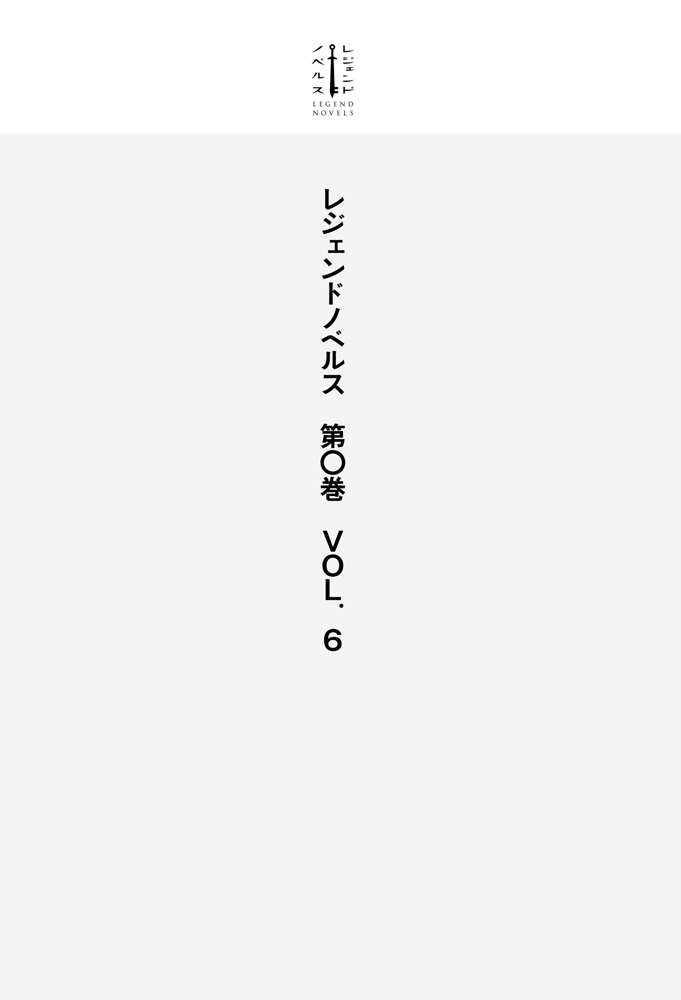

| レジェンドノベルス第０巻 ＶＯＬ．６ ２０１９年３月版 | |
| 原雷火 & 南野雪花 & かすがまる & スフレ | |
| 講談社 (2019) | |
本作品は、縦書き表示での閲覧を推奨いたします。横書き表示にした際には、表示が一部くずれる恐れがあります。
ご利用になるブラウザまたはビューワにより、表示が異なることがあります。

目を開くとそこはジメッとした洞窟の中だった。薄暗い。顔を上げると入り口付近から光が射 し込 んでいるのが見える。
光の中に小動物がちょこんと座っていた。猫だろうか。逆光で影を纏 った猫の額には大きな赤い宝石が埋め込まれていた。同じ色味をした赤い瞳がじっとこちらを見つめている。
紅 蓮 に燃えた双 眸 には、知性が宿っているように感じられた。
魔法生物か合成魔獣あたりだろう。そいつは俺が目覚めたのを確認して、小さな四肢をせかせかと動かしてやってきた。
「やあ、目を覚ましたようだね」
開口一番そう告げて猫は目を細める。洞窟の入り口から射し込む外の光に照らされた体毛は、それはそれは美しい青だ。青い猫なんて見たことが無い。しかも人語を解するのだから、もうただの猫ではないことは明白だった。
ルビーのような赤い瞳を丸く見開いて猫は続ける。
「自己紹介をさせてもらうよ。ボクはナビ。キミを導く者さ」
「俺を......導く？」
「そうだよ。だからまずは名前を教えてくれるかい？」
訊 ねられて、はたと気づいた。自分の名前を思い出せない。記憶にモヤがかかったように、どうして洞窟の奥に倒れていたのかすらわからなかった。
青い猫──ナビはじっと俺を見つめたまま言葉を待つ。
わからない、わからない、わからない。
焦りと混乱で心臓が早鐘を打ち呼吸が荒くなる......ことは無かった。じっと手を見たつもりがその手が無い。腕も足も区分がない。
身体 がまるでスライムのようにグズグズの透明な半液体状なのだ。
つい先ほどまで自分には四肢があり頭部があり胴体がある。と、思い込んでいたが、どうやら錯覚だったらしい。
「名前は......わからない。それどころか俺には俺がわからない。知っているなら教えてくれ」
ナビは小さく首を傾 げた。
「それはボクにも......ただ、キミの使命はこの迷宮の奥にある『真理に通じる門』を開くことさ。それだけは間違い無いんだ」
「迷宮？ このちっぽけな洞穴が迷宮だって？」
振り返っても扉や門の類いはなく、浅い洞穴はすぐに行き止まりだ。ナビは小さな鼻をピクピクとさせた。
「ここはただの洞穴さ。迷宮かどうかは外に行けばわかるよ。ただ、その姿のまま出るのはおすすめできないね。なにせ迷宮だけあって魔物がうようよいるから」
今の俺は地面を這 いずるのがやっとという、出来損ないのゼリーだ。ナビはこんな俺に門とやらを開けという。真理に通じるなんて大層な名前だが、俺みたいなのはお門違いも良 いところだ。
「なあ、頼む相手を間違っていないか？ 俺はその......見ての通りだ」
自分の事すら解 らないのに真理もクソもないだろう。門を開く腕すらない。
「そうだね。今のキミは不定形で自分がなんなのか定義することさえできないみたいだ。ちょっとこれを見てくれるかな」
青い身体をブルッと震わせたナビに変化が起こった。額の宝石が光り輝き洞窟の壁に映し出されたのは──
名前：？？？？ 種族：unknown レベル：０
力：？？？？ 知性：？？？？ 信仰心：？？？？
敏 捷 性 ：？？？？ 魅力：？？？？ 運：？？？？
文字列に加えて今の俺の姿も表示される。溶けた蠟 よろしく、崩れて形を失った水色の形容しがたいなにかだ。
洞窟の壁に俺の姿と「？？？？」で埋められた項目を羅列してナビは呟 いた。
「とにもかくにも、まずはステータスを確定しないとね。最初が肝心だよ？ それで大まかにだけど種族が決まるんだから」
表示された文字列の種族欄には「unknown」と書かれている。
「俺はunknownなんだろう？」
「そうだね。何者でもないという意味さ。ボクはそんな何者にもなれないキミを手助けするためにやってきた。ボクがいればキミは別のなにかに生まれ変わることができるんだ」
「このグニャグニャな状態から脱することができるなら、なんだっていい。やってくれ」
今の姿のまま暗がりでコケのようにへばりついて蠢 くだけの人生なんて、生きながら死んでいるようなものだ。
ナビは嬉 しそうに目を細めて小さく頷 いた。
「それじゃあ契約成立だ。キミにこのステータストーンをあげるよ」
額の赤い宝石から投射された光が一つに集まった。それは小石ほどの大きさになって実体化する。綺 麗 な立方体で、一つの面につき数字が一つずつ書かれていた。
真っ赤な六面体ダイスである。ゆっくりと回りながら、ダイス──ステータストーンは宙にふわりと浮かんだ。
「レベルアップごとに出た数値を自由にステータスに割り振っていくんだ。さあ、振ってみて」
腕を伸ばすイメージをすると触手のように身体が伸びた。ステータストーンを摑 む。光が溢 れて触手の先を赤く染めた。
何も考えずに放り投げる。石はコロコロと地面を転がり、４の目を出すと砕け散った。その砕けた粒子が光を帯びて俺の身体に吸収される。
どうやら上 手 くできたようで、ナビは満足そうに尻尾と耳をピンと立てて上機嫌だ。
「よかった。平均値以上だから出だしとしては上々だね。さあ、ステータスを決めよう」
再び壁に俺のステータスが映し出される。が、先ほどとは一ヵ所だけ違っていた。
名前：？？？？ 種族：unknown レベル：１
力：？？？？ 知性：？？？？ 信仰心：？？？？
敏捷性：？？？？ 魅力：？？？？ 運：？？？？
「レベルが１になったな。ところでステータストーンはこれっきりなのか？」
「魔物を倒して経験を積めば生成できるんだ。これからキミは自分でどうなりたいのかを決めて、それに合わせて魔物と戦い成長していかなきゃいけないんだよ。ちなみに一度割り振ったステータスは基本的には変えられないから、慎重にね」
迷宮には魔物がわんさかいて戦闘は避けられない。むしろ戦って強くなれ......ってか。
ナビは続ける。
「ステータスによってキミの姿は千変万化するんだ」
ダイスの出た目と身の振り方で「unknown」ではない別のなにかになることができる──ということだろうか？
結局自分が何者なのかはわからないままだが、ひとまずナビに協力しよう。
親切にしてくれたのだから、それに応えるくらいはしてやりたい。
と、なぜそう思うのか自分でも不思議だった。もしかしたら「unknown」になる前の俺は、存外律儀な性格だったのかも知れない。
「なあナビ。ステータスにいくつか項目があるんだが、それぞれについて教えてくれ」
小さな首をちょこんと縦に振って小動物は言う。
「お安い御用さ。『力』は腕力や体力や回復力に肉体の強 靱 さといった、身体的な強さだよ」
どうあれ魔物と戦うならパワーがあるに越したことはない。
「知性を高めれば攻撃系が充実した黒魔法の威力や、魔法力の容量上限が増えるんだ。魔法はレベルが上がれば覚えていくけど、特別な魔法は誰かに教えてもらったり、古文書を読んだりして覚えることもあるそうだよ」
魔法か。なんとなくだが、昔使っていたような気がする。まあ、気のせいだろうけど。
「信仰心は魔法防御力や回復に秀でた白魔法に関係するね。呪いを解いたり毒や麻 痺 といった状態異常を治療するのに便利なんだ」
つまりは魔物から毒だの麻痺だのを食らう可能性があるらしい。搦 め手 から攻められると厄介だな。長く旅を続けるなら白魔法の存在はありがたそうだ。
「敏捷性は回避率や行動速度、それに攻撃の命中率にも関わるんだ。特に弓みたいな射撃武器ではその効果も顕著になるよ。器用さも高くなるから、罠 を解除したりもしやすくなるんだ」
遠距離攻撃主体なら力をすっぱり諦めて、敏捷性に集中するのも悪くない。
「魅力は容姿に影響があって交渉力が上がるんだ。異性に限らず数値が高ければ多くの協力を得られるようになるね」
「協力ってことは、ここには他にも誰かいるのか？」
訊 き返すとナビは「迷宮の中だけど『街』があるからね。詳しいことはその『最果ての街』に到着してから説明するね」と答えた。
そして説明をこう締めくくる。
「最後の項目の運は相手の弱点を突いたり、倒したモンスターから得られる報酬がよくなったりするよ」
他に比べていまいちぱっとしないというか、運任せっていうのはどうなんだろう。
解説を終えてナビはもう一度俺を見つめた。
「さあ、ステータスポイントを割り振ってみて。どうするかを強く頭の中で思い浮かべるんだ」
「一つの項目にポイントを集中させてもいいのか？」
「もちろん自由だよ。バランスを取るのもいいけどね。キミ次第さ」
初回に割り振れるのはステータストーンの目で出た４ポイント。あまり深く考えず俺はその配分を強く思い描いた。
「なるほど。おめでとう。キミはunknown卒業だ」
身体が光に包まれたかと思うと、崩れたゼリーのような肉体がぎっしりと固まっていった。
太く雄々しくたくましい丸太のような四肢に、腰には布きれ一枚という姿だ。
下顎からは牙がのぞき、樽 の如 く大きな腹を抱えたその見てくれは──オークだった。緑色の肌は皮膚も厚く強靱だが、豚というかイノシシじみた顔はお世辞にも魅力的とは言いがたい。
あの液体と固体の中間のような身体が噓 のように、俺の存在はオークとして確定した。
「ステータスを確認しようね」
ナビが再び壁に一覧を映し出す。
名前：？？？？ 種族：オーク レベル：１
力：Ｇ＋（４） 知性：Ｇ（０） 信仰心：Ｇ（０）
敏捷性：Ｇ（０） 魅力：Ｇ（０） 運：Ｇ（０）
数値の前に文字がついていた。ナビがすかさず解説する。
「ステータスの数値によって大まかにランクが設定されているんだ。＋がついているのは中でも秀でているという意味だよ。ランクはＧからＡまであるんだ。更にＡより上もあるけど、到達するのは難しいかも知れないね」
俺はどの数値も最低ランクということらしい。ゆっくりと身体を起こして立ち上がった。
身体が肥大化し背も高くなったからか、頭頂部が洞穴の天井スレスレだ。
手を開いたり閉じたりしてみる。動きにぎこちなさはない。最低ランクとはいえ丸太のような腕は力に溢れており、これなら魔物相手にも戦える気がした。
ナビが足下から俺を見上げる。
「名前の欄だけ埋まらないね。どうしようか？」
名乗る名前を自分でつけなきゃいけないのか。こういう時、記憶が無いってのは困るな。
「姿は変わったが、自分の名前は思い出せずじまいだ。ナビが名付けてくれないか？」
俺の提案が意外だったようで、ナビは一度目をぱちくりさせたが、すぐに頷いた。
「わかったよ。それじゃあキミは今日から記憶が戻るその日まで、ゼロと名乗るといい」
「ゼロ......unknownとあまり変わらないな」
「気に入らないなら自分で名前をつけるかい？」
「こちらからお願いしたんだ。その名前をいただくよ」
「わかった。これからよろしくねゼロ」
「こちらこそだナビ」
ナビはくるんと俺に尻尾を向けて、ゆらゆらとさせながら洞穴の入り口へと歩いて行った。
「さあ行こう。キミならきっと門を開くことができるよ」
何も知らないレベル１のオークに、あんまり期待されてもな。まあ、やるだけやってみるさ。
ナビに従ってついていく。光に満ちた入り口が、だんだんと近づいてきた。ジメッとよどんだ空気が新鮮なそれへと変わっていく。
外に出る。まぶしさに目を細めつつ空を仰ぐと......そこに青空は無く、固い岩盤に覆われた高い高い天井と、太陽の代わりに光り輝く天に浮かぶ光球があった。
視線を戻すと目の前に森が広がっている。針葉樹と広葉樹がない交ぜになった混交林だ。
「ここは本当に地下なのか？」
「迷宮第十階層。地上から千メートルは地下にあるだろうね。といっても、ここらへんですら入り口みたいなものだよ。街があるのはもっと下の階層さ」
地底世界に広がる森は鬱 蒼 と生い茂り、青空が無いこと以外は地上と変わらない風景に戸惑いながらも、俺は一歩を踏み出した。
まずは高めた腕力を駆使してレベル上げだな。森から感じる様々な気配に、自然と鼻息が荒くなった。
森の魔物は二種類に分けられる。襲ってくるものとそうでないものだ。
先ほどまでの俺と同じような、透明の水饅頭 みたいなスライムたちは、こちらから仕掛けない限り攻撃してこなかった。
なので俺の方から襲いかかった。実にオークらしい所業と言えよう。
戦ってみると連中は体当たりしかしてこないが、これがけっこうな勢いである。相性が悪いことに、スライム系は打撃への耐性があるらしく、拳を武器にする今の俺では倒すのにやたらと時間が掛かってしまった。
他に小さな角の生えたウサギなんてのもいたが、すばしっこくて攻撃が当たらない。きっと敏捷性が高ければ狩ることができるのだろう。
重たい身体で逃げる相手を追うのは辛 い。そこで戦う相手を〝襲ってくるタイプ〟の魔物に絞り、自然と迎撃という形を取るようになった。
森の茂みから飛び出してきたのは狼 だ。その体毛はくすんだ銀色で、牙を剝 き俺の喉笛を狙って嚙 みちぎろうと跳躍する。
「俺を狩れると思ったか」
腕に力を込めて拳を狼の鼻面に叩 き込 んだ。
「キャウンキャウン！」
甲高い悲鳴を上げて狼は身をよじらせると地面を転がった。が、まだ息がある。
すかさずナビが声を上げた。
「トドメを刺さないと経験値にはならないよ」
今の俺には魔物に情けをかける余裕などない。横たわり無防備になった腹を容赦なく蹴り上げると、狼の身体が赤い光の粒子に変わった。
光の粒はナビの額の宝石に吸い寄せられて消える。
「はぐれ銀狼を倒したね。本来は群れで行動する狼型の魔物だけど、争いに負けて群れを追われた個体だよ。この『蒼 穹 の森』ではちょうど真ん中辺りの強さになるね。あともう一匹倒せばレベルが上がりそうだ」
「この調子で襲ってくる奴 を倒していけばいいんだな？」
俺の問いにナビは長い尻尾を左右に揺らした。
「倒せないと思ったら逃げるのも手だからね。戦いに自信がついてから強敵に挑むのもいいんじゃないかな」
何はともあれレベルを上げて悪いことは無さそうだ。
ナビを引き連れて俺は森の奥へと進む。今度は、はぐれ銀狼が二体同時に現れた。
「二対一だよ。気をつけて」
ナビの声に身構えるより早く、二匹が左右から挟み込むように俺めがけて疾駆する。
まったく、はぐれ者同士で連携しやがって。こちらは独りだ。ナビは情報をくれても助太刀はしてくれないらしい。
右腕を振るって一匹を叩きのめしたが、もう一匹に左腕をがぶりと嚙みつかれた。
オークの表皮が硬く丈夫といっても、狼の牙は研いだナイフのように鋭く突き刺さる。
腕を振り上げ嚙みついた狼を背中から地面に打ち付けると「キャウン！」と、情けない悲鳴を上げて、ようやく銀狼は俺の腕から離れた。
身体を傷つけられた怒りがこみ上げて、地面に這いつくばった二匹にそれぞれ蹴りを見舞う。二匹とも赤い光にその身を変換されて、ナビの額の宝石に吸い込まれた。
「おめでとう。レベル２だ。ステータストーンを一つ手に入れたね。早速使うかい？」
「ちょっと休ませてくれ。クソッ......血が止まらないな」
勝利したものの、左腕はだらりと下がったままだ。
「戦う以上、負傷はつきものさ。だけど休んでいれば傷は治るよ。オークなら他の種族よりも回復は早いんだ」
「そいつは便利だが......痛いのはしんどいな」
白魔法で回復できれば楽だろうに。無い物ねだりってやつだな。前向きに考えよう。
力に特化したオークだからこそ、はぐれ銀狼二匹を相手にも戦えたのかも知れない。ポイント一極集中でなければ、こうはいかなかったはずだ。
呼吸を整えると出血が次第に治まってきた。本当に回復しているらしい。
左腕が再び動くようになり、落ち着いたところで俺はナビに告げる。
「よし。ステータストーンを出してくれ」
「わかったよゼロ。どんどん戦ってレベルを上げてね」
ナビの額の宝石から放たれた光が集約して、真っ赤な六面体ダイスになる。浮かび上がったそれを手にすると、俺は投げる前に訊く。
「例えば６の目を上にしてそっと置いたらどうなるんだ？ 毎回６を出し放題だろ」
「やってみるといいんじゃないかな」
禁止されていないなら、それも手だ。ステータスポイントは多いに越したことはない。
ダイスの６の目を上にして、そっと地面に置こうとすると──
ステータストーンは俺の手を離れてひとりでに転がった。出た目は１だ。
「あっ......なんてこった。こうなると解ってたのか？」
非難の視線をナビに向けるが、小動物は首を左右に振った。
「出た目が１だったのは残念だね。けど、必ず１が出るというわけじゃないんだ。どんなやり方をしても出る数値はランダムさ」
「そうなのか。なら威勢良く振った方が気分的にマシかもな」
数値決めにズルは無しってことらしい。
ステータストーンは砕けて俺の身体に吸収された。もちろん、上げる項目は決まっている。
名前：ゼロ 種族：オーク レベル：２
力：Ｇ＋（５） 知性：Ｇ（０） 信仰心：Ｇ（０）
敏捷性：Ｇ（０） 魅力：Ｇ（０） 運：Ｇ（０）
ダイスの出目が悪かったものの、これでまた一歩前進だ。もう少しだけ休んだら、次の敵を探すとしよう。
魔物たちは俺に向かってくるばかりで、ナビの事は同じ魔物とでも思っているらしく、眼中にないようだ。まあ、ナビを守りながら戦うのは負担になるので、こちらとしては好都合だった。
存分に目の前の敵に集中できる。戦闘のコツというか、要領もだんだんとつかめてきた。
手傷を負うと回復に時間が掛かるため、仕掛ける時は魔物が一匹だけのところを狙う。
基本はタイマンだ。複数を相手に負けこそしないが、各個撃破なら反撃を受ける前に倒すことも可能である。
一匹だけのはぐれ銀狼を狙ううちにレベル３になった。早速ステータスを上げよう。
転がしたステータストーンの出目は３か。他の項目には目もくれず、力につぎ込んだ。
蒼穹の森には果実のなる木々も多い。甘みもなく皮も硬いが、鈴なりの黄色い柑 橘 をもいで、果実で飢えと渇きを癒やすとまた戦う。食べることで回復力が上がるらしく、反撃を受けて負った手傷も数分休めばふさがった。頑健なるオークの肉体様々だ。
そうこうしているうちに早くもレベルが４になった。振ったステータストーンの出目は５だ。力の数値が13 になったところで、ナビから「そろそろＧからＦに上がるかも」と言われた。
はぐれ銀狼も三体程度ならまとめて倒せるようになり、嚙まれたくらいではどうということもなくなった。
「なあナビ。そろそろもう少し強い相手と戦いたいんだが？」
「それなら森の中心にある幻影湖まで出てみよう。先に進めば次の階層に続く祭壇もあるよ。魔物も強くなるはずさ」
祭壇とやらにたどり着けば、次の階層に進めるのか。
「湖畔には小屋が建っているから、今夜はそこで休むといいかも知れないね」
空を見上げると、生い茂る木々の間から降り注ぐ光が、かすかに弱まりだしていた。
「こんな地下でも昼夜があるのか」
「光球はだんだんと赤くなって、夜になるとうすぼんやりと光る月みたいになるよ。階層ごとに昼夜はバラバラだから、この階層が昼でも次の階層が夜っていうこともあるんだ」
「まるで地底の太陽だな。自然の産物には思えない。あんなもの、いったい誰が作ったんだ？」
「それはボクにはわからないね」
わからないと言えば、そもそもナビについても知らないことだらけだ。
茂みに分け入り獣道を進みながら、一歩先行く案内人に訊ねる。
「なあ、お前はいったい何者なんだ？」
「ボクはナビ。キミを導く者さ」
「それは最初に聞いたって。お前の目的はええと、なんだかの門を俺に開かせたいんだよな？」
「なんだかじゃないよ『真理に通じる門』さ」
「俺のことを助けてくれたし、恩に着るから協力するが、その門を開いてどうするんだ？」
立ち止まると前を向いたままナビは続ける。
「ボクはここから出られないんだ。迷宮の外には地上世界が広がっているけど、そちらに行くことはできないからね」
「地上世界？」
小動物の背中がしょんぼりと、どことなく寂しげに見えた。
「そうだよ。地上世界から冒険者たちが迷宮深くに降りてくる。彼らは出入り自由だけど、ボクは地上世界に戻れない。キミはきっとボクと同じじゃないかな。たぶん地上世界には出られないよ。だから一緒に『真理に通じる門』を開いて、戻るんじゃなく先に進むしかないんだ」
「その肝心の門はどこにあるんだ？」
「それは......たぶん地下二十階層よりも更に下だろうね。二十階層にある『最果ての街』で情報を集めたいのだけど......」
耳と尻尾をぺたんと下げてナビは溜 息 混じりだ。
「どうしたんだ？」
「ボクはキミにしか認知できない存在なんだ。街にはたくさんの冒険者がいるけれど、誰もボクの声に応えてくれなかった。キミがきっと最初で最後のチャンスなんだと思う」
ますますうなだれるナビが不 憫 に思えた。
「わかった。俺がナビの代わりに街での情報収集も担当するぜ」
「ありがとうゼロ。キミは素晴らしい人物だ。それだけに、無茶はせずじっくり成長しながら街を目指そう。死んでしまってはどうにもならないからね」
焦りは禁物ってことだな。
「ボクは魔物に感知されないから二十階層からここまでやってこられたけど、迷宮の地下十階層より下は、本来なら熟練冒険者でも簡単には突破できないんだ。降りるごとに魔物も強くなるよ」
道理で魔物たちがナビを無視して俺ばかりを襲うわけだ。
こいつは俺にしか認知できない。冒険者で賑 わう街でもずっと孤独だったんだろうな。
俺が死んだらまた独りぼっちか。って、同情するより我が身の心配をした方がよさそうだ。俺が生き残ることが、こいつのためにもなるんだし。
「階層ごとの強さの目安はあるのか？ 街に着くまで、だいたいどれくらいレベルを上げればいいのか教えてくれ」
「あくまでボクの見立てだけど、最果ての街にたどり着く冒険者のレベルは50 くらいかな」
「ここから十階層も降りる間に、自然とそれくらいにはなるんだろうな」
「十階層から十一階層に行くなら最低でもレベル５以上は欲しいね。ただ、同じレベルでもステータストーンの出目によって実力は違ってくるし、ボクは冒険者ではないから、ステータスの割り振り方について最適なアドバイスもできないんだ。ごめんねゼロ」
「謝るようなことじゃないだろ。教えてくれてありがとうな。ひとまずオークの肉体は頑丈で頑健だ。このまま力の項目を伸ばして二十階層にある街を目指そう。だからこの先も案内頼むぜ」
「うん。任せて。ボクが通ってきたのは最短ルートだけど、そういう道は決まって強力な魔物が塞いでいたりもするから、勝てない相手がいる場所は、機会を待つか迂 回 路を探すのもいいかも知れないね」
今の俺にはナビが必要で、ナビもまた存在を認識できる俺を必要としている。
迷宮を抜けるまで共同戦線だ。
森を歩くうちに次第に空が赤く染まっていった。
そのまま三十分ほど行軍する。四度、魔物の襲撃を受けたが、途中でレベル５になった俺の敵ではない。
レベル上昇で得たステータストーンを使って、初めて６が出た。ダイス運も上向きだ。
名前：ゼロ 種族：オーク レベル：５
力：Ｆ＋（19 ） 知性：Ｇ（０） 信仰心：Ｇ（０）
敏捷性：Ｇ（０） 魅力：Ｇ（０） 運：Ｇ（０）
力がＧからＦになった途端、すぐさま襲撃を受けた。
茂みから唸 り声を上げて無数の獣の影が跳ぶ。
我ながら一極集中に過ぎると思うものの、はぐれ銀狼程度なら五匹に囲まれてもまったく怖くない。彼らの爪は皮膚に傷をつけることも叶 わず、肉を裂き骨を砕く自慢の牙をもってしても、今や俺にとっては甘 嚙 みだ。じゃれつかれているんじゃないかと錯覚するくらいだった。
反撃に転じた俺は、力任せの大ぶりはせず一匹ずつ拳で狼の頭を打ち据える。
二匹、三匹と倒すうちに、残りのはぐれ銀狼たちは臆したのか「キャインキャイン！」と声を上げて森の奥に跳ねるように逃げて行った。
結局、仕留められたのは三匹だけだ。敏捷性をまったく上げていないので、魔物と遭遇するとほとんど先手を敵に取られてしまう。
まあ、こうしてカウンターで倒せるので問題無いわけだが、ああも逃げられると、やはりどうにも重たい身体で追撃は難しい。
力以外のステータスにも割り振った方がいいんだろうか。ちょっと悩みどころだな。
ナビの赤い瞳が暗い森にぼんやり光る。
「油断は禁物だよゼロ」
「大丈夫だって。しかし魔物に逃げられると厄介だな。手傷を負わせても倒さなきゃレベルは上がらないんだし」
戦うほど強くなる。それにだんだんと快感を覚えつつあった。だからこそ敵を逃して取りこぼすのがもったいない。
空の茜 色 が暗い青に染まりきった頃、ふと、鼻孔に湿り気を感じた。
ナビもヒゲをピクリとさせる。
「そろそろ幻影湖が近いね」
獣道を抜けると視界が拓 けた。
空には光球が薄ぼんやりと弱々しい光を浮かべている。その光球を波一つ立たない鏡面のような湖が、湖上にも映していた。
二つの月が水平線を挟んで並ぶ光景は神秘的だ。
「幻影湖の向こうに行けば魔物も強くなるよ。今夜はあそこで休もう」
ナビの視線の先には丸太を組み上げて作られた小屋があった。
ああいった建物は、地上世界の冒険者たちによる迷宮開拓時代の名 残 りだと、ナビは俺に教えてくれた。休むにはうってつけだな。一眠りして明るくなったら、すぐに出発しよう。
翌朝──
幻影湖を越えると遭遇する魔物の種類が変化した。
はぐれ銀狼や角ウサギは姿を消して、巨大昆虫が増えたのである。どうやら魔物にはテリトリーがあるらしく、湖畔から先の森は昆虫たちの楽園だった。
イノシシサイズのカブトムシ──マキシビートルは、その硬い殻に手を焼いた。がっぷり四つに組んでひっくり返し、比較的柔らかい腹側を攻撃すれば倒せるものの、手間が掛かる。
イヌワシほどの大きさの蜂──鳥 喰 蜂 は針が厄介で、刺されるとしばらく身体の動きが鈍ってしまう。オークの回復力をもってしても、麻痺毒の無効化とまではいかないらしい。
それでも羽さえもいでしまえばこちらのものだが、跳び回る鳥喰蜂を摑むのに苦労した。
問題は蒼穹の森でも大型に分類される魔物だ。
俺の身長より二回りほど大きい、体長二メートルを超す巨大ナメクジ──グラウンドスラッグ。
こいつのテラテラと濡 れた表皮は摑み難 い上、軟体なので打撃の効果は薄い。
幸い、ナメクジはのしかかってこようとするばかりで動きも遅く、逃げることはできるのだが、分かれ道など要所要所で出くわした。迂回したり大樹の陰に隠れてやり過ごしたりと、苦戦というよりは我慢を強いられた。
「武器が欲しいな」
大樹に背を預け、巨大ナメクジが幻影湖方面に這いずっていったのを確認してから、俺は吐息混じりに呟いた。
武器になるかと思ったのだが、そこらで拾える朽ちた枯れ木の棒程度では、振るっただけで折れてしまう。薪にしかならなそうで、正直、己が拳で殴った方が強かった。
俺の溜息にナビが応える。
「武器や防具やアイテム類は、魔物を倒した時に手に入ることがあるよ。使い難い装備はボクにまかせて。分解して保管しておくから。一度分解してしまうと元には戻せないけど、素材の方が換金率が良いしね。最果ての街についたら換金しようね」
「お前、そんなことができるのか？」
「ボクはキミを導く者だからね。任せてよ」
戦う以外はお任せって感じだな。ありがたく頼らせてもらうとしよう。
しかし、この調子じゃ街に着くのは何日先だろう。そう思った矢先の事だ。
ブイイイイイイイイイイイイイイイイイイイイイイン！
と、煩わしい羽音を立てて、森の奥から金色の塊が俺めがけて飛んできた。
子犬ほどのサイズのカナブンだ。金属塊のようなそれは、俺のみぞおちめがけて突っ込んできた。ドスッと重苦しいボディーブローが炸 裂 する。
が、オークの厚い腹肉に衝撃は阻まれた。突撃の勢いを失った金色のカナブンを俺は両手で摑むと地面に叩きつけ、踏み潰す。
ぐしゃっと音を立てて巨大カナブンが光の粒子に還元された。
と、同時にナビが声を上げた。
「レア魔物のコンジキブイブイを倒したよ。しかもアイテムをドロップしたみたいだね」
一度は四散した光の粒子が寄り集まって、それは両手持ちのメイスになった。全長一・五メートル。太い金色の金属製シャフトの先端に、黄金のトゲ付き球がついている。肩から掛けられるマウントベルト付きだ。
こいつで殴られると痛いじゃ済まないだろうな。刺突粉砕の破壊力は、腕力が全てな今の俺にこそ、うってつけである。
拾い上げて柄の部分を摑むと、実にしっくりきた。
「おお、いいじゃないか。重量感といい握った感じといい。これなら全力で振り回せそうだ」
足下で小躍りするようにナビが尻尾を揺らす。
「それはゴルドラモルゲンシュテルンだね。レア度Ｂで、十階層で手に入るのは珍しい武器だよ。素材にもできるけど装備するにはぴったりだね」
「運の項目は全然上げてないんだが......ま、いいか」
あえて運にポイントを費やす意味は無い気がした。
手に入れた得物を軽く振るってみると、風圧で茂みや木々の葉が震えるように揺れた。
剣術だの弓術だのと技術を要さず、ただ力一杯殴りつける。シンプルなのがいい。
「その装備なら二十階層まで通用するんじゃないかな。早速敵と戦ってみよう」
ナビに促されてすぐさま標的を探した。
今の俺はまさに鬼に金棒だ。遭遇した魔物めがけて、お構いなしに突っ込んだ。
狙うはマキシビートル。武器なしでは手間の掛かる相手である。
敵がこちらに気づく前に突撃し、不意打ちで頭部めがけてトゲ付き黄金球を叩きつける。金属塊のように硬かった甲殻が簡単にへしゃげて、組み合う間もなくマキシビートルは光に消えた。
レベル６になったのはその直後の事だ。
早速出たステータストーンで得たポイントは２と低かったものの、手に入れた武器の強さを考えれば誤差の範囲ってやつだな。
名前：ゼロ 種族：オーク レベル：６
力：Ｆ＋（21 ） 知性：Ｇ（０） 信仰心：Ｇ（０）
敏捷性：Ｇ（０） 魅力：Ｇ（０） 運：Ｇ（０）
装備：ゴルドラモルゲンシュテルン レア度Ｂ 攻撃力80
スキル：ウォークライ 持続三十秒 再使用まで五分
「なんだこのスキルってのは？」
「固有能力だね。ウォークライは戦いの雄 叫 びさ。相手に聞かせることで戦意を削 いで、自分自身の闘争心を燃え上がらせる技だよ」
「声を出して気合いを入れる......ってことか？」
「その気合い入れをもっと自分の力として認識して行うことで、スキルはスキルとして発動するんだ。声で相手に気づかれるから奇襲には向かないね」
元々敏捷性をまったく上げていないから、先制攻撃の権利なんて最 初 から捨てている。
「一度使うと五分間は使えないから気をつけて。今のペースなら一度の戦闘につき一回使えるかどうかだね」
最初に使うか、ここぞという時に使うか悩ましい。が、行動の選択肢は増えるに越したことはなかった。
幻影湖を出発して半日、虫たちの領域を抜けると、再び動物系の魔物のテリトリーに入った。
襲ってくるのはウサギ系ばかりで先制攻撃を受けたが、反撃で楽々勝利を重ねること数度──
鬱蒼と茂る森がパッと開けた。そこだけ切り取ったように草原で、中央に石造りの台座が遺跡の如く鎮座している。
やっと最初の目的地である祭壇にたどり着いたみたいだな。
すぐに飛び出さず俺は森の木の陰から様子をうかがった。
まず中央の石造りの台座を遠目から確認する。オークの視力は優れているとも劣っているとも言えなかった。
あれ？ なにと比べてだろうか。ともあれ、今の視力は鷹 の目とは言えないが、それでも遺跡らしい雰囲気は見て取れる。
台座は明らかに人の手によって作られた物だ。
ナビが街で仕入れた情報によると、地上世界から冒険者たちがやってきた時から、階層と階層を繫 ぐこの祭壇は、各階層の地底世界を照らす光球と同じく、すでに存在していたらしい。
石の台座には供物を捧 げる特別な祭壇という雰囲気があった。いつしか迷宮に挑む冒険者たちの間にその名が定着したのも、自然なことだったのかも知れない。
迷宮の階層は祭壇によって繫がっている。階段で下っていくのを勝手にイメージしていたが、ナビ曰 く、祭壇の上に乗ると転移魔法で次の階層に飛ばされる仕組みなのだとか。
問題は、そんな祭壇の前に立ち塞がるひときわ大きな魔物だった。
蒼穹の森における最強の魔物──獅 子 ウサギ。
燃えるようなたてがみを生やした巨大なウサギ型の魔物だ。
体毛は茶色で大型のクマほどの巨体だが、長い耳や手足の作りはウサギのそれである。瞳は金色をしており、森から続く獣道をじっと見据えていた。
手先は器用らしく、巨大な杵 を手にしている。それを易 々 と振り回すというのなら、膂 力 は他の魔物たちと一線を画すレベルだろう。
こうした強い魔物はたとえ冒険者に倒されても、森のどこからか新しい個体が現れて祭壇を守る......とは、ナビが街で耳にした情報だ。
足下でナビが俺に告げた。
「月に一度、夜の光球が完全に消える新月の時だけ獅子ウサギは眠るみたいだよ。あと二週間待てば安全に先に進めるね」
「そういう情報は早く言えって」
判 っていれば比較的安全な湖畔でチャンスを待つという選択肢もありだった。
「ゼロ......ボクはキミを導く者として自分なりに考えているつもりだよ。事前情報の全てをキミに伝えても混乱するんじゃないかな？」
赤い瞳をくりっとさせてナビはじっと俺の顔を見上げる。これは俺が良くなかったな。強敵を前にして、柄にも無く緊張したらしい。
「お、おう......その、悪かった。配慮してくれたんだな」
「ボクの方こそごめんね。これからは少し先の事でも相談するよ」
こいつはこいつなりに俺の事を考えてくれているんだし、ここで責めるのはお門違いだ。
「なあナビ。獅子ウサギについてわかる範囲で教えてくれ」
「すぐに戦うつもりかい？」
「武器もあるしスキルも覚えた。そもそも倒せないなら、この先やっていけない......違うか？」
身体も大きく鈍重なオークの俺が、見晴らしの利く開けた草原の真ん中に陣取る獅子ウサギに、奇襲を仕掛けるのは不可能に近い。たとえ森の中を迂回して背後を取っても、ウサギ系の魔物なら接近途中でこちらに気づくだろう。
あの長い耳はいかにも音や気配を拾いそうだ。
正面からぶつかってやる。覚悟の眼 差 しを向けた俺に、ナビは小さく頷いた。
「わかったよゼロ。獅子ウサギはウサギだけあって素早いんだ。それから蹴りが強力だよ。ジャンプからの武器の振り下ろし攻撃には気をつけてね」
「蹴りまであるのか。まあウサギが脚力を活 かさない手はないよな」
ここにたどり着くまで、両手両足の指の数では足らないほどの魔物を葬ってきた金色槌 ──ゴルドラモルゲンシュテルンの柄を両手で握って、俺はゆっくり息を吐く。
ナビが耳と尻尾をうなだれさせながら忠告した。
「本当に無理だと思ったら退却をオススメするよ。祭壇を守る魔物は一定以上離れると追って来ないらしいからね」
陽動にも引っかからず守るべき祭壇を放棄しないとは見上げた根性だ。
ナビに告げる。
「魔物にはお前のことが見えないとはいえ、戦いで巻き添えを食うかも知れないからな。ここで待っていてくれ」
「わかったよゼロ。きっとキミなら勝てるよ」
赤い瞳がかすかに潤んだように見えた。
ナビの励ましに頷いてから肺いっぱいに息を吸い込んで、腹にまで空気をため込むと、吐き出す勢いとともに俺は声を上げた。
「ウオオオオオオオオオオオオオオオオオオオオオオオオオオオオオオオッ!! 」
獣のような咆 吼 とともに大樹の陰から飛び出すと、猪 突 猛進する。一直線に標的へと向かい、モルゲンシュテルンを獅子ウサギの脳天めがけて叩きつけた。
が、俺の一撃は素早く構えられた杵の柄に阻まれた。獅子ウサギに押し返されて半歩下がった途端、杵が鼻面をかすめる。
やばい臭いがプンプンだ。事前情報通り、こいつは図 体 に見合わず素早い。力で互角でも俺には速さが足りていない。
再びモルゲンシュテルンを食らわせようと身構えた時には、獅子ウサギの前蹴りが俺の腹に炸裂していた。
「──ッ!? 」
派手に後方に吹き飛ばされて、俺は草原を転がった。衝撃が内臓にまで届いて、一瞬呼吸が止まったじゃないか。ったく、オークじゃなければ今の一撃は致命傷だ。
敏捷性と力を兼ね備えているなんて、まったく困った魔物だな。
俺は立ち上がろうとしたが、危険を察してその場で樽のようにゴロゴロと転がった。
たった今、俺が倒れていた場所に空から獅子ウサギが降ってきて、杵の一撃を見舞う。
ズドンと射貫くような音が草原に響いた。
ナビが注意しろと言っていたジャンプ攻撃だ。転がっていなければ、立ち上がる間に頭部を吹っ飛ばされていたかも知れない。
杵の一撃によって地面が陥没し、今し方俺のいた場所に小さなクレーターが出来あがる。叩きつけた杵は地面にすっぽりはまって埋没し、獅子ウサギはそれを抜くのに手間どっていた。
その隙に立ち上がり、モルゲンシュテルンを構え直して敵を注視する。
ズボッと杵の先端を地面から引き抜くと、獅子ウサギもこちらをじっと見つめて鼻をヒクヒクとさせた。
よくぞ避けたな。次は外さん......とでも言わんばかりだ。
あのジャンプ攻撃を食らったらやばい。やばい。やばい......が、勝機はそこにあった。
モルゲンシュテルンの柄をギュッと握り直し、じりじりとすり足で距離を詰める。鈍重な俺がコイツに攻撃を当てられるとすれば、カウンターしかない。
互いに手も足も出さず間合いが詰まる。俺は再び得物を大上段に構えた。両腕を振り上げ腹を晒 すと、すかさず獅子ウサギの蹴りが飛んでくる。
かかったな！ わずかに後ろに跳ぶ意識を持ちながら、獅子ウサギの蹴りを受けて再び俺は草原に転がされた。
が、今度は蹴りを受けるのも計算のウチだ。一呼吸おいて身をよじり、寝返りをうつように転がりながら立ち上がった。
そして叫ぶ。
「ウオオオオオオオオオオオオオオオオオオオオオオオオオオオオオオオッ!! 」
仕掛けた時と同じような叫び声だが、今度のそれはスキル混じりのものだった。
ウォークライ。自分自身を鼓舞し相手を怯 ませる技は、空中に飛び上がった獅子ウサギが、落下の加速を込めた一撃を打ち下ろす寸前で、その威力を発揮した。
体勢を崩して杵を振り下ろしながら着地した獅子ウサギは、杵をまっすぐではなく斜めに地面に叩きつけて陥没させ、無防備になった。
そこにすかさずモルゲンシュテルンの一撃を加える。獅子ウサギの横っ面を吹き飛ばす勢いでフルスイングした。
バキャンッ！ と砕ける手応えが両手に伝わるが、間をおかず二発、三発と打ち据える。
杵から手を離してよろめいた獅子ウサギが、前掛かりで俺にしがみつこうと両腕を伸ばす。が、冷静に一歩下がってから、その手を避けて得物を下段からアッパースイングし、顎を砕いた。それがトドメの一撃となった。
顔を空に向けたまま獅子ウサギの身体が光に分解される。すかさず森の木陰からナビが飛び出して、その光を額の赤い宝石で回収した。
「すごいよゼロ。まるで前に一度戦ったことがあるみたいな手際の良さだね」
緊張が解けた途端、どっと疲れを感じた。肩で息をしつつナビに返す。
「ハァ......ハァ......ナビが事前に忠告してくれたおかげだ」
「おめでとう。今の戦いでレベルが上がったよ。ステータストーンを使うかい？」
「ああ。頼む」
ナビの額の宝石から光が溢れてまとまると、六面体ダイスに早変わりした。
握って「６よ出ろ」と念じてから放り投げる。
草原を転がったステータストーンの出目は３だった。
名前：ゼロ 種族：オーク レベル：７
力：Ｆ＋（24 ） 知性：Ｇ（０） 信仰心：Ｇ（０）
敏捷性：Ｇ（０） 魅力：Ｇ（０） 運：Ｇ（０）
装備：ゴルドラモルゲンシュテルン レア度Ｂ 攻撃力80
スキル：ウォークライ 持続三十秒 再使用まで五分
祭壇は十メートル四方の正方形で石造りだ。まるで切り出してきたかのように継ぎ目がなく、触れてみるとひんやり冷たい。
ナビが跳ねるように駆け上がって、祭壇の中心に立つ。
「さあこっちだよゼロ。ボクのそばに来て」
促されるまま祭壇に乗り中央に歩み出ると、足下に幾何学模様のような魔方陣が広がった。円と記号と文字で構成されたものだが、なにが書いてあるのかはさっぱりわからない。
もし知性が高ければ仕組みを読み解くこともできるんだろうか？
足下でナビが尻尾を揺らした。
「あれ？ ずいぶんと落ち着いているね。ボクはてっきりキミが驚いて、転送途中で逃げてしまうんじゃないかと心配していたんだ」
「驚きはしたけど、それ以上に『どういう仕組みなのか？』と思ってな」
「それはボクにはわからないよゼロ」
まあ、こういったことは考え出したら切りが無い。倒した魔物が光に消えるのも、その光を集めてステータストーンに出来るのも不思議な話だ。
「それじゃあ転送を開始するね」
「ああ、やってくれ」
俺の身体は倒された魔物と同じように、光に分解されると魔方陣の中に溶けて消える。
視界は白く染まって、瞬きすると同じ祭壇の上に立っていた。
だが、空──天井は紫色の濃い霧に覆われて、先ほどまでの緑豊かな森が噓のように、陰気くさい場所に出る。ナビが小さく息を吐いた。
「転送は上手くいったみたいだね。ここは迷宮の第十一階層。冒険者たちの間では『城塞廃 墟 』と呼ばれているフロアさ」
石畳よりも滑らかに舗装された継ぎ目のない道に、いくつもの住居跡とおぼしき建物が連なっている。中には数十メートルを超す巨大なものまであった。まるで城だな。
街路に植えられた木々は剪 定 する者もいないためか、好き放題に生い茂っている。
遠くに見える高い塔と、街の周囲を覆う灰色の壁に圧迫感を覚えた。
「なあナビ。さっきの森とはえらく違うな」
「そうだね。この先の事も話しておくかい？」
「ああ。軽くでいいから教えてくれ」
「わかったよ。第十二階層は『星 屑 砂漠』さ。広大な砂の海だよ。出発地点には冒険者たちが残した砂漠越えの装備があるから、利用させてもらうといいんじゃないかな。途中途中のオアシスで給水をしていこうね。ナツメヤシの実がなっているから、それも食べるといいよ。オアシスの位置はボクが把握しているから、迷うこともないし安心してね」
地下で砂漠越えとは驚いた。まだこの十一階層に来たばかりで、次の心配をするには早過ぎるかも知れないが......それでも今のうちに色々と教えてもらおう。
「その次はどういう場所なんだ？」
「十三階層は『大 深 雪 山 』になるよ。防寒具は登山口に冒険者たちが残していってるけど、厳しい寒さに油断はできないね」
暑い砂漠から一転して極寒の雪山ってか。本当に地下なんだろうか？ ナビは続けた。
「十四階層は『巨石平原』になるね。不思議な巨石のオブジェがあるんだ。環境は安定しているけど、魔法を使う魔物が多いよ」
充分に鍛えながら進まなきゃいけなそうだな。
「とりあえず二十階層まで続けてくれるか？」
「わかったよ。十五階層には『なにもない』んだ」
「なにもないって......なんだそりゃ？」
「白い壁と床と天球だけだよ。広さもさっき抜けてきた森と比べれば狭いね。入り口の祭壇から出口の祭壇が遠目に見えるくらいさ。魔物もいないから、素通りできるね」
妙に引っかかるな。考えるだけ無駄かも知れないが、なにもないが〝ある〟ことに意味がないとは思えなかった。なにせ森だの砂漠だの雪山だのと、階層ごとに特徴があるようだし。
「続けるねゼロ。十六階層は『地底湖島』さ。フロア全体が湖で、群島を繫ぐ橋を渡ったり、イカダを使って進むんだ。橋には強力な魔物がいるから要注意だね」
だんだん気が遠くなってきた。更に三つも階層が残っているのか。
「十七階層は『死毒沼地』になるよ。死霊系の魔物が徘 徊 する湿地帯で、麻痺の胞子を吐き出すキノコや、毒の沼地がいたるところにあるんだ」
となればせめて、治療できる程度に白魔法を学んでおくべきか。しかし中途半端にスキルポイントをつぎ込むのは、経験値を無駄にしかねない。俺はしゃがみこんでナビの顔を見つめた。
「なあナビ。俺がこれから信仰心にスキルポイントを割り振っていったとして、何レベルくらいで毒の治療ができるようになるんだ？」
ナビはふるふると首を左右に振る。
「それはボクにはわからないよ。前に言った通り、ステータスやスキルについてのアドバイスはしてあげられないんだ。ごめんねゼロ」
ばつが悪そうなナビの頭をそっと撫 でる。
「お前がいてくれるだけで心強いよ。俺の事なのに俺にもわからないんだから、ナビが知ってるわけないよな」
シルクのような柔らかい手触りの毛並みで、撫でているだけで癒やされる。ナビも気持ちよさげに目を細めた。
「触れられるってこんなに嬉しい気持ちになるんだね」
俺が手を離すと、名残り惜しそうな顔をしてから、尻尾をゆらりとさせてナビは説明に戻る。
「十八階層は『火炎鉱山』だね。熔岩の川が流れる火山地帯だよ。通り過ぎるだけなら危険は少ないけど、鉱山にはとても珍しい鉱石があるらしいんだ。でも、採掘しにいって帰ってこない冒険者が後を絶たないんだってさ」
見つければ一 攫 千 金 ......っと、欲をかくとマグマよりも熱いしっぺ返しをくらいそうだ。
「十九階層は『世 界 樹 上 』だよ。巨大な木の上を、枝を伝って進むんだ。足を踏み外して落ちた冒険者たちがどうなるかは、誰も知らないそうだよ」
最果ての街を目の前にして、最後の試練も手 強 そうだな。
そんな苦難を乗り越えて、街に集った冒険者たちは誰もが超一流ってことかも知れない。
ふと疑問に思った。
「なあナビ。最果ての街についた冒険者たちはなにをするんだ？ やっぱり例の〝門〟とかいうのを探すのか？」
ナビの耳と尻尾が力無くうなだれる。
「二十一階層を探す冒険者もいるみたいだけど、基本的にはあの街で暮らし続けているね。世界樹上には地上世界ではお目にかかれない霊薬の素材があるみたいなんだ。火炎鉱山まで足を延ばして鉱石を探したり、見つけた素材を街で加工、調合してから故郷に持ち帰り、また戻ってくるのを繰り返す冒険者も多いよ。地上まで定期的に戻るキャラバンもいるみたいだし」
だから砂漠や雪山の階層には、それを越えるための装備が置かれているのか。ナビは「二十階層は地上世界と遜色ないどころか、気候も安定していて食料も豊富だから、居着いてしまう冒険者も多いみたいなんだよね」と、締めくくった。
もしかしたらその街自体、冒険者を先に進ませないために用意された、蟻 地 獄 のような罠なんじゃなかろうか。
たどり着く前からそんなことを考えてしまった。
俺はゆっくり膝を伸ばして立ち上がる。
「先は長いが進むしかないみたいだな」
見据える先は灰色の廃墟群だ。まずはこいつを抜けないとな。
力の項目以外を捨てたことが裏目に出た。
城塞廃墟に出現する魔物の中に、天敵が存在したのだ。見た目は土を焼いて作ったような人形で、目は大きくまるで女のような乳房があり、腰のくびれた奇妙なデザインなのだが、羽ばたくわけでもなく空を浮かぶこの魔物──ドグーラは、黒魔法で遠距離から攻撃を仕掛けてくる。
使うのは火炎を矢の如く飛ばす黒魔法──ファイアボルト。得物のモルゲンシュテルンで弾くこともままならない。せめて盾でもあれば違うのかも知れないが、無い物ねだりだ。
ともかく一発もらえばそれだけで、オークの肉体の頑強さが噓のように、炎熱地獄の苦しみを味わうのである。
命からがら逃げ出して、廃墟の建物の陰に隠れてやり過ごす。スタート地点の祭壇から、まだ百メートルと進んでいなかった。
「ハァ......ハァ......ったく。近づけさえすればこっちのもんなんだがな......」
一階層降りただけで、こんなにも敵が強くなるものなのか？ 十階層の祭壇を守っていた獅子ウサギが可 愛 く思えてきた。足下でナビが言う。
「どうやらキミは魔法に極端に弱いみたいだね」
「なるほど。弱点を突かれてるってことか」
武器も手に入れて当分は楽に魔物狩りができると思っていたんだが......いや、選択を間違ったと後悔はしないぞ。あくまで相性が悪いだけだ。
幸いドグーラも獅子ウサギと行動パターンが同じなようで、ある程度距離を取ると元の場所に戻っていった。生き物らしさがまるでない。魔法によって生み出された自動人形という印象だ。
結局、大して探索もできないまま俺は祭壇近くに戻ってきた。十一階層のスタート地点は祭壇を中心として、道が三方向に分かれて伸びている。一つは今し方、死ぬ思いで逃げてきた中央通りだ。残る二つはそれぞれ左右に分かれ、先が入り組んだ小道だった。
「なあナビ。ドグーラがいないルートはないか？」
「ボクはこの城塞廃墟の中央通りをまっすぐ進んできたからね。その道にはさっきの魔物がたくさんいたよ」
出くわしたのが一匹で本当に幸運だった。二匹相手なら逃げ切れず、今頃ファイアボルトで物言わぬ炭の塊にされていただろう。
「とりあえず中央の道は止めておこう......そうだ、右の小道を偵察してきてくれないか？」
ナビにお願いすると、途端にその青い毛が逆立った。
「それは無理さ。ようやく見つけたキミと、万が一離ればなれになったらボクはおしまいだ」
珍しく語気が強い。小さな牙をむき出した顔には、寂しさや悲しみよりも怒りが感じられた。
「どうした？ 俺が逃げたりするわけないだろ。この世界で頼りになるのはお前だけなんだし」
「絶対にだめだよ。ボクはゼロのそばにいる」
「魔物に見つからないお前なら、偵察にはうってつけなんだけどな。まずは俺が無事、二十階層にある最果ての街に着くことが、行く行くはお前のためにもなるんじゃないか？」
偵察任務をこなしてもらえれば、俺としては余計な危険を冒さずに済むので助かるんだが......ナビはますます毛を逆立てて俺に抗議の構えだ。
「キミを見失ったらボクはまた独りぼっちだ。お願いだからボクをこれ以上不安にさせないで。戦闘の時は邪魔にならないようにするけど......ともかく、キミがボクの視界から消えてしまうようなことだけは止めて欲しいんだ」
「わ、わかったわかった。偵察任務の案は無しだ」
どうやら分かれて行動すると言うのは、ナビにとっては最大級の禁句みたいだな。
中央通りを捨てて、低い建物が入り組んだ左右の小道から先に進めないか探ってみたのだが、結局どちらのルートにも避けられない場所にドグーラが配置されていた。
しかも、他に魔物がいないのだ。蒼穹の森では倒せそうな相手を選んで戦うことでレベルを上げてきたが、ここではそうもいかない。
「まいったな。こりゃあ十階層に引き返してレベルを上げた方が良いかも知れない」
俺は舗装路に視線を落として溜息を吐いた。正直なところ、獅子ウサギを倒してレベルが上がったため、森に戻って戦ってもなかなかレベルが上がらなそうだ。
同格の魔物なら充分な戦闘経験を得られるが、格下が相手になるとガクッと落ちて何十匹、下手をすれば何百匹も狩らなければならない。早くも〝壁〟を感じた。
足を止めるとナビが顔を上げて俺に言う。
「今のままだとドグーラと戦うにはレベル10 は必要じゃないかな」
「ったく......ポイントの振り方を間違えたかなぁ」
途方にくれながら足下のナビを見ていて、ふと気づいた。舗装された道には時々、丸い金属製の板のようなものがはまっている。今もナビがその上にちょこんと座っているんだが......金属板には窪 みがあって、そこに指を掛ければ外して持ち上げられそうな感じだ。
「お！ ちょっと退いてみてくれナビ」
俺の言葉にぴょんと小動物は跳ねた。早速地面にはまった金属板の窪みに手を掛けて、持ち上げる。オークの腕力なら楽々だ。
「やったぜ。こいつをなんとか盾代わりにすれば......って、なんじゃこりゃ」
見れば地面にぽっかり穴が空いていた。丸い金属板はこの穴を塞ぐ蓋だったのかも知れない。かすかに水の流れる音と、腐敗臭が穴から漂った。
「地下水路か？」
ナビが目を丸くする。
「すごいよゼロ！ こんなルートを見つけるなんて。キミはやっぱり選ばれた存在だ」
暗い闇の底をナビは見下ろしながら、額の宝石から光を放射して照らす。
穴の縁にはハシゴがついていて、これを伝えば安全に下まで降りられそうだ。
「他に進める道も無いし、行ってみるか」
蓋になった円形の金属板を盾として持ち込みたかったのだが、綺麗な真円だからかどう角度をつけても穴の中に持ち込むことはできなかった。
ナビに訊いてみたが、この金属板は素材として取り込むことができないらしい。しぶしぶ諦めて俺は縦穴に入った。
正直、身体のサイズのせいでギリギリだ。突っかかりそうになる腹をなんとか引っ込めて、肩にナビを乗っけたまま降りる。底について見上げると、地上から十五メートルほどだろうか。入って来た穴がずいぶんと小さく見えた。
俺の肩からひょいっと降りると、ナビが周囲を額の宝石から放たれる光で照らす。
地底には小さな川が流れていて、俺たちが降り立ったのはその脇にある狭い通路だ。
「見てよゼロ。向こうに明かりがあるみたいだよ」
まっすぐ伸びる通路は十メートルほどで突き当たり、右に曲がっていた。道の折れた先から光が漏れている。誰かいるのか。はたまた魔物か。
「ナビ。光量をしぼって足下だけ照らしてくれ」
「わかったよ」
足下だけを照らしてもらって、俺はモルゲンシュテルンを構えると、足音を立てないよう慎重に進んだ。とはいえ敏捷性の低さもあって、どうやっても足音を消すことができない。
地下の通路は音が響きやすいようで、奇襲の算段は早くも水泡に帰したが......俺とナビが通路を曲がると、その先には松明 を手にした二足歩行する巨大ネズミの魔物──火付けネズミの群れが待ち受けていた。
初見の魔物が三体。地下通路には彼らが灯 した松明の明かりが点々と続いている。
どうやらここは連中の巣穴になっているみたいだな。
目が合った瞬間、驚きのあまり足の止まった火付けネズミの頭めがけて、俺は容赦なくモルゲンシュテルンを突き込んだ。
火付けネズミはドグーラのように黒魔法を使わず、武器も手にした松明くらいなものだった。
狭いこともあってモルゲンシュテルンを充分に振るうことはできないが、突きでもそれなりに打撃を与えられている。リーチは圧倒的にこちらが長く、松明の炎は届かない。
水路脇の通路は狭い。火付けネズミが二体並べばぎゅうぎゅうだ。三体を相手にしても囲まれることはない。
全力スイングなら一撃で倒せそうだが、でなくとも四～五発叩きつければ魔物を無力化できた。
モルゲンシュテルンの突きでよろけたネズミの頭を左手で摑んで、通路脇の壁に叩きつける。
「まずは一匹」
おののく二匹目、三匹目も同じ要領で片付けると、あっさりレベルが「８」に上がった。
ナビが嬉しそうに尻尾を振る。
「おめでとうゼロ。ステータストーンを振るかい？」
黙って頷く俺にナビは集めた経験値を結晶化させて、ステータストーンを生成した。
今回も「６よ出ろ」と念じて振るう。
結果は──５だ。かなり良い目だが、問題はその配分だった。
悩ましい。今からでも信仰心にポイントを注ぐかどうかである。
傷を癒やしたり毒や麻痺を回復する白魔法は、旅の命綱だ。ただ、ドグーラのように相性が極端に悪い魔物でさえなければ、腕力頼りで倒してこられたことを考えると、信仰心に浮気をしていいものかどうか。
オークの肉体の自然治癒力は高いし、魔法を使う敵は避けて通るか、場合によっては戻ってコツコツレベルを上げるという手もあるわけだ。
何日以内に最果ての街に到達しなければならないという期限もないのだから。
ひとまずポイントは力に割り振ることにした。
地下通路の中には、火付けネズミだけでなく、黒く平べったいカサカサ動く虫の魔物──ブラックローチや繭の魔物──糸吹きサナギがいた。
ブラックローチは素早いためこちらから攻撃は仕掛けずやり過ごした。動かない糸吹きサナギに関しては、力一杯モルゲンシュテルンで叩けば経験値になる。
「もう少しリーチの短い手斧 か棍 棒 でもあればもっと捗 りそうだな」
壁に貼り付いた糸吹きサナギを叩きつぶして、俺は小さく息を吐く。
ナビも「状況によって武器を使い分けるのはとても有効だよ」と、俺の成長に目を細めた。
第十一階層に降りてからしばらく、薄暗い地下道で戦い続けてレベルが二つ上がった。
当然、ステータスポイントは一極集中だ。
名前：ゼロ 種族：オーク レベル：10
力：Ｅ＋（35 ） 知性：Ｇ（０） 信仰心：Ｇ（０）
敏捷性：Ｇ（０） 魅力：Ｇ（０） 運：Ｇ（０）
装備：ゴルドラモルゲンシュテルン レア度Ｂ 攻撃力80
スキル：ウォークライ 持続三十秒 再使用まで五分
力溜 め 相手の行動が一度終わるまで力を溜める 持続十秒 再使用まで三十秒
「力がＥになったね。おめでとうゼロ」
ジメッとした地下通路の壁に赤い光でステータスを映し出すと、俺の足の間にすっぽりはまり込むようにお座りをしてナビが祝福する。
「力溜めか。なになに......相手の行動が終わるまで？ なんだか良くわからんな」
「溜めた時間に応じて次の一撃が強化されるスキルだね。最大で十秒まで溜められるみたいだよ」
「カウンター向けだな。こっちも一発食らわなきゃならないとなると、使い所が限定されそうだ」
「その点は問題無いよ。相手が攻撃してきても、防御したり避けたりはできるからね」
「防ぐ盾も無ければ避ける身のこなしもないんだが」
「ああ、そうだったね。気を落とさないでがんばって」
優しく言われると逆に心へのダメージが大きくなるっての。
ともあれ試しに火付けネズミに使ってみよう。ちょうど単独で行動しているのを見つけて、俺は力溜めを行った。火付けネズミは松明を振り回してくるが、それはモルゲンシュテルンで防ぐ。
お！ 武器で敵の攻撃を防いでも、力が抜けてしまうようなことは無いみたいだ。
後は通路という地の利を活かして踏み込み、モルゲンシュテルンで突きを放つ。瞬間──
ドゴオオオオオオオオッ！
と、風を切るような爆音が響いて、火付けネズミは通路の奥に吹っ飛んでいった。
「おお、こいつはすごいな」
ナビも目を丸く見開く。
「成長方針に口出しするつもりはなかったけど、力の一極集中だとこんな威力になるんだね」
これなら地上に出て、宿敵 を倒すのもいけるんじゃないか？ 突きよりも振り回す方がモルゲンシュテルンの威力も出せるしな。
地下水路の果てにたどり着くと、俺は肩にナビを乗せたまま地上に向かうハシゴを登った。天井は例の金属の円盤で蓋がされている。慎重に蓋を少しだけ持ち上げて周囲を確認した。
大きな通りのようだ。幸い、ドグーラの姿は無い。蓋を完全に持ち上げて外に出る。
ナビは周囲をキョロキョロ見回してから、最後に首を上に向けた。
「どうやら塔はすぐそこだね。ここは中央通りの終着地点みたいだよ」
十一階層に降りてすぐ、祭壇から遠くに見えた巨塔が目前だった。地下水路をたどるうちに、ずいぶん遠くに来たもんだな。
「次の階層に続く祭壇は近いのか？」
「あの塔の前に広場があってね、そこなんだけど......」
「また祭壇を守る強い魔物がいるんだな」
「強い個体はいないね。祭壇の入り口付近をドグーラが巡回してるんだ。強さは通常の個体と変わらないけど、冒険者を発見するとけたたましい音と光で仲間を呼ぶんだって。ドグーラが交代するタイミングが決まっていて、その時に上手く祭壇に滑り込めば戦わずに先に進めるみたいだよ」
ここも時間経過で先に進むことはできるみたいだが、交代のタイミングを見極める必要があるらしい。タイミングを見誤れば袋だたきか。シビアだな。
「なあナビ。仲間を呼ぶっていっても、すぐに来るわけじゃないんだろ？」
「そうだね。ドグーラが警報を出す前に倒せばいいんだし」
「警報を鳴らされてからの猶予はどれくらいだろうな？」
「さすがにそこまではボクにもわからないよ」
強行突破は命取りになりかねない。
慎重に進むなら、ドグーラの行動パターンを観察して隙を探すのがいいかも知れないな。
城塞廃墟の地上には公園や広場が点在しており、そこには水の出る魔導器が設置されていた。オークの内臓のおかげか、幸い出てくる水を飲んでも大丈夫そうだった。
また、密封された固めたパンのようなものが定期的に補充される箱があった。補充するのはドグーラと同じ土人形だが、俺のことなど見えていないらしく黙々と仕事を続けている。
味は最悪だがかさばらないため、廃墟で見つけたちょうどよさげな袋に詰めていくことにした。
休憩を挟んで力試しにドグーラと戦う。もちろん狙うのは一体のみだ。
初手合わせの時とは打って変わってファイアボルトの一撃に俺は耐えると、溜めた一撃で易々とドグーラを粉砕することができた。
とはいえ、連戦は厳しい。耐えたといってもギリギリだ。ドグーラと一戦するごとに、食事と給水の休憩を挟む必要があった。
オークは魔法に弱い。レベルを上げても基本的には覆りがたい事実のようである。
ナビの忠告に従って、強行突破はせずに祭壇周辺の巡回型ドグーラの行動パターンを観察した。
二晩ほど巡回型ドグーラの動きの確認を行い、三日目の早朝の交代タイミングに、俺とナビは塔の前の広場を駆け抜けた。
ウイイイイイイイイイイイイイイイイイイイイイイイイイイイイイイイッ！
交代で現れたドグーラの目から赤い光が四方八方に飛び、けたたましい警告音とともに、連中がダース単位でわらわらと集まってくる。
祭壇の上に乗った俺とナビに全方位から無数のファイアボルトが放たれた。
ナビを庇 うように俺は仁王立ちして、一番初めに放たれたファイアボルトを一発受けた。あと二発も受ければ命は無いかも知れない。
「ナビ！ 急げ！」
「行くよゼロ」
連中のファイアボルトが祭壇に群がった瞬間──
間一髪で俺とナビの身体は光の粒子となって、足下に広がる魔方陣の中へと吸い込まれた。
第十二階層は星屑砂漠。白い砂の海がどこまでも広がっていた。
天井まで真っ白で、太陽と月の代わりをする天球から降り注ぐ日差しは眩 しく熱く暑い。
立っているだけで汗が噴き出した。
スタート地点となる祭壇はオアシスに隣接していて、無人のテントが張られている。
ここには往来する冒険者が使えるようにと、砂漠の旅を支援する装備類が用意されていた。水筒や日よけ帽やマントにザック類もあるため、遠慮せず借りていこう。
借りた道具は出口近くのオアシスに戻しておけばいいらしい。途中途中のオアシスで手に入るナツメヤシは、食べきれなかった場合にキャンプにおいておくと次の冒険者の助けになるのだとか。
吊 されている干し網からナツメヤシも拝借した。一つ食べてみると、甘くて美 味 い。オークになってから口にした物の中では一番だ。
白い砂漠に浮かぶような色合いの青い獣が俺に告げる。
「この星屑砂漠にも強力な魔物はいるけど、上手く避けて通れば遭遇せずに済むよ。ルート案内はボクに任せて」
「そいつはありがたいな。頼むぜナビ」
「ボクはキミを導く者だから当然さ」
すぐにも出発したそうなナビを俺は呼び止めた。
「ちょっと待ってくれ。さっき食らったダメージもまだ抜けきってないし、少し休んだら、このオアシス付近で試しに十二階層の魔物と戦っておきたい。暑い中、どれくらい自分が動けるかの確認も兼ねてな。いざって時に動けなきゃ困る。だから身体を慣らす期間が欲しい」
くるりと進路を反転させてナビは俺の足下に戻ってきた。
「それもそうだね。とても冷静な判断だと思うよゼロ」
それによく見れば、無人テントに厚手のコートやマントのようなものまであったのが気になった。このクソ暑い砂漠を横断するのには不要な気もするのだが......。
急ぐ旅でもなし、身体を環境に慣らすため、しばらくスタート地点のオアシス付近を探索することにした。
砂漠の敵は擬態が得意なものが多い。中でも背中が白い砂と同じ色をした爬 虫 類 ──砂モドキオオトカゲは、足音も立てずに奇襲してくるので厄介だ。
とはいえ、魔法攻撃さえしてこなければどうということはない。モルゲンシュテルンで思いっきりぶっ叩けば、二発で砂の海に沈めることができる。
なにぶん遮蔽物が無いため、森や地下通路と違って武器を振り回し放題なのは快適だ。
砂モドキオオトカゲとは、この階層にいる間、ずっと仲良くできそうだな。
レベルが上がった。ステータストーンの出目は「４」だ。
ここまで極端に出目が悪いということもない。直接関わり合いがあるかはわからないが、ステータストーンの出目のために、運の項目にポイントをつぎ込む意味は無いように思えた。
日が落ち天球が月の輝きをたたえると、途端に砂漠の気温は下がっていった。
夜の砂漠は寒くなると、どこかで聞いた話を思い出す。なるほどコートやマントが必要になるわけだ。と、記憶がぼやけているのにこういったことは覚えているなんて、不思議なものだ。
ナビは寒暖差など物ともしない。そして俺はと言えば、暑い太陽の下よりも寒いくらいがちょうど良かった。オークの皮下脂肪様々である。
なので夜の行軍を提案したのは俺からだ。
似たような風景がずっと続く砂漠で迷えば命取り。だが、昼だろうと夜だろうと導く者には関係ないらしい。ナビは夜に進むことに賛成してくれた。
星空が恋しい。砂漠に浮かぶのは天球の淡い光だけだ。
テントに用意されていたザックの中から一番大きい物を選び、水や食料や砂漠越えに必要な装備品を詰め込んだ。ナビ曰く「エルフの細腕じゃ持ち上げることもできないね」とのことだ。
「エルフ......エルフがいるのか？」
「最果ての街には様々な種族が集まっているからね」
ヒゲを自慢げに揺らしつつナビは解説を続ける。
エルフとは耳の長い森に生きる種族で、長寿な上に高い知性を誇るのだとか。黒魔法に長じており、力こそ弱いが敏捷性にも富むため、弓の名手も多いという。
まるでオークとは真逆の生き物だ。
「魔法と弓が得意なのか。安全な遠距離から攻撃できるなんてうらやましいな」
「その分、打たれ弱いし近接戦闘は苦手だけどね。キミの腕力や頑強さは、きっとエルフにはうらやましいはずだよ」
お互いに弱点を補い合うことができれば、心強い仲間になれるかも知れない。
ザックを背負って俺はナビに訊ねた。
「そういえば街で冒険の仲間を集うことはできるのか？」
「そのために街があると言っても過言ではないね」
なるほどそいつは楽しみだ。ナビとの二人旅も悪くはないが、力に特化した俺の強みも弱点も、仲間とともにいれば長所は伸ばして短所を帳消し......なんて、できるかも知れない。
と、思って気づいた。
「もしかして仲間の雇用条件とかあったりするのか？」
「うーん、ボクも詳しいところまではわからないけど、街で知り合うケースやギルドで登録するのが一般的みたいだね。ただ種族によっては絶対に組まないどころか、敵対するのが普通なんてことも......。もちろん絶対ではないし個人差もあるだろうけど......」
そこで魅力の項目が効いてくるってわけだな。
耳と尻尾をぺたんとさせてナビは続ける。
「それと、なにかに特化している方が仲間にしてもらいやすいみたいだね。中途半端なステータスだと採用されないなんてこともあるみたい」
「そ、そういうことは早く言ってくれよ！ ハァ......けどまぁよかった」
どうしたの？ と言わんばかりに首を傾げるナビだが、ともあれ取り返しのつかないことにならなくてセーフである。
途中で信仰心にポイントを振るか悩んだが、それは先に進むのに〝どうしようもなくなる〟まで我慢しよう。
幸い、階層越えを阻む強い魔物や警戒網も、眠っている時間を狙ったりパターンを研究すれば突破できたわけだし......この先ずっと同じとは限らないが。なんにせよ、これからも俺は力一筋だ。
星屑砂漠を横断するのに三日を要した。
城塞廃墟から持ち越した固めたパンは早々に食べきり、横断の最中に立ち寄ったオアシスで小まめに水とナツメヤシを採取して、次の砂漠越えに備える。
朝方一通り準備を済ませると、空いた時間はオアシス付近で戦ってレベルを上げた。
昼から夕方にかけてナツメヤシの木陰で身体を休め、行軍は夜間に行う。
途中、全長数十メートルにもなる巨大なミミズの魔物──地鳴りの主が砂の海を渡っていくのを遠目に見たり、砂嵐に遭遇して足止めを食らったものの、なんとか無事に砂漠を渡りきった。
次の階層に続く祭壇の奥にも、ナツメヤシの林を抱えるオアシスが広がっており、畔 にテントが建つ。冒険者たちの備品置き場だ。
出発時に借りた装備品をそのテントに返却し、持てる分だけナツメヤシを城塞廃墟で見つけた袋に入れると、残りは感謝の意を込めテントに寄付をした。
第十三階層に続く祭壇そばには強力な魔物の姿がない。意外だったが助かった。熱砂が試練ということかも知れない。
恐らく道中で遠目に見た地鳴りの王が、この階層の支配者なのだろう。
そんなこんなで砂漠を抜ける頃には、レベルは15 に達していた。
現在、力は50 を折り返したところである。第一目標はこの数値を極めることだな。99 が最大で、条件が揃 えばその上に行けるとナビは言うのだが、肝心の条件についてはわからないらしい。
街には時折、項目の数値が１００になっている冒険者がいるのだとか。
どうやったかは当人たちのみぞ知るといったところである。
次の階層は大深雪山──ナビ曰く、麓から始まって峠を越えたその向こう側が、次の祭壇だ。
肌寒く吐く息は白い。が、日の出ているうちはコートやマントがなくともどうにかなりそうだ。
オークの身体の特徴もあって、寒いのには強いのだ。
麓には針葉樹林が広がっている。先には天蓋のようにそびえる山々が連なり、深い雪に閉ざされていた。まさに階層の名前通りだ。
道は山頂を目指す上級者コースと、緩やかなルートを通って山を迂回する初心者コースに分かれていた。道なき道を行く砂漠と比べれば、先達の冒険者たちによって登山道が整備されているおかげで、迷うことはなさそうだ。
スタート地点となる祭壇近くのログハウスで砂漠と同様に旅支度を整える。
ここでも防寒具など一通り借りることができた。食べ物は樹氷林 檎 という赤い果実だ。シャリシャリとした食感で瑞 々 しく甘いのだが、食べるともれなく身体が冷える。
暑い砂漠で食べたらさぞ美味いに違いない。
寒さに強いとはいえ夜間は極寒が予想されるため、日の明るいうちに出発した。
歩けば自然と汗ばむくらいの陽気だ。雪が解けて雪崩にならないか心配だな。
幸運にも山道を快調に進むことができた。雪崩も起こらず道を阻むのは魔物ばかりだ。
切り立った崖に面した細道で遭遇したのは、狼系──雪原の殺し屋だった。真っ白な体毛も美しい青い目の狼を、モルゲンシュテルンで粉砕して血の赤に染める。
敵も強くなっているのだろうが、はぐれ銀狼と戦っていた頃と比べて俺も成長しているのだ。
ウサギ系の魔物──シラカバウサギは逃げるばかりだった。仕掛けてこないため無害である。
厄介なのはフクロウの魔物──オウルーラで、こいつは氷結系の魔法を撃ってくる。倒せなくはないが出来るだけ刺激しないよう、距離をとって進んだ。昼間は活発ではないようで、木の枝に止まって船を漕 いでいる個体は、大きな音さえ立てなければ俺に気づきもしなかった。
ナビのペース配分のおかげもあって、なんとか体力を残したまま山間部のログハウスにたどり着き、その周辺で再び魔物と戦いレベルを上げた。ついでに焚 き付 けや薪も集める。
夕刻前には切り上げて拠点のログハウスに戻った。
中には暖炉があるので、夜、気温がぐっと下がってきたところで拾った薪で暖を取る。
寒暖差に強いというナビだが、猫だからか暖炉の前を気に入ったらしく、占領されてしまった。
初日は登山の疲れもあって一晩ぐっすりだ。
目が覚めるとナビが俺の腹の上で丸くなっていて、それがなんだかおかしくて笑ってしまった。
早朝、明るくなるのに合わせて出発する。
ゆっくりではあるが着実に最高峰が近づいてきた。といっても、下から見上げるばかりだが。
本気で登るなら、ログハウスに用意されているような装備じゃ凍え死ぬだろうな。
どうやらこの階層を支配する魔物は山頂付近にいるらしく、時折、雷のような吠 え声が響いて雪崩が起こった。幸運にも巻き込まれずに済んだが、油断はできない。
急ぎ峠を越えて山の反対側に出ると、夕日が赤く灯る前に俺たちは次の祭壇にたどり着いた。
この頃にはもうレベルは18 になっていた。力の項目は61 でＤ＋という評価だ。
ナビが前足で器用に顔を洗って俺に告げる。
「もう少し先の話になるけど、力の項目が更に上がると種族が変化しそうだね」
種族が変わる？ オークからなにか別のものになるというんだろうか。どういうことか詳しくナビに訊いてみたものの「どうなるかはなってみないとわからないんだ。ごめんね」と肩すかしをくらってしまった。
そして──祭壇を抜けた先で、鬼門とも言える巨石平原に俺たちは降り立ったのである。
ナビからの事前情報によると、この階層の風景は不思議なもので、なだらかに広がる緑の丘陵地帯に、無数の巨石を並べた遺跡が点在しているというのだ。
誰が作ったのかわからないものだが、巨石に記された古代文字には魔法を増幅する力があるらしく、その影響からか、この階層の魔物はどれも魔法を得意としているらしい。
場合によっては大深雪山に戻って、レベル上げが必要になりそうだな。
巨石平原は足の長い芝生程度しか生えておらず、砂漠ほどではないにせよ見晴らしは悪くない。うねうねと波打つ丘陵地帯がどこまでも広がっていた。
そんな緑の大地のそこかしこに、巨石が環状に配置された遺跡のようなものが点在している。
意図的に配置しない限り自然とこうはならないだろう。誰かは知らないが、目的があって巨石を並べたとみるのが妥当だ。
足下のナビが遠くを見据えながら俺に告げる。
「あの環状列石には魔法文字が記されていて、近くにいれば魔法力の回復が早まるんだよ」
それもナビが街で仕入れた貴重な情報だが、活かす術無しと俺は後頭部をぼりぼり搔 いた。
「残念ながら恩恵にはあずかれそうにないな」
「余計な情報だったかい？」
「いや、教えてくれてありがとう。ところでつかぬ事を訊くが、その魔法力の回復が早まるっていうのは、魔物にも効果を及ぼすんだろうか？」
疑問にナビは「もちろんだよ。巨石付近にはその効果を求める魔物が集まるのさ」と返す。
「じゃあ巨石をできるだけ迂回しながら、次の階層に続く祭壇を目指すとしよう」
基本方針が固まったところで、俺たちは進み始めた。
そして死にかけた──
どうやらナビへの質問が足りなかったようだ。もう少しつっこんで訊くべきだった。
巨石を避けて道を外れるように丘陵地帯を進んだが、天敵は突然、目の前に現れたのである。
黄色い巨大な水晶柱のような魔法生物だ。
そいつは発光したかと思うと、雷撃魔法──サンダーボルトを俺めがけて撃ち込んできた。防ぎようもなく雷撃に射貫かれ、身体を内側から焼かれた。
衝撃に片膝を地面につきそうになる。
「逃げようゼロ。サンダーエレメンタルに物理攻撃は通じないんだ」
ナビの言葉に危うく途切れかけた意識を引き戻されて、俺は足に力を込めて懸命に走る。ドスドスと重たい身体が憎らしい。それでも走る。走る。走る。
命からがらスタート地点の祭壇に戻ると、呼吸も絶え絶えで、その場に尻餅をついた。
「ハァ......ハァ......ハァ......ナビ......付いて来てるか？」
「ボクはいつでもずっとキミのそばにいるよ」
涼しげな顔でナビは俺の目の前にちょこんと座る。
「ハァ......ふぅ......ええとだな......一度落ち着こう。で、さっきの魔物についてなんだが、お前とんでもないことを言わなかったか？」
「エレメンタル系の魔物は魔法にとても弱いんだ。同じ系統の魔法は吸収してしまうけど、別系統の魔法を受けると爆発するんだってさ」
ナビは地火風水の四元素について解説した。サンダーエレメンタルは風に属するらしい。他の属性にも、それぞれエレメンタルがいるのかよ。
って、そういうことじゃない。もっと肝心な部分があるだろうに。
「俺が魔法を使えないのはわかっていただろ。それに物理攻撃が通用しない魔物がいるなんて初耳だ。もう少しこう......ちゃんと俺の力を把握した上で忠告してくださいお願いします」
なぜか言葉使いが丁寧になる。昔の自分の癖だろうか。ともあれ追い詰められると本性が出るものだ。ナビが耳をぺたんとさせた。
「街の酒場でエルフの魔法使いたちが話していたのを盗み聞きしたから、エレメンタル系はてっきり弱い魔物かと思ってたよ。エルフは魔法によって隠れた魔物の姿を看破する力を持っているみたいだし、様々な属性の魔法に精通しているからね」
魔法が得意なエルフが少しだけ憎い。そして大いにうらやましい。エルフにしてみれば、エレメンタルは狩りやすい魔物なのだ。
「なあナビ。この平原にはエレメンタル系の魔物が活動しなくなる時間帯や時期はないのか？」
ナビは小さく首を傾げると、思い出したように赤い瞳をまん丸くさせる。
「そういえば夜になると、エレメンタルはうっすら光って見えるってドワーフ族が言ってたよ。彼らは信仰心も高いから、夜間に物理攻撃の通じないエレメンタルを避けつつ、巨石を利用して得意の回復魔法や強化魔法をたっぷり使って進むらしいね」
脳筋殺しの巨石平原。初級でいいから回復魔法を覚えていれば、こんなことにはならなかった。後悔先に立たずってやつだな。
一芸に特化した方が最果ての街での求人に有利といっても、たどり着けなければ意味が無い。
俺は重い腰をよっこらせと持ち上げた。
「一旦、雪山に戻って修業するぞ」
「そうだね。それがいいかも知れないね」
大深雪山のある十三階層に戻ると、樹氷林檎を囓 りながら三日ほど籠もってレベルを上げた。
雪山の魔物は倒しても倒してもなかなかレベルが上がらなくなり、加えて魔物たちが逃げてしまって取り逃がす回数も増えていった。徒労感が半端じゃない。
出来ることなら一度ゼロからやり直したいという気持ちだ。
どの程度の信仰心があれば回復魔法を使えるようになるのだろう。知る術もない。
ポイントをつぎ込んでなにも得られなければ、それこそ最悪の展開である。
そして、逆に考えればこの窮地さえ乗り越えることができたなら、以降はまた楽になるんじゃないかとも思えた。
レベルアップで手に入れたステータストーンは使わず、一度巨石平原に戻って夜を待つ。
日が落ちて夜の闇が世界を包むと、神秘的な光景が目の前に広がった。
まず、巨石群が薄ぼんやりと光り始めたのだ。青白い不思議な光だった。
そして巨石の無い平原のあちこちにも、かがり火のような光がぽつぽつと広がっていく。次々と灯って、闇を彩る景色は圧巻の一言に尽きた。
赤、青、黄色、緑にオレンジと、様々なエレメンタルたちの発する輝きが躍り出す。
天地がひっくり返ったみたいだ。この星の無い地下世界の大地に銀河が生まれたのだから。
一晩、その光がどう動くかを観察する。どういうわけか、エレメンタルは巨石には近づかない。
闇の中に輝く巨石の光を追えば、夜の行軍でも迷子にはならなそうだ。
巨石群を避けずにあえてその中を進み、周囲にいる魔物を倒してレベルを上げることができれば、物理攻撃無効のエレメントと戦わずに済む。
脳筋な冒険者にとっては、それが巨石平原での〝正解〟なのかも知れない。
巨石付近に出没する魔物について、物理攻撃無効持ちがいないかナビに確認をとった上で、俺はステータストーンを三つまとめて振った。
レベルは21 になり、力は69 のＣ＋評価。後は据え置きだが、これで突破を試みることにした。
不満というものを持たない人間はいないと思う。
他人から見たら順 風 満 帆 な人生だって、本人はもっと違う道があったんじゃないかと漠然と考えることがある。
べつに珍しい心理じゃない。
だからといって、
「こういうの、本気で求めてたわけじゃないんだけど......」
何もない空間を見つめ、私は呟 いた。
荒 涼 とした、という形容詞もつかない。本当になんにもない場所だ。
何かにたとえるなら宇宙の深 淵 、という感じなのだろうが、実際にそんなものを見た経験はないので、正しいかどうかは判 らない。
判っているのは、少なくともここが恋人と待ち合わせをしていた札 幌 駅 南口コンコースではない、ということだけだ。
「あまり取り乱していないようだね」
男か女かも判別がつかない声が聞こえる。
しかし姿は見えない。
「......そうでもありません。色々限界ですよ」
肩をすくめてみせる。
上下の感覚すら不明瞭な空間である。
私が平静を保っているように見えるとしたら、多くの異世界転移ものの作品で語られてきたことを、追体験として受け入れているからにすぎない。
「私は死んだのでしょうか？」
トラックにはねられた記憶とか、まったくないのだが。
「風 間 エイジくん。君は死んでなどいない。どうしてそういう解釈になったのか、むしろ問いたいほどだよ」
声が私の名を告げる。
個人情報を知られている、ということに恐怖は感じなかった。
むしろ、そういう次元はとっくに通過している。
「状況の説明をおこなおう」
言葉とともに、何者かが姿を現した。
女性である。
妙齢の。
「......女神さま、ですかね？」
「なるほど。君にはそう見えるわけか」
「というと？」
「この姿は、君の心象をかたどっているにすぎない。簡単に言うと、このような局面で説明役を務めるのは女神またはそれに類するものであろう、と、君が思っているから、そう見えるというだけだね」
「ははあ......そういうものですか......」
曖昧に頷 く。
正直、この女性が言っていることのすべてを、私は理解したわけではない。
もちろん納得したわけでもない。
とはいえ、ここで話の腰を折っては、いつまでも先に進まないのだ。
異論も反論も、相手の言い分を聴いてから。
「君にやってもらいたいことがある」
じっと女性が私を見つめる。
なかなかに美しい顔立ちだし、情感たっぷりの表情だ。
妄想がカタチになったものだというなら、どうにも私は面食いということになってしまう。
恋人とまったく似ていないという点について、心の中で謝罪しておく。
「別の次元、君たちから見れば異世界ということになろうか。そこを救って欲しい」
「......予想していなかったわけではありませんが、いざ実際に聞いてみると、陳 腐 きわまりないですね」
思わず苦笑する。
選ばれし勇者が世界を救う。
多くのファンタジー作品で描かれてきたテーマだ。
しかし、それはフィクションだから許されることである。
たったひとりの勇者に救われる世界とか。どんだけ安いんだって話だろう。
私だって、伊 達 や酔狂で三十一歳まで生きてきたわけではない。その程度の理屈は判る。
人間ひとりにできることなどたかが知れているし、仮に最善を尽くしたところで、完璧からはほど遠い。
「事態が陳腐きわまりないからね。説明もまた陳腐になってしまう」
女性もまた苦笑いを浮かべた。
「ふむ？」
「救うというのは語弊があるかもしれない。実際におこなうのは修理だよ」
「修理ですか？」
「ああ。君の同胞 によって壊されかけている世界の修理」
表情を変えないまま女性が説明する。
その世界には幾人かの日本人が赴いたという。
そして様々な知識を伝え、様々な変革をもたらした。
「現代知識無双や俺つえーですね。それが悪いと思ったことはないのですが」
「本来、べつに悪くも何ともない。幾度でも例のあることだしね」
「そうなのですか？」
「君たちの世界も同様だよ。種々の介入があり、影響があり、今のカタチになった」
それは、たとえば先進国が発展途上国に対しておこなう政府開発援助 のようなものだ。
先達の文明を持つ世界が、後発の世界に知識や技術を供与する。
そうやって連綿と宇宙の歴史は紡がれてきたのだという。
言われてみれば、地球の技術革新だって停滞したり急加速したりしている。
古代ギリシャ文明の時代に、この惑星が球形だと唱えられていた、などという説もあるくらいだ。
外洋を航行する術すらない時代に、である。
ふうと息を吐く。
少しばかり話が壮大すぎて、理解が追いついてこない。
「つまり、要約すると、私は他の日本人が送り込まれた世界に行き、彼らがしでかしたことを収拾する、ということでしょうか」
「大筋において間違った解釈ではないね」
「なぜ、私なのでしょうか？」
これは誰しもが持つ疑問だろう。
今度こそはっきりと美女が笑った。
「とくに深い意味はないよ」
「んな理不尽な......」
「強 いて理由を挙げるとすれば、これまで送られたタイプとは点対称になるような人間を選んでみた、というところかな」
「それは......」
私は知っている。
昨今、世に氾 濫 する異世界転移や異世界転生を取り扱った作品、その多くにおいて、主人公は不遇である。
引きこもっていたり、いじめを受けていたり、育児放棄 や家庭内暴力 に晒 されていたり。
たぶん、私のような平 々 凡 々 たる人生行路を歩んできた人間は存在しない。
ごく普通の家庭に生まれ、特筆すべき点もないような幼少期を送り、ありふれた高校から三流の私立大学へと進学し、卒業後、とくに疑問もなく地方公務員 となって区役所に奉 職 する。
二十代のうちに主 事 から主任 へと昇進したのは、べつに早い出世でもなければ、遅いわけでもなく、普通だ。
恋人もいる。
四歳年下の二十七歳で、つきあい始めて三年。互いの両親への紹介も済んでおり、来年に挙式の予定である。
「よほどのことがない限り倒産もなければ解雇されることもない職場、休日も暦通りにあり、余暇を楽しむ余裕もある。そして将来を誓った婚約者とは仲睦 まじく、互いの趣味を尊重しあえる。まさにリア充というやつだね。うらやましい限りだよ」
異世界に思いを馳 せる必要などない。
現状で、おおむね満足を得られている。
「つまらない人生ですよ。波乱もなければ冒険もない」
「その台詞 は、多くの者たちを敵に回すだろう」
「でしょうね。日々の暮らしに窮している人がいることも、将来に夢も希望も抱けない人がいることも知っています」
美女の苦笑に、私も苦笑を返す。
自ら望んだ道だ。
生まれ落ちる場所や性別を選ぶことはできないが、進学先や就職先を選ぶことはできる。
私は、私の意志によって凡 愚 の道を歩んでいる。
「すなわち、これまで送られた人物像とは点対称だ。ゆえに君を選んだ」
まさに平凡な人間に訪れた転機である。
「......拒否することは可能ですか？」
「可能だ。だが、君は拒否したいのかな？」
「............」
お見通しというわけだ。
たしかにこの空間にきたときから、私はわくわくしている。
心が騒ぎ出している。
何かが始まる。そんな予感だ。
しかし、私は踏み出すことができない。
今の生活から。
両親も恋人も、友人たちも、私にとって愛すべきしがらみだ。
捨てるわけにはいかない。
「君が向こうで死んだら、今この時 間 に戻そう」
ためらう私に、美女が条件をつける。
「死んだら？」
「病死、戦死、老衰死。種類は問わない。とにかく時間は君の一生分だよ。その期間でベストを尽くしてくれれば良い」
「ベストって......結果は？」
「それも問わない。最善を尽くしても駄目なときは駄目だから。大切なのは結果ではなく手を尽くしたか否か、という点。君になら判るだろう？」
無茶苦茶である。
しかも、私になら判るときた。
「それは、官僚 的な意味ですかね」
「その通り」
「最悪ですね」
役人の世界では、結果というのはさほど重要視されない。
努力をせずに成果をあげるより、努力はしたが成果があがらなかったという方が尊ばれる。
五分間で素晴らしい成績を残すよりも、定時いっぱいまで頑張って、それでも成績を残せない方が良しとされるのだ。
「私たちの業界でも大きな違いはない。現地神より、ここから引っ張った人間たちがひどいとクレームがきた。ゆえに、それらとは違う個性を持ったものを派遣する、という運びになったのだよ」
私が良 い結果を残せれば、それはそれで良し。
残せなければ、この世界の人間は駄目だと思われるだけだ。
今後、引っ張られる人間もいなくなる。
それだけの話である。
「なんか、ずいぶんと事態を投げているように思えますが......」
「私はね。風間エイジくん。世界渡りという制度があまり好きではないのだよ。栄えるにしても滅びるにしても、その世界に住まう者たちの責任において為 されるべきだと考えている」
「なるほど......」
「では問おう。風間エイジくん。応 か否 か」
神は何もしない。
人間がどれほど驕 り高ぶったとしても、怒り狂って天罰を与えたりしない。
人間がどれほど困 窮 し、たとえ滅亡の危機にあったとしても、手を差しのべることもない。
ただ見ているだけだ。
無感動で無関心な観客のように。
しかし、それは間違った考え方ではない。
人類に危機が訪れるたびに、神なり超人なり光の戦士なりが降臨して助けてくれて、人々を良い方向に導いてゆく。
冗談ではない、と、私は思う。
少なくとも、そんなものは人間の歴史とは言わないだろう。
超越者に助けられるだけの引 き 立 て 役 。
それが人類の役割か。
そんなわけはない。
これまで人類の危機は人類によって救われてきたし、今後もそうだろう。
もし、万が一、どうしても人類の手に余る事態になったのならば、そのときは助けてくださいと頼む。
どうかお慈悲をと額を地面にすりつける。
もちろん相手方が、それで動いてくれるかどうかは別の問題だ。
「とはいえ、政府開発援助 みたいなものだと言われたらなぁ」
ぼりぼりと私は頭を搔 いた。
目前に広がるのは、札幌駅前の光景ではない。
どこまでも続く緑の草原と一本の道。
ちょっと日本とは思えない景色だが、いかに祖国とはいえ、すべての情景を熟知しているわけでもないので、日本ではないと断定することはできない。
「いやまあ、ここが異世界なんだろうけどね」
断定できなくても、疑う要素がないのも事実だ。
あの美女──結局、神とは名乗らなかった──が、それ以外の場所に送り出す理由がない。
私は、彼女の依頼を引き受けた。
あっしには関わり合いのない話でござんす、と、断ることは簡単だった。
いくら日本人がしでかしたことだからといって、私個人が責任を取るべき筋のものではない。
まして、呼び出したのは異世界の方であり、その結果について元の世界の責任を追及するのは、あまりにも理屈が通らないだろう。
予測するべきだったのだ。
鬱 屈 した生活を送っている人間が、突如として巨大な力を持ち、他人の運命をも左右できる立場になったら、どのような行動を取り、どのような結末に至るか。
取扱説明書 に記載されてる以外の使用法をした場合、どんな家電製品も保証の対象外である。
本来であれば、修理のために誰かが派遣されるのはおかしいのだが、クレーム処理みたいなものだという。
「馬鹿馬鹿しくなるけどね」
「その割には、悩んだ時間は短かったがの」
「まあね。じつはそこまで立派な理屈を考えていたわけでもないんだ。楽しそうだ、と、思ってしまった」
安定した仕事。
愛すべき恋人。
大切な家族。
不満があったわけではない。だが、心のどこかで憧れていた。
今とは違う人生に。
「だから、ベクトルが違うだけで、動機は同じなんだ。私もまた鬱屈していたということなんだろうね」
「難儀な生き様じゃの」
「まったくだよ。ところで」
私は視線を動かし、先ほどから親しげに会話をしているモノを見つめた。
青とも緑ともつかない鱗 に覆われた身体 。
首が長く、頭には角があり、背中には申し訳程度に翼がついており、力強そうな尻尾がびったんびったんと地面を叩 いている。
ファンタジー世界の定番、ドラゴンだ。
ただ、そんなにボリュームはない。
せいぜい私と同じくらいの体長である。
「君はいったい、何者なんだい？」
「説明すると長くなるゆえ、かいつまんで言うと、エイジの相方じゃな」
「かいつまみすぎじゃないですかねぇっ!? 」
相方はちっこいドラゴン。
それだけでは、なんぼなんでも説明不足である。
「ち」
「今舌打ちしたなっ」
「ちなみに竜の舌打ちはタンギングといっての。ブレスを吐くときの火打ち石のような役割じゃ」
「ねえっ！ その説明必要だった!? 必要だったの!? 」
「様式美じゃ。ともあれ、我はようするにインターフェイスじゃよ。汝 らは情報を得たり整理したりするのに、相手と顔を合わせている方がやりやすかろう」
大口を開けて笑う。
びっしりと並んだ牙がちょっと怖い。
つまり、この竜はこの世界に不慣れな私を案内し、補佐するための存在ということである。
どうして人間の姿ではなく、竜なのかといえば、たぶんこれも様式美とかそういうものなのだろう。
まあ、あの空間で会ったような妙齢の美女だと、私の方が困ってしまうのは事実だったりする。
恋人というか婚約者のいる身で、美女と二人旅というのは色々とまずい。
自分のことを肉食系だと思ったことなど一度もない私だが、人並み程度に性欲はある。
どうやっても恋愛対象になりようのない相方の方が、なにかと問題は起きないはずだ。
きっと。
「趣旨はだいたい理解したよ。君のことは何と呼べばいいのかな？」
「我に名前はない。好きなように呼んでかまわぬぞ。アヤノとか」
「自分の恋人の名前を付けるのはちょっと......」
「ならば、ジークとかでもかまわぬ」
「元ネタが判らないよ......私の名前はバンじゃないよ......」
「んむ。おおむね知っておるな。そもそも汝、生まれていたか？」
「じつは、どストライクだね」
私の生まれは一九八六年。
当時は中学生くらいだった。
わりとどうでも良い話である。
「ちなみに君の性別は？」
「メスじゃな」
「ならティアマトにしようか。愛称はティアで」
メソポタミア神話に登場する竜神の名である。
女神だったというから、そう的はずれでもないだろう。
「適当じゃのう。オスだったらどうするつもりだったのやら」
「バハムートとか、そのへんで」
「エイジの知識は、神話というよりゲームが元になっているようじゃな。バハムートが竜として描かれるのはＤ ＆Ｄ 以降の話じゃぞ」
「博識だね。ティアは」
「おそらく必要だろうと推測される知識と、たぶん必要ないだろうと思われる無駄知識は、だいたいインストールされておるからの」
「なんで後者を入れたのか......」
「ウィットに富んだ会話のためじゃな。異世界ぼっちというのも寂しいじゃろうという配慮じゃ」
「格別のご高 配 、ありがとうございます」
苦笑する。
私自身、そうコミュニケーション能力が不足しているという自覚はないのだが、文化も風習もわからない異世界で、いきなり人の輪に飛び込んでいけるかと問われれば、首を横に振らざるを得ない。
そもそも言葉だって通じるかどうか。
心づいてティアマトに訊 ねてみる。
「そこは問題なく通じる。言語等の本当に最低限のコミュニケーションツールは、エイジにもインストールされておるからの」
返ってきたのは、じつに頼もしい答えだった。
どうやら私も世界渡りとやらをするときに、色々といじられたらしい。
これは、チート能力とかも授かっている可能性がある。
「ないぞ？ エイジに特殊能力なんぞ」
「くっそっ。訊 く前に否定されたっ」
「我の話をどこで聴いておったのじゃ。最低限のツールと言ったじゃろうが」
「......見事な追い打ち、ありがとうございます。ちょっとくらい夢を見たっていいじゃないか」
「にんげんじゃものな。てぃあを」
「ウィットに富みすぎじゃないですかねぇ」
観客もいないのに漫才を繰り広げつつ、私とティアマトは街道を歩く。
私に特別な力が与えられていないのは、この地の神を慮 ったためらしい。
まあ、チート能力を持った日本人にさんざん搔 き回 された後では、多少は神経質 になるだろう。
ずいぶんと人間くさい話ではあるが。
「地球の神話大系の神々も、けっこう人間くさいがの」
そりゃそうだ。
多くの場合、神というのは人間が作ったものである。
そういうと語弊があるが、神というのはようするに人間の想像力や信仰心が生み出した存在だ。
ゆえに、人間の想像を超えるような姿をとることはないし、性格だって人間に近い。
「その意味では、私の会ったカミサマはドライだったね」
「アレはべつに神ではないからの」
「そうなのかい？」
「もう少しばかり現実的な存在じゃな。恒星間国家連盟 の監察官 じゃよ」
「それのどこが現実的なのか問いたい。問いつめたい」
「問いつめるのはかまわぬが、詳細を解説するには多少の時間を要するぞ？」
「多少ってどのくらいだよ？」
「エイジの頭脳で理解可能な用語に置き換えながら話せば、四年くらいかの」
「ＯＫ。ティア。ほぼ神ってことで」
「賢明な解釈じゃ。さて、無駄話に興じている間に目的地が見えてきたようじゃぞ」
はるか視線の先だ。
けっこう威圧的な街門が見える。
もちろん門だけでなく、ぐるりと街を囲っているであろう街壁も。
「アズール王国の王都、リシュアじゃ」
「大きな街だね。美 味 しいものはあるのかな？」
旅行先で最初に期待するモノは料理というのは、べつに私に限った心理ではないだろう。
知らない街に行ったら、まずは美 味 いものを食べたい。
「エイジには珍しくもないのかもしれんがのぅ。コメの飯が食えるじゃろう」
苦笑するようにドラゴンが言う。
「コメがあるんだね」
「ある。それも銀シャリじゃ」
「銀シャリて......」
ティアマトの古くさい言い回しに笑いそうになった私だが、その笑いが半ばで凍り付いた。
白米のみを炊いたご飯のことである。
それの何がおかしいのかと現代人ならば考えるだろうが、それはまさに現代人だからだ。
日本だって昭和の初期まで、庶民は普通に玄米を食べていたのである。
なんで中世ファンタジー世界に白米があるのだ。
「エイジや。もう一度言っておくぞ。ここは汝ら日本人が、わや にしてしまった世界じゃ」
わや。
私の出身地である北 海 道 の方言で、滅 茶 苦 茶 で手の付けられないような状態のことを指す。
北海道弁を話すドラゴンというのは、だいぶシュールだと思うが、この国に起こっている事態はもっとずっとシュールである。
中世風ファンタジーの世界に白米とか。
どーすんだよこれってレベルだろう。
「これを元の状態に戻せってことなのか......？」
「無理じゃよ」
私の呟きにティアマトが返した言葉は、じつに素っ気ないものだった。
視線で問い返す。
「ひとたび豊かな生活を知ってしまえば、もう不便さを受け入れることはできぬ。エイジは知っているのではないか？」
「......ぐうの音も出ないね」
事実である。
私は文明人だ。いまさら原始人の生活になど戻れない。
きんきんに冷えたビールが飲みたいし、清潔な風呂にも入りたいし、快適な家に暮らしたいし、パソコンや携帯端末で簡単に情報を得たいし、お菓子も料理も手軽に手に入れたい。
社会全体に敷 衍 して考えても同じだろう。
停電などが起きるとよく判る。
現代人がどれほど電気に依存した生活を送っているか、ということが。
そして、それを捨てることができないということも。
東日本大震災以降、日本の電力事情は逼 迫 している。頼みの綱である原子力発電が事実上ストップしているのだから当然だ。
それに代わって自然エネルギーを利用した発電が脚光を浴びているが、さすがに不足分を完全に補うには至っていない。
にもかかわらず、節電に心がけた生活を送っている日本人が、世にどれほどいるだろうか。
もちろん私自身を含めて。
ティアマトが言うように、生活の質を落とすことができないのだ。
私は職業柄、市民の相談を受ける機会もあったが、まだ新人と呼ばれていた時代にこんなことがあった。
たしか納税の相談だったと記憶している。
事業が上 手 くいっておらず生活が苦しいので納税できないとか、そういう話だ。
バブル崩壊後、この国の経済は低迷を続けており、いっこうに上向く気配がない。
そういうものなのだろうと聴いていた私は、相談者の一言に目が点になった。
曰 く、夫婦ふたりの生活で、どう節約してやりくりしても月に四十万円はかかる、と。
思わず頭突きをかましてやろうかと思っちゃったほどである。
当時、大学卒の職員の初任給は十六万円ちょっと。
そこから保険料だの税金だの諸 々 引かれて、手元に入るのは十四万円ちょっとだ。
一ヵ月の生活に、どうして私の給料の三倍近い金銭が必要になるのか。
好きなだけ飲み食いして、好きなだけ遊び歩いて、自分たちは節約していると主張する。
あげく、公務員は税金で食えるから気楽で良いとか。
くそ。思い出したら腹が立ってきた。
「戻ってこいエイジ。汝はどこに旅立っておるのじゃ」
「ごめごめ。ちょっと思い出し怒り」
「思い出し笑いなら判るがの。新しい用法じゃのう」
罪もないアズール王国の地面に、やり場のない怒りをぶつけていた私にティアマトが呆 れる。
「生活のグレードを落とすことは難しいって話だよね。趣旨は理解したよ」
「んむ」
結局、成長してしまえば、赤ん坊のころに寝ていたベビーベッドに寝ることはできないのだ。
文明の味を知った異世界の人々を元の生活に戻そうとしても、不可能な話だろう。
「いっかい全部ぶっ壊す、とかしない限りの」
「それは地球にも言えることだね。すべての文明が破壊されてしまえば、否 応 なく原始の生活に戻るしかない」
「地球よりは簡単じゃ。知識はまだまだ一部の者たちに独占されているからの」
「その比較はおかしいと思うけど、私にできることでもないよね」
すでに広まった知識を奪うのは難しい。
独占されているなら、ノウハウを知る人間だけを殺すという手もあるだろうが、それは不可能である。
貧弱な地方公務員 たる私にそんな戦闘力はないし、仮にあったとしても、人殺しなどしたくない。
「んむ。知っておる。ゆえにエイジがすべきことは、今の段階では判らぬ」
「そうだよね......」
簡単な話ではないのである。
現地神はなんとかしろといったらしいが、なにをどうすればなんとかなるのか、どのような状態をなんとかなったというのか、それすらも判らない。
「まずは、どのような問題が起きておるのか。知る必要があるじゃろうな」
くあ、と、ティアマトが大あくびをした。
あたりまえの話だが、街に入るときには検問があった。
「若者よ。貴殿は何処 から参られた」
槍 を持った兵隊さんが訊ねてくる。
門兵なのだろう。立派な口ひげをたくわえた偉丈夫、といいたいところだが、身長は私より低い。
百七十センチに届くか届かないか、という感じだろうか。
私には、見ただけで身長体重やスリーサイズが判るような特殊能力は備わっていないので、細密な数値としてはかなり疑わしい。
それにしても、若者とは。
三十を過ぎると、もうあまり若いとは言ってもらえなくなる。
よくあるのが青年だろうか。
ちなみに青年会議所という組織は四十歳が定年らしい。私が青年と呼ばれるのも後九年という哀 しい現実だ。
「旅の者です。出身地は......」
「竜郷じゃな。我はティアマト。こちらはエイジ」
「なんと。神仙 さまであられましたか。これは失礼を」
「んむ」
ティアマトが軽く頷く。
ちらりと私を見たのは、ここは任せろという意味だろう。
「本来、俗世には関わらぬ我らであるが、アズールの繁栄ぶりに興味を惹 かれ、物見遊山にあい参った。入城の許可を頂けるであろうか」
朗々と告げる。
なかなか堂に入った姿だ。
モノがドラゴンなので、けっこう威圧感もある。
「左様な次第でしたら歓迎いたします。こちらに必要事項をお書きいただけますか。神仙さま」
自国を褒められて上機嫌の兵隊さんに案内され、選挙の記載台のようなものが置かれた場所に向かう。
渡されたのは紙とペンだ。
おいおい。この世界はいったい何世紀に相当するんだ？
わら半紙のような更 紙 とはいえ、こんなものが普通に流通するようになったのは日本でも明治に入ってからだ。
そしてペン。
インクを内蔵したこのようなタイプのものは、一八〇〇年代に入ってから登場したはずである。
なんというか、日常生活に不都合をなくすために、じつにいい加減に出 鱈 目 にできているようだ。
紙に向かいながら、そんなことを考える。
記入するのは私だ。
さすがにティアマトの手は、ペンを持つには不向きである。
さらさらと書き込んでゆく。
ちゃんとこの世界の文字は読めるし書けるようだ。
「あれ？ ティアはいくつだっけ？ 年齢」
「知らぬ。そもそも我らは齢 を数える習慣を持たぬ」
「そうなのか......こまったな......」
あるいはティアマトは私が転移した際に作られたのかもしれないが、まさかゼロ歳と書くわけにもいかない。
空欄がある状態で提出して良いものなのだろうか。
「問題ありませぬ。形式的なものゆえ」
救いを求めるように兵隊さんを見たら、大きく頷いてくれた。
形式だからこそ、体裁を守るのが必要なのではなかろうか。
などと思わなくもないのだが、わざわざ虎の尾を踏む必要もない。
愛想笑いなどを浮かべつつ、けっこう空欄のある書類を手渡した。
「ほほう。エイジさまは三十一歳と！ やはり神仙の方は我らとは歳月の降り方が異なるのですな！」
なんか驚いていらっしゃる。
私が三 十 路 だと何か問題でもあるのかこんちくしょう。
「とても私より十も年長のお方とは思えませぬ！」
「はあ、そうなのですか......って十!? 」
思わず素 っ頓 狂 な声をあげてしまう。
この兵隊さんが二十一歳？
どう見ても四十代の中盤だろう。
と、そこまで考えて、私はある可能性に思い当たった。
江戸時代、日本人は現代よりずっと老けていた。
正確な統計があるわけではないし、写真とかがあるわけでもないので、きちんと検証できるわけではない。
平均寿命が、というのはあまりアテにならない。乳幼児死亡率が高く平均が押し下げられるためである。
統計のある一八九九年では十五パーセント以上。明治三十二年の数字だ。
理屈として、十人中八人くらいしか五歳をこえて生きられないという意味である。
近代化のだいぶ進んだ明治時代でこの状態だ。
江戸時代が、それより数値が良いはずもなく、もっとずっと多くの子供たちが亡くなっているだろう。
平均寿命という発想だけでは計れない。
一八九一年、つまり明治二十四年の数字で四十四歳くらいの平均寿命だ。
ちなみに平均寿命というのは、死亡した人の平均年齢ではなく、その年に生まれた人が何歳まで生きられるか、という数値をグラフ化したものである。
明治二十四年生まれの人は、とくに何の問題もなければ男性なら四二・八歳、女性なら四四・三歳まで生きることが可能だった、という意味になる。
では、五十歳をこえて生きる人がいなかったか、ということになれば、答えは否だ。
当時でも長命な人はいた。
ただし、現代の日本人より長生きだったか、と問われたならさすがにそんなことはない。
五十歳くらいともなれば、もう老人だ。
わりとちゃんとした写真が残っている人で、夏 目 漱 石 あたりを例に挙げると、お札にもなったあの写真はいくつに見えるか？ という話である。
念のために言っておくと、彼は四十九歳で亡くなっている。
江戸時代に敷 衍 して考えてみよう。
まず栄養状態が違う。
骨や筋肉を強くしてゆく食材など、ほとんど口に入らない。
化粧品やケア商品だってない状態で過酷な労働をしているのだから、お肌だってぼろぼろだ。
どこまで本当かは判らないが、現代人より二十歳ほどは老けていた、などという説もあるほどである。
となれば、二十一歳の兵隊さんが四十代半ばに見えるのは、そう異常なことではないのかもしれない。
「いや。神仙さまはうらやましいですな。さぞ長命なのでしょうなぁ」
「......どうでしょうね」
曖昧に言葉を濁しておく。
もし彼らの平均寿命が四十歳程度だとするなら、私たちは二倍近くも生きることになるのだ。
さすがに笑いながら語るような話題ではないだろう。
「では、ゆるりとリシュアをお楽しみくだされ」
書類を受理し、槍を掲げてみせてくれる兵隊さん。
好漢というべき人物だった。
「なにやら思い屈しておるようじゃの。先ほどから」
目抜き通りを歩きながら、ティアマトが口を開く。
「さっきの兵隊さんの年齢とか、色々ね......」
「エイジより年かさに見えた、とか、そういうことかの？」
「まあねぇ......」
そりゃあ考えるところのひとつやふたつくらいはあるだろう。
私は現代人で、彼は異世界人だ。
文明の違いといってしまえばそれまでだが、自分の寿命の半分しかない人間を見て、なかなか虚 心 ではいられない。
「ふむ。二十歳そこそこであれでは、おなごの方も期待薄だと思ったわけか」
「いやいや。いやいやいやいやっ！ おかしいよねっ！ なんでそういう解釈になったのさっ!? 」
「はて？」
ドラゴンが首をかしげる。
可 愛 くなんぞない。
「私にはちゃんと恋人がいるから！」
「そこはそれ。現地妻というやつじゃ。リゾ・ラバでも良いぞ」
「生々しいっ！ あと後ろのは意味が判らない！」
「一九八九年のヒット曲じゃ」
「しるかーっ！」
当時、私はまだ三歳である。
「バブル時代を象徴するような曲じゃ。崩壊とともにその言葉も廃 れ、今では死語となったがの」
「誰が解説しろと......」
相変わらず、謎の引き出しの多いドラゴンだ。
インストールされた無駄知識とやらの恩恵か。
本気で無駄な知識である。
「まあ、良いではないか。我らはしょせん異邦人じゃ。情を移さば、互いに不幸になろうぞ」
......こいつ。
私の気を紛らすために、わざとおかしなことを言ったのか。
なんてやつだ。
「......借りとくよ。ティア」
「返すときは、多少の利息をつけるのじゃぞ」
「りょーかい」
さて、多くの異世界ファンタジー作品で描かれてきたように、リシュアの街にも冒険者組合 があった。
「そりゃあるじゃろうよ。名称はともかくとしても、同業者が連合を組むのは歴史の必然というやつじゃ」
ティアマトの言うことはもっともである。
冒険者でも何でも屋でも万 屋 でもいいが、個人で仕事を受けようとしても簡単なことではない。
まして現代のような広告戦略は使えないのだ。
テレビもラジオもネットもない世界である。
自分はこんな商売をしていますよ、と宣伝するのも容易ではない。
店舗を持つ者ならば看板を掲げることで客を呼び込むことが可能だが、ほとんどの人はまずその次元まで昇ることが難しいだろう。
だからこそ、看板というのは信頼の証 でもあった。
「個人で仕事を取れないから、同業者組合 をつくって仕事を受けやすくする。うん。自然な流れだね」
「自然発生したならば、そういうことになるじゃろうな」
皮肉げに言ったティアマトが、尻尾をびったんびったんと地面に打ち付ける。
冒険者ギルド。
ここが最初の目的地だ。
もちろん私たちは、ギルド員に登録するためにきたわけでも、仕事を斡 旋 してもらうためにきたわけでもない。
「まあね」
私は肩をすくめた。
考えてみずとも、冒険者 などという職業が、一般的であろうはずがない。
遺跡に潜ります。
モンスターを退治します。
薬草を採ってきます。
旅人の護衛をします。
これらが職業として成り立つような世界というのは、やはりフィクションだけなのである。
最初のひとつは論外としても、他のものだって腕におぼえがある者が従事しなくてはならないのなら、国なり街なりが対応に乗り出さなくてはいけない事態だ。
外敵の脅威が至近にまで迫っている、ということなのだから。
無頼漢のような連中に丸投げしている場合ではない。
「そもそも、冒険者とはなんぞや、という部分の話からじゃがの」
傭 兵 なのか。
山師なのか。
探偵なのか。
便利屋なのか。
「どれにしたって、そんなに需要のある仕事じゃないさ」
苦笑しながら、私はギルドの扉を開いた。
広いホールにはいくつかのテーブルセットが置かれ、壁には依頼を張り出すためだろう掲示板がかかっている。
そして奥には受注カウンターのような場所があった。
ホール内には何組かの客がたむろしている。
おそらく冒険者パーティーなのだろう。
あまり友好的ではない視線を、私たちに注いでいる。
目立つのは間違いない。
私のようにでかい 人間と、人間サイズのドラゴンの取り合わせである。
お約束を踏襲するなら、ちんぴらっぽいのが絡んでくる流れなのだが、残念ながらただ見られているだけだ。
もっと私を見て！ という趣味は持っていないので、居心地が悪い。
受注カウンターへと歩を進める。
「あの......」
「ご依頼ですか？ それともご登録ですか？」
対応してくれたのは女性職員だ。
柔らかな口調とにこやかな表情。受付の鑑 みたいな人である。
年齢は四十代前半に見える。
ということは、二十歳そこそこなのだろう。
「いえ。どちらでもなく、少しお話を伺いたいのですが」
「どのようなことでしょうか？」
小首をかしげる。
可愛らしい仕草だ。四十代の女性には似合っていないが、きっとこの人は二十代である。
目前の事象と持っている常識が、うまく嚙み合って くれない。
「このギルドの成り立ちについて、少し興味がありまして」
「はあ......」
不思議そうな表情。
それはそうだろう。
こんなおかしな質問をする人間は滅多にいないだろうから。
それに、たぶん受付嬢に答えられる類 の質問でもない。
権限的な意味ではなく、知識的な意味で。
上役なりに取り次いで欲しいところだが、さて、どう言ったものか。
「娘 御 よ。我らは旅の神仙での。俗世の様子にいささかならず興味がある。このギルドのことも知りたいゆえ、ギルド長を呼び出してくれぬか？」
私が困っていると察したのか、ティアマトが助け船を出してくれた。
ていうか、自分で神仙とか言っちゃうんだ。
もう少し慎みを持っても良いと思うな。
などと考える、謙虚さを美徳とする日本人の私だった。
「神仙さま!? これはご無礼を。少々お待ちください」
恐縮の体 で、受付嬢が奥へと引っ込んでゆく。
効 果 覿 面 である。
それだけではなく、ホール内もなんとなくざわついていた。
「こういうときは変に遠慮などせぬものじゃ。エイジよ」
リシュアの街に入るとき、私たちは神仙ということで門をくぐった。
一度そう名乗った以上、二度でも三度でも同じである。
ましてアピールポイントなのだから、積極的に言った方が良い。
就職面接の心得である。
この場で必要かどうかは、けっこう微妙だ。
黙ったまま、私は肩をすくめてみせた。
判っていても、長年培ってきた習慣というものはなかなか抜けない。
「勿 体 つけて最後まで印 籠 を出さないタイプじゃな」
「最初に出したら話が成立しないでしょ」
「エイジ好みに面白くしても意味がないからの」
無駄知識に基づいた無駄問答をしている間に、責任者と思 しき人物を伴って受付嬢が戻ってくる。
恰 幅 の良い中年男だが、見た目から年齢を推し量ることは私には難しい。
何年かここで暮らせば目も慣れてくると思うのだが。
「お初にお目にかかります。神仙さま。冒険者ギルド、リシュア支部を預かりますガリシュと申します」
「これはご丁寧に。私はエイジ。こちらはティアマト。以後お見知りおきを」
男の一礼に対して私も頭を下げた。
丁寧な一次接触というのは、日本で社会人をやっていれば当然のように身に付くスキルだ。
初対面の相手にいきなりタメ口とか使っている主人公がファンタジー作品などで散見されるが、そんなことをしてしまえば、たいていの折 衝 は不調に終わるだろう。
頭で思うことと口に出すこととを使い分けるのが大人というものだ。
まったく、高 尚 でもなんでもない話である。
「当ギルドの成り立ちについてお知りになりたい、とのことでしたが」
「んむ。我の記憶違いでなければ、百年前はこのような組織はなかったはずじゃからの」
答えたのはティアマトである。
本当に彼女が百年前の知識を持っているかどうか、私には判らない。
「左 様 です。冒険者ギルド自体、五十年ほど前に作られた組織ですので」
「ほほう。若い組織なのじゃな」
ティアマトにかかれば、創業五十年の老舗 も若いということになるらしい。
ガリシュ氏はべつに機嫌を損ねなかった。
むしろ誇らしげである。
新進の組織が、なみいる同業組合を押しのけて力を持った。
矜 持 だろうか。
いつだって、伝統や格式というのは立ちふさがる壁だから。
「神仙さまに立ち話というのも失礼の極み。どうぞこちらへ」
誘 ってくれる。
突然の来訪 という失礼をしているのは私たちである。
あまりに歓待されると恐縮してしまう。
「ご都合は大丈夫ですか？ もしアレでしたら日を改めますが」
アレってなんだとは問わないで欲しい。
ジャパニーズソリューションというやつなので。
「問題ありませんよ。最近は仕事も妻に任せきりでしてな」
ちらりとガリシュ氏が受付嬢に視線を送る。
なんと、細君 だったらしい。
家族経営である。
「どうにも身体がだるくていけません。充分に休息は取っているはずなのですが」
おいおい。
病人ってことじゃないですか。
ますます私たちと話している場合ではないだろう。
「そのような事情でしたら、無理をせず休まれた方が......」
「気 怠 いだけですので。一応、医者にも診 せましたが、とくに病ではないとのことでした」
この世界の医療水準を私は知らない。
医師の診断を鵜 吞 みにして良いものか、その判断を現時点でくだすことはできない。
できないが、改めて観察すると、ガリシュ氏の体調は良くなさそうではある。
体格は良いが、太っているというよりむくんでいる感じだ。
専門家でない私には、それ以上のことは判らないが、何かが頭に引っかかる。
だるさとむくみ。
......まさか。
そんな馬鹿なことがあるのか。
いや、だが、符合する部分がある。
リシュアの街に入る直前、ティアマトは何と言っていた？
銀シャリのご飯が食べられる、と。
白米、だるさ、むくみ。
これは、あれなのではないか？
だとしたら、この世界に訪れた日本人は、とんでもないことをしでかしたということだ。
たしか、毎年一万人とか二万人とかが亡くなったんだぞ。
私は、自分の顔色が加速度的に悪くなっているのを自覚した。
「どうしたのじゃ？ エイジ」
心配したのか、ティアマトが訊ねる。
「......ガリシュさんは、病気かもしれない」
口にした私は、たぶんどちらが病人か判らないような顔をしていただろう。
案内されたのはギルド長の執務室のような場所だった。
ただ、応接室の役割も兼ねているらしく、執務机の他にソファセットが置かれている。
しかし私は内装や調度品などにまったく注目していなかった。
必死にあるものを探していたからである。
「いかがなさいました？ エイジさま」
「あの......ハンマーないですかね？ 小さいのでかまわないんで」
「ハンマーですか？ なんでそんなものを？」
不思議そうな顔をする。
当然である。
いきなり金 槌 を要求するとか、正気の沙汰ではない。
しかし必要なのだ。
慣れればチョップとかでもできるというが、私にそんな技能はない。
「これでよろしいですかな？」
意味が判らないという表情のまま、棚の工具箱からハンマーを取り出すガリシュ氏。
「では、そこの机に腰掛けてください。膝から下をラクにして、ぷらぷら動くように」
「はあ......」
ガリシュ氏の顔には、何いってんだこいつ、と、大書きしてある。
私を神仙と思っていなかったら、間違いなく叩 き出 しているだろう。
どこからどう見ても、おかしな人としか思えない。
「こうですかな？」
執務机の書類をどかし、そこに座るギルド長。
私は腕を伸ばし、膝下がフリーになっていることを確認する。
「ガリシュさん。これからハンマーで膝の下あたりを軽く叩きます。力を抜いてラクにしていてください」
「はあ......？」
何をしようとしているか、たぶん彼には判らないだろう。
ティアマトも判らないのか、興味津々で覗 き込 んでいる。
私は小さく息を吐いた。
叩くのは膝の下。少しくぼんでいるあたり。
気持ち下から上に向けて。
ボールを弾ませるような感覚で。
ぽん、と。
「............」
動かない。
私のやり方が悪かったのか。
もう一度叩く。
動かない。
もう一回だ。
動かない。
動いてくれない。
「く......」
「あの......何をしておいでなのですか？ エイジさま」
額に汗を浮かべ、必死の形相で男の足を軽く叩き続ける青年。
なんだこの絵図という場面である。
「......膝 蓋 腱 反 射 といいます。この部分を叩いたとき、ぴくんと足があがるんです」
「いや、だから、それはいったい？」
まったく判らないという顔のガリシュ氏だ。
そりゃそうだろう。
知っているわけがない。
病名も、原因も、治療法も。
中世ファンタジー風の世界に、日本人が持ち込んでしまった悪魔。
江戸患 いとも呼ばれ、明治初頭から大流行し、結 核 と並ぶ二大国民病と怖 れられた病。
毎年、万単位で犠牲を出し、年間死亡者数が千人を下回ったのは昭和五十年代の後半である。
「ガリシュさん。あなたは病気にかかっています。このままでは死に至るような。怖ろしい病です」
つとめて冷静に、私は告げた。
医者でもないのに診断をくだすのは怖い。
しかし、これがきっと、私がしなくてはいけないことなのだろう。
同胞がしでかしてしまったことの尻ぬぐいである。
「なんですとっ!? しかし医者は......」
「判らなくて当然です。たぶんどんな名医でも」
この時代には、否、この世界にはなかった病気なのだから。
「ガリシュさん。あなたがかかっている病気は、脚 気 といいます」
明治から大正期に大流行した奇病。
脚気。
長く原因不明だった。
まず、抵抗力が弱いはずの老人や子供が感染 しづらい。むしろ若く屈強な兵士などがかかってしまう。
裕福で、良い食事を摂 っている者の方がかかりやすい。
ビタミンの存在が明らかになっていない時代である。
しかも日本の医療を急速に進歩させた西洋医学において、脚気という症例がほとんどなく、研究も進んでいなかった。
まさに奇病だ。
症状としては全身の倦 怠 感。手足のむくみ。感覚の鈍化などがあり、最終的にはウェルニッケ脳症や衝 心 脚気などを併発して死に至る。
「どうです？ ガリシュさん。症状に心当たりはありませんか？」
「......ございます」
私の質問に、一拍の沈黙を挿入してガリシュ氏が応 える。
困ったことになった。
現代において、脚気というのはべつに怖ろしい病気ではない。
と書くと語弊があるが、これはきちんと治療法が確立されている、という意味である。
ビタミンＢ１の欠乏によって引き起こされるのが脚気なので、それを補充すれば良い。
そう難しい話ではないのだ。
ただ問題は治療法の難易度にあるのではない。
市 井 の人々に、すでに脚気が蔓 延 しているというこの状況、それこそが問題なのである。
どうする。
どうすればいい？
「......エイジさま。私は死ぬのでしょうか......？」
蒼 白 な顔でガリシュ氏が訊ねてくる。
ずっと仕事に邁 進 し、若くしてギルド長の顕 職 についた。数年前に妻も娶 り、まず順風満帆な人生だ。
それが、きいたこともないような病気にかかって死ぬ。
こんな理不尽があって良いのか。
口調に悔しさが滲 み出ていた。
当然だろう。
病気というのは、たいてい理不尽なものなのである。
まったく同じ生活をしていても、糖尿病になる人とならない人がいる。
癌 になる人もいれば、ならない人もいる。
そういうものだ。
しかし、脚気に関してのみいえば、治療もできるし予防もできる。
抗生物質などが必要な伝染病に挑むわけではない。
「大丈夫です。ガリシュさん。治せます」
安心させるように、私は微 笑 んだ。
「本当かや？ エイジや。中途半端な慰めは、ときとして事実を突きつけるより残酷じゃぞ？」
横からティアマトが口を挟む。
彼女は私が医者ではなく、ただの木 っ端 役人であることを知っているのだ。
「脚気なら、食生活で治せるんだよ」
「ほほう？」
「たとえばガリシュさん。あなたは白いご飯が大好きですよね？」
質問ではなく確認だ。
頷きが返ってくる。
どうして知っているのか、という顔で。
「あと、お酒も大好きですよね？」
「はい」
「ついでに、体を動かすのを億 劫 がる性 質 でもない」
「なぜ判るのですか？ エイジさま」
「そうですね。ここは神仙 だから、としておきます。さしあたり食生活を見直してください。私が治療法を作るまで」
「はい......」
「お酒は禁止です。ご飯もなるべく控えて、安静にしていてください」
ビタミンＢ１が不足しているため脚気になった。
これ以上不足させるわけにはいかない。
となれば、糖質の分解に必要な栄養素がビタミンＢ１であるため、まずはその消耗を避ける。
激しい運動も今はやめておいた方が良い。
スポーツ選手や軍人に脚気が多かったのは、運動によってブドウ糖の代謝が高まり、ビタミンＢ１の必要量も増えてしまうからである。
これらを止めることで、症状はある程度改善に向かうだろう。
あとは補給するようにすれば良いだけだ。
具体的には、肉とか魚の動物性タンパク質をしっかりと摂る。大豆などの豆類にもけっこう含まれているし、それになにより、白米から玄米に変えるだけでかなり劇的な効果が期待できる。
まあ、そこまでしなくても、ビタミンＢ１のサプリメントでも飲んでおけば解決するって話だ。現代社会ではア○ナミンとかそのへんだが、さすがにこの世界にそんなものはないし、簡単に薬やサプリメントに頼るような世界にするわけにもいかない。
それでは、これまでの転移者たちと同じ轍 を踏むことになってしまう。
簡単に、便利に、都合良く世界を変えてしまった者たちと。
「......わかりました」
「すぐに朗報をお届けできると思います。ただ、材料を集めたりするのに自由に動き回れる身分があった方が良いかもしれません。私たちでも冒険者になれるのでしょうか？」
「なんじゃエイジ。汝は冒険者になるつもりなのかの？」
「ティアもだよ」
「我もかっ!? 」
「......神仙さまが冒険者に......？」
「ええ。いちいち神仙だと騒がれては、狩りにも買い物にもいけませんし」
私は肩をすくめてみせた。
ようするに、ガリシュ氏や奥方のような反応をされては面倒なので、市井のいち冒険者になってしまおうという算段である。
「そういうことでしたら」
苦笑したガリシュが一 筆 したためてくれる。
ギルド長のお墨付きというわけだ。
冒険者として登録するときに融通をきかせてもらえるのだろう。
「助かります。では、さっそく取りかかりましょう」
ぽんとティアマトの肩を叩き、私は部屋を出た。
やや遅れてどすどすという足音が続く。
ホールに戻った私たちは、受付カウンターにて冒険者として登録することとなった。
受付嬢たるガリシュ氏の細君から、こまごまとした説明を受ける。
どうやら冒険者にはランクというものが存在するらしい。
登録したての新人 は最下級であるＦ級とやらからスタートし、実績を積むことで昇級してゆく。
一番上はＳ級だという。
まあ、世に溢 れる異世界転移ファンタジーなどで、よく見かける設定だ。
ゲーム的だと言っても良いだろう。
「考えてみれば、フリーアルバイターをクラス分けするようなもんだね」
正社員として就職せず、またはできず、派遣やアルバイトなどで生活している人は数多い。
彼らにランクをつけて、従事できる仕事や受け取れる報酬を制限する。
これはそういうシステムだ。
「当社を希望されるなら、最低でもＢ級でないと」
「Ｆ級に任せられる仕事はないなぁ。他を当たってくれよ」
日本に置き換えて想像すると、こんな感じだろうか。
「グロテスクな話じゃの」
ティアマトが嫌な顔をする。
職業選択の自由が法によって保障された社会とは思えない。
「ま、ある意味でシステマチックだけどね。採用される見込みのない会社に面接に行くなんて無駄がなくなる」
「無駄はないが進歩の可能性もないの。人間の潜在能力 とは数値で計れる類のものなのかや？」
「君は本質を突いたね。ティア。このシステムは人間というものに対する冒 瀆 だよ」
我ながら苦い表情を浮かべ、渡されたばかりの冒険者カードとやらを眺める。
データ化された私の能力が記載されていた。
体力Ｅ。
魔力Ｆ。
知力Ｃ。
幸運Ｄ。
ありがたくて涙が出そうである。
ちなみに測定方法は、水晶球みたいなものに右手をかざしただけ。
たいしたものだ。
たったそれだけで、私は体力がなく魔力もなく幸運にも恵まれておらず、かろうじて知力が並みだと判るらしい。
ようするに、愚にもつかない人間だということである。
ふざけんなって気分だ。
「ゲームセンターなどにある占いの機械と同じじゃろ。何の根拠もないデータじゃ。気に病むようなものでもあるまいて」
「そっすねー......」
さすがすべての能力がＳを示したドラゴンさまである。
とてもとても説得力のあるお言葉だ。
おざなりな同意をしておく。
私の能力など、どうでも良いのだ。
べつに冒険者とやらで身を立てようと思っていたわけではない。
まずは依頼掲示板で、ガリシュのような症状に絡んだ依頼が出ていないか確認してみよう。
部分的にだが、どの程度まで蔓延しているか知ることができるはずだ。
「あの。エイジさま......」
歩き出そうとした私を受付嬢が呼び止める。
「なんでしょうか？」
「登録料を......」
「おうふ」
お金を取るらしい。
なんと世 知 辛 い世の中だ。
「ティア」
「なんで我が金を持っていると思ったのじゃ？ エイジ」
「......デスヨネー」
私は恋人と待ち合わせをしていたときの服装。
ティアマトにいたっては全裸である。ドラゴンだから。
当然のように、この世界のお金なんか持っていない。
「うう......もう帰りたい......」
「大の男がめそめそするでない。うっとうしい」
ティアマトが言う。
そりゃあアンタは痛 くも痒 くもないだろうよ。
まったくなんにも負担してないからねっ。
金銭を持っていなかった私たちは、身につけているものを売るしか方法がなかった。
これは仕方がない。
借金をするにしても、何の信用もない私たちに、誰が金を貸してくれるというのか。
救いの神となったのは、ホールに居合わせた商人である。
彼は私が左腕に巻いていた腕時計を買い取ろうと申し出てくれた。
ティアマトに確認したところ、この国の時刻概念も日本と同じ二十四時間らしい。新たな感覚を身につけるのは大変だから、いささか都合の良い話には目をつむるべきだろう。
どうせ日本人が持ち込んだ概念だろうし。
ともあれ、当座の生活費を得ないことには何もできない。冒険者としての登録料だって払えない。
背に腹は代 えられないというやつだ。
ただ、この腕時計は私にとって、非常に大切なものなのである。
非常に大切なものなのである。
二回言っちゃうぞ。
ＩＷＣのポルトギーゼ・クロノグラフ。
どうしても欲しくて三年間お金を貯 めた。
この会社の製品の中ではけっして高価な方ではないが、私が購入したモデルは六十五万円ほどだった。
しかし、問題は値段ではない。
惚 れちゃったのだ。
一 目 惚 れだった。
ああ私は、君と出会うために生まれてきたのだな、と。
「金に換えられるようなものを持っていて良かったではないか」
「そうだけどっ。まったくもってその通りなんだけどっ」
スイスの職人さんが、海を渡るポルトガル商人のため作り上げたのがポルトギーゼだ。
ロマンが詰まっているのである。
「ロマンで腹はふくれぬからのぅ」
葛藤と問答の末、私は惚れ抜いた腕時計と別離することとなった。
生涯、君しか身につけないと決めていたのに。
ちなみに買い取り価格は金貨で百枚だった。
ものすごい大金らしい。
金貨一枚というのは、だいたい一万円くらいだと考えれば目安となるとティアマトが言っていたので、採算としては大きな黒字である。
しかし、値段の問題ではないのだ。
ただ、商人もそれほどの現金を持ち歩いているわけではない。
さしあたり一割にあたる十枚だけ手渡され、後ほど証文を持参して彼の店を訪れる運びとなった。
ギルドの受付嬢や他の客たちの立ち会いのもとに結ばれた約束なので、反 故 にされることはないだろう。
アデュー。私のクロノグラフ。
掲示板に張り出されていた依頼の中には、薬草採取のものがたしかに多かった。
依頼元は治療院や魔法医だ。
「想像以上に多いのぅ」
「もちろん、これが全部脚気に関係したものとは限らないけどね」
まったく無関係の病気や怪 我 の薬だってあるだろう。
「んむ。それで、どの仕事を受ければ良いのじゃ？」
「ざっと見た限りじゃ、どれもダメだね」
私はこの世界の薬学に詳しいわけではない。
が、草で脚気が治らないことは知っている。
もしこの中に大豆や芋を求める依頼があれば、あるいは、とも思ったのだが。
「つまり、この国の医者たちは、未 だ脚気の治療法にたどり着いてはいないというわけじゃな」
「そうだね......これは江戸患いよりひどいことになりそうだ」
「どういうことじゃ？」
「歩きながら話そうか」
結局、依頼も受けないまま、私たちは冒険者ギルドを後にする。
何のために冒険者になったのか、という視線を背中に浴びながら。
向かう先は、腕時計を売った商家だ。
「まず江戸患いというものから説明してもらおうかの」
目抜き通りを並んで歩きながら、ティアマトが問う。
「うん」
江戸患いというのは、脚気の別名である。
どういうものか江戸でばかり発生し、田舎に行くと患者がいなかったり、症状が改善したりとかしたから、こんなふうに呼ばれたらしい。
「不思議な話じゃの」
「まあね。でも種を明かせば不思議でもなんでもないんだ。当時の江戸は豊かで、文化の中心でもあったんだよ」
そして贅 沢 の最たるものは、白いご飯だ。
田舎から出てきた下級武士すら、見 栄 を張って白米を食べたらしい。
江戸を離れて田舎に行けば、食事は白米から雑穀を入れた玄米に変わるため、脚気は自然と快方へと向かった、という次第だ。
「つまり、銀シャリが悪いということかの？」
「まさか。だったら私たち現代人だって、みんな脚気に苦しむことになってしまうよ」
平成日本で玄米を主食としている人など、いったい何パーセントいることか。
ただ、現代人と江戸時代の人々の食事には、決定的な違いがある。
一人あたりの米の消費量と、副菜の種類と量だ。
「当時は一日に五合くらい食べたらしいよ。ひとりで」
「それは豪気じゃの」
ちょっとびっくりする数字である。
一合でだいたいご飯茶 碗 に大盛り二杯くらいだから、大盛り十杯という計算だ。
どんだけ炭水化物ダイスキなんだってレベルだが、おかずの少なさにも驚く。
むしろおかずというものがつくのは昼食くらいで、それもちっこい焼き魚が一切れ程度。朝晩は一、二切れほどの漬け物しかなかった。
あとはみそ汁くらいだが、これも朝しか飲まない感じである。
「栄養バランスって言葉がばかばかしくなるような内容だよね」
「しかし、それでよく体が保つのぅ。運動量など現代とは比較にならんじゃろうに」
「保つさ。炭水化物ってのはエネルギーだからね。燃料だけはばっかばっか補給されてるってこと」
「なるほどのぅ。それで汝はガリシュに体を動かしているか訊ねたのか」
ティアマトはおぼえていたようだ。
軽く頷いてみせる。
運動をしてブドウ糖の代謝が促進され、糖質を分解するためにどんどんビタミンＢ１が消費されてゆく。
「で、ビタミンＢ１は玄米というか胚 芽 に多く含まれている。普通ならべつに問題なんて起きないんだけど」
「精米して必要な栄養を捨てていた、というわけじゃな」
「そういうこと」
「じゃが、エイジら現代人は白米を食しておるが、べつに脚気にかかっておらんのではないか？」
「ビタミンＢ１が含まれている食品は他にもあるんだよ。豚肉、ウナギ、たらこ、大豆。芋なんかにも含まれてるね」
「けっこうあるのぅ」
「うん。ちゃんとおかずを食べてれば、脚気になんかそうそうかからないさ。とくに豚肉はすごく優秀だね」
「なるほどのぅ。見えてきたようじゃの。エイジの書く処方箋が」
「そうだね。ただまあ、食文化的な部分もあるから」
たとえばイスラム教徒に健康のため豚肉を食えと言ったって、それは難しいだろう。
宗教的な理由で。
理由は違えど江戸時代の日本人だって同じだ。
『楊 貴 妃 は きれいな顔で 豚を食い』
などという川柳があったほどである。
これは、中国人が豚肉を好んで食するのを忌み嫌って詠んだものらしい。
食文化の差違というものは、けっこう根強いのである。
たとえば私はジンギスカンが好物だが、内地の人々は羊肉をあんまり好まない。
美味しいのに。
「それで商家というわけかの」
「だねー。思いがけずコネクションができたから、アズールの食生活について色々教えてもらえればな、と」
「腕時計を渡すときに、妙に諦めが良いと思ったら、そういう算段があったのじゃな。策士なことよ」
それは言いがかりである。
すげーショックだったし、断 腸 の思いだった。
金がないと何もできないというのは、日本だろうとアズールだろうと変わらない事実なので、仕方なく、本当に他に手段がなかったから渡しただけなのである。
ただ、渡してしまった以上は、最大限に活用しようと考えているだけだ。
それがクロノグラフへの、せめてもの餞 だろう。
立派な店構えは、冒険者ギルドと比較してもそう遜 色 ない。
大 店 である。
「予想通りだね」
頷きながら呟く。
腕時計を買い取った商人の店だ。
金貨百枚 の取引をぽんと決めちゃうのだから、そこから経済規模を逆算できる。
ぶっちゃけ私なら、十万円の買い物だってかなりためらうぞ。
ともあれ、豪商ならそれに超したことはない。
街における影響力も大きいだろうから。
来訪を告げる挨拶をしながら店内に入る。
すぐに丁 稚 だか手 代 だかが出迎えてくれた。
「いらっしゃいませ！ なにかお探しですか！」
元気な声だ。
女の子のものである。
茶色い髪と同色の瞳。小さな身体が詰め込んだ元気ではち切れそう。
年の頃なら十五、六か。
日本で考えれば高校生くらいという感じだが、なにしろこの世界の人々の年齢を外見から推理するのは難しい。
侮 れないのである。
「私はエイジと申します。先ほど店主さんと取引をした者なのですが、ご主人は戻っておいででしょうか」
「はい！ 伺っております！ こちらへどうぞ！」
にこやかに案内してくれる。
ちゃんと話は通っていたようだ。
私とティアマトが後に続く。
店内は広く、幾人かの客もいて、展示している商品を眺めながら店員と商談を交わしたり説明を受けたりしている。
なかなかに繁盛しているようだ。
「おお。エイジさま。お待ちしておりました」
店主のミエロン氏が迎えてくれた。
冒険者ギルドのガリシュ氏のように恰幅の良い中年男性である。
商談用のテーブルセットへと誘 ってくれる。
「はやすぎませんでしたか？」
「とんでもない。お二人がくるのを今か今かと待っておりました、と、失礼」
談笑しながら歩いていると、ミエロン氏がつまずいた。
何もないところで。
とっさに手をテーブルに突いて身体を支える。
「............」
爪先があがらなくなってきているのだ。
この人もか。
そりゃそうか。裕福で食べるに困っておらず、働き者でよく動く人っぽい。
かかる 要素は充分だ。
「ミエロンさん。体の調子はどうですか？ だるさとかないですか？」
テーブルに着きながら質問する。
どうでも良いが、ティアマトも器用に椅子に座った。
尻尾が邪魔じゃないんだろうか？
むしろ彼女の重量を椅子は支えられるのだろうか？
「なんぞ？」
「いやべつに......」
「ああ。だるいですなぁ。店に籠もってばかりいないで運動しろと医者にも言われ、けっこう歩いているんですが。いっこうに良くなりません」
だが、街を歩いてるおかげで私たちに会え、良い商売ができたから怪我の功名だと締めくくる。
社交辞令はともかくとして、おい医者。
ビタミンＢ１は光合成じゃ増えないぞ。運動させてどうする。
「ふむ。これは深刻じゃの。悪い方を勧めておるのか」
ティアマトが首をかしげる。
ぎし、と、椅子が軋 んだ。
頼むから壊さないでくれよ。
「知らないんだから仕方がないよ。たしかこういうケースも多かったはず」
「いかがなさいました？ エイジさま。ティアマトさま」
ぼそぼそと会話を交わす私たちを不審に思ったのか、ミエロン氏が訊ねてくる。
「じつは、ガリシュさんもだるさに悩まされておりました。私たちは、それをなんとかしようと動き始めたところだったのですよ」
「ほほう。それはありがたいですな。ぜひ私の気怠さも取ってもらいたいところです」
「ええ。それはもちろん」
微笑を返す。
ここが踏み込みどころだ。
「ちなみに、似たような症状が出ている方は、他にもいらっしゃいますか？」
「はい。かなりの数」
ミエロン氏が表情を改めた。
にこやかさが消え、うそ寒そうなものになっている。
「最後には歩けなくなり、亡くなってしまった方も少なくないとか」
心なしか声も潜めて続ける。
そこまで進んでいたか。
急がないといけない。
「リシュアを離れたら快方に向かった、という話はききませんか？」
「いえ？ そういう話は」
「そうですか」
ＯＫ。
江戸時代に流行した脚気ではないということだ。
明治から大正期にかけての、精米技術が進歩して庶民が普通に白米を食べるようになったことで大流行した、国民病としての脚気である。
結核と並んで、二大国民病として怖れられた方だ。
事態はより深刻さを増した。
江戸患いは、地方に行くことである程度まで解決した。
白米ばかりを食べなくなる、というのに加えて、ソバや豆、芋などが頻繁に口に入るようになるからだ。
経済格差というのも、もちろんあるのだろうが、経験則として脚気の予防法が判っていたのではないか。
俗にいうおばあちゃんの知恵袋である。
案外こういうのが侮れない。
科学技術の粋を集めて作り出されたスーパーコンピューターの弾 き出 した津波予測と、漁師たちに代々語り継がれてきた津波の前触れが奇妙な符合を示すというのも、そう珍しいことではないのだ。
この世界の文化を塗り替えた勇者 様は、経験則による逃げ道までご丁寧に塞いでくれたらしい。
ありがたくて、拝むしかないほどだ。
どうかこれ以上祟 らないでください、と。
「エイジさま？」
黙り込んだ私にミエロン氏が声をかける。
小さく息を吐いて陰性の思考を追いだした。
「ミエロンさん。そのだるさは病です。放置すれば死に至ります」
「なんと......」
「治療します。あなたやガリシュさんだけでなく、かかっている人をすべて」
「神仙さま......」
「ミエロンさんの協力が必要です」
「何なりと」
どんと胸を叩くミエロン氏。
豪商の彼は、その経済力を期待されていると思ったのだろうか。
もちろんそれはいずれ必要になるものだが、残念ながら事態はまだもっとずっと手前だ。
「まずは食生活を知らなくては何もできません。あなたたちはブタを食べますか？」
「※※でございますか？ それはどういうものなのでしょう？」
聞き取れない単語が返ってきた。
ちらりとティアマトを見れば、軽く頷いている。
「この世界にない単語だったので変換されなかったということじゃな。当然、ミエロンにも理解できておらぬ」
「なるほど」
豚というのは、地球でももともと自然界にいたわけではない。
原種はイノシシだ。
これを紀元前のメソポタミア文明の時代から、気の遠くなるような年月をかけて家畜化していったのである。
世界が違えば、築いてきた文明だって異なる。
当然のことだ。
「では、イノシシなら判りますか？」
「ギ ャ グ ド のことですかな？ 魔獣の」
今度はちゃんと理解されたようである。単語が変わるのはやむを得ないだろう。
いることさえ判れば充分だ。
「食べることはないですか？」
「そもそも、食べられるのですか？ あるいは猟師 ならば食べることもあるのでしょうが、街で売られているのは見たことがありません」
「ふむ」
口にしたことはなくても、肉食自体に忌避感はないようだ。
これは収穫である。
同じ要領で、私の知識にあるビタミンＢ１含有量の多い食品について質問してゆく。
結果、ウナギはダメだった。そもそもどういうイキモノかすら理解されなかった。
大豆や芋はあるが、あまり食べる習慣はないという。
おもに家畜のエサで、家畜というのは、ダチョウやエミューみたいなやつっぽい。
あれを食べるらしい。
美味しいんだろうか？
ただ、味はともかく、それらのビタミンＢ１含有量について私の知識にはないし、調べる方法もない。
除外して考えるべきだろう。
あとは玄米というか胚芽であるが、これは不可能だった。
というのも、この世界に稲作米食を広めた勇者 様が、最初から脱穀や精米の技術を伝えたからだ。
ゆえに、アズールの人々は、「ご飯というのは白いもの」と思っている。
いまさら、玄米でも食べられるし栄養満点だよーんといったところで、何十年にも亘って培われた固定観念をひっくり返すことはできないだろう。
いや、時間をかけて啓 蒙 活動をおこなえば不可能ではないかもしれないが、それまでにどれほどの人が死ぬことか。
流行の始まった明治初頭から、第二次大戦で食糧事情が悪化する昭和十年代までの約七十年間、だいたい年間一万から二万人くらいが死に続けた。
ざっとの計算で百万人以上である。
判ってるかい？ 勇者 様。
あんた、魔王なんかより、ずっとたくさんの人を殺そうとしてるんだぞ？
方向性は定まった。
家畜のエサになっているという大豆や芋を、まずは人間の食べ物として普及させる。
大豆は枝豆に、芋はフライドポテトにでもすれば、さすがに家畜のエサには見えないだろう。
さしあたりはこれでしのぐ。
一方でギャグドを狩って、この肉を恒常的に食べさせるようにする。
幸い、肉食に忌避感がないようなので、美味ければ食うのではないかと推測している。
人間は、平和の使者 だろうと海のギャング だろうと、美味しかったら食べちゃうのである。
「まずは枝豆でも作ろうか。さすがにこれくらいなら私でも調理できる」
「私は大豆を用意すればよろしいですか？」
ミエロン氏が申し出てくれる。
市場にでも行って仕入れようと思っていたから、これはありがたい。
「お願いできますか？ 成熟していない青いやつで、殻ごと。枝ごとでもかまいません。それから塩と水ですね。あ、もしかして塩は貴重ですか？」
「無 料 みたいなもの、というわけにはいきませんね。大豆の方は安価です」
それなりの値段はする、ということだ。
まあ、現代日本の塩が安すぎるのである。
普通はもっと高いし、その権益を巡って戦争が起きたことだってあるのだ。
しかし、塩ゆでにするのに塩がなくては始まらない。
多少の出費はやむを得ないだろう。
「かまいません。ある程度の量を確保してください。具体的には、豆三百グラムに対して塩が四十グラム必要です」
この世界の度 量 衡 はメートル法ではないため、実際に伝えた数字と単位は異なる。
「その程度の量であればまったく問題ありません。むしろウチの厨 房 から出せますよ」
笑いながら言ってくれた。
将来的な生産ベースを考えれば、きちんと仕入れをおこなった方が良いのだろうが、今回はあくまでも試作である。
好意に甘えることにする。
やがて、ミエロン氏の意を受けた店員が、枝ごと枝豆を持ってきてくれた。
来店時に対応してくれたあの女の子である。
「お父さん！ 持ってきたよ！」
「お客様の前では商会長 と呼びなさい。いつも言っているだろう。ミレア」
「ごめんなさーい！」
心温まる会話である。
つまり、彼女はミエロン氏のご息女らしい。
「やれやれ。粗 忽 者 で手を焼いておりましてな。もうすぐ十六になるというのに、嫁の貰 い手 もない。困った娘ですよ」
恐縮したように苦笑するミエロン氏であったが、溺愛しているのは丸判りだ。
ミレア嬢が嫁ぐときには大泣きすること請け合いだろう。
「せっかくですから、娘さんもやってみませんか？ とても簡単な料理ですよ」
「料理なのですか？ 薬では？」
「良薬口に苦しというのは、神仙流ではないのですよ」
ミエロン氏の質問に、私は適当なことを答えた。
さすがに枝豆を薬と称するのは無理があるだろう。
三人と一頭が厨房に移動する。
まあ見学と言っても、本当にたいした料理をするわけではない。
よほどのことがない限り一発で憶 えられるだろう。
しかも私のやり方を忠実に再現する必要もないのだ。何年か前に公共放送 の裏技紹介番組でやっていたのを私も憶えただけである。
こういう茹 で方をしたらぷりっと美味しいというだけで、とくに何も考えずに茹でても、枝豆はけっこう美味しい。
枝から外した枝豆のさや、この両端を切り落として塩もみする。
鍋に入れた水を沸騰させて塩を入れ、三百グラムの枝豆を投入して三分から五分。
このときの水は一リットル。
塩もみするときに十グラムの塩。お湯に入れる塩は三十グラム。
茹であがったらざるにあけ、団扇 とかであおいで冷ます。
これだけである。
「簡単じゃのう。これで料理だとエイジは主張するのかや？」
「まあぶっちゃけ、分量はもっと適当でも大丈夫さ」
呆れるティアマトに、より呆れるようなことを言ってあげる。
家畜のエサだったはずの大豆を、ミエロン父娘 が不思議そうに見つめる。
まだ若いため、鮮やかなまでの緑色だ。
「さやは食べられないんで、こうやって指で豆を押し出して食べてみてください」
皿の上にいくつかの豆を出し、まずは私が食べてみせる。
うん。悪くない。
初夏という季節も良かった。
ちょうど枝豆の収穫時期だ。
もう少し季節が進めばシーズンオフである。
逆にいうと、最も脚気患者が増える夏に、ぎりぎり間に合ったということだ。
ティアマトが豪快に口に運ぶ。
さやごと。
「だから、さやは食べられないって」
「大丈夫じゃ。普通に食えるぞ」
「これだからドラゴンはっ」
「んむ。美味い。良い塩加減じゃ」
「さいですか......」
本当に味がわかっているのだろうか。
あやしいものである。
私たちの漫才を見ていたミエロン父娘が、おそるおそるといった感じで枝豆に手を伸ばす。
家畜だって食べているのだから、べつに人間が食べても毒ではない。
障害となるのは、家畜のエサなんか食えるか！ という思いこみだ。
案外、食べたら美味しいものはけっこうあるのだが。
「ほほう！ これはなかなか！」
「美味しい！」
父娘が目を丸くする。
味付けは塩だけなので、むしろ単純 な味だ。
だからこそ受け入れやすい。
複雑玄 妙 な美味というのは、舌が肥えてないと判らないものである。
フォアグラもトリュフもべつに美味しいと思わなかった、やっすい舌の私が言うのだから間違いない。
「本当は、枝豆で食べるための大豆というのもあるのですよ。そのための品種改良をして」
「そちらの方が美味しいということですかな？」
ひょいぱくひょいぱくと豆を口に放り込みながら、興味津々でミエロン氏が訊ねてくる。
まあ、マナーを必要とするメニューではないので、目くじらを立てるような話ではないだろう。
「たぶんそうなのでしょうね」
私は農学者でも食通 でもないので、詳しくは判らない。
「売り物になりそうだね！ お父さん！」
にこにことミレア嬢が笑う。
うん。ちょっと落ち着こうか。
新商品の試食会ではない。
「さしあたり、この枝豆をたくさん食べて欲しいのですが、どうでしょう？」
こほんと咳 払 いをし、私は本題を切り出した。
「これがだるさの治療薬なのですか？」
「そういうことです。本当は一日に六百グラムくらい食べていただきたいのですが」
ビタミンＢ１の推奨摂取量は一・四ミリグラムくらいである。
枝豆百グラムには〇・二四ミリグラムくらい含まれてるはずだから、これだけでクリアしようとしたらけっこうな量になってしまうのだ。
ちなみに玄米の含有量は枝豆の半分くらいだが、ご飯というのは、とにかく毎日食べるものなので自然と摂取することができる。
枝豆六百グラムを毎日食べ続けるというのはわりと大変だろう。
「少しばかり多いですな。美味いので一回二回なら苦にもなりませんが」
「ですよね」
私のプランの弱点 は、まさにそこなのである。
豆でも芋でもいいが、そんなに毎日食べられるわけがない。
「そこは、調理法次第でどうとでもなるのではないかの？」
横から口を挟むのはティアマトだ。
もっしゃもっしゃと、さやごと咀 嚼 している。
言っていることはもっともなのに、説得力が皆無である。
彼女なら、六百グラムでも一キロでも食べられるだろう。
「そうなんだけどさ。私はこれしか調理法を知らないんだよ」
実家住まいの独身男なのだ。
料理など数えるほどしかやったことがない。
女子力が低くて申し訳ありません。
「使えないやつじゃのう。今に始まったことではないが」
「悪うござんしたねっ」
「料理法 なら、これから考えれば良いんですよ！ 柔らかいし、何とでもなります！」
どんとミレア嬢が胸を叩く。
女子力の高い人がいた。
「エイジさま！ これウチで売って良いんですよね！」
爛 々 と目を輝かせている。
高かったのは女子力ではなく、商魂だったらしい。
「あんまり阿 漕 な商売はしないでくださいよ。あくまで脚気に苦しむ人の治療のためなんですから」
「任せてください！ 採算度外視でいきますよ！」
きっぱり言っちゃってるが、本当だろうか。
まあ、疑ったところで私に何かできるわけではないのだが。
販 路 も持っていないし宣伝方法もない。
このあたりは商家の力を借りるしかないのである。
「ほどほどにお願いしますよ」
苦笑する私だった。
奇妙な言い方になるが、私は大人である。
年齢的な意味においてとか、性的な意味でとか、そういう話ではなく、社会生活を営んでいるという意味合いにおいて。
働いて、給料をもらう身分だ。
多くの場合、社会に出たら言い訳ができなくなる。
高校生くらいまでは、理不尽な大人というのは親と教師くらいのものだったが、就職してしまえば周囲すべてが対象だ。
上司、同僚、後輩、たいていみんな理不尽である。
そして自分もまた理不尽な大人のひとりだと見なされるわけだ。
社会というのは、教科書なんかよりずっと複雑にできている。
「ということを皮膚感覚で理解できる程度には大人だよ。私は」
「んむ。何を言いたいのかさっぱりじゃな。エイジが大人なことと、我らがミエロン家の世話になることと、どう繫 がるのじゃ？」
冒険者ギルドでのガリシュ氏との会談と、商家での調理実習でだいぶ時間を使ってしまった。
もうすぐ日暮れだ。
腕時計を売った金があるので懐は暖かいが、さすがにこれから宿を探すのは面倒くさい。
あと疲れた。
お風呂でも入ってもう寝たい。
だから、ミエロン氏が自宅に泊まるよう誘ってくれたのは、じつにありがたい申し出だった。
「厚意を受け入れるくらいには大人だってことさ」
「じゃが、特定の商家と仲良くしすぎるのは、かえって面倒なことになるのではないかの？ これは我より汝の方が詳しかろうが」
「まあね」
私は公務員 である。
役所で使うちょっとした文房具を仕入れるときだって、ひとつの業者に偏らないよう気を配らなくてはいけないことも知っている。
公平性を欠く、というのが最も忌避される事態なのだ。
この場合だと私たち神仙がミエロン商会に肩入れしている、と思われるのが一番まずい。
「でも、どのみち繫がり は必要なんだよ。コネ元の固有名詞は、この際はなんでもいいさ」
ここでミエロン氏の厚意を謝絶したとして、遅かれ早かれどこかの商家とは繫がりを持たなくてはいけない。
私たちが枝豆を街頭販売したところで、誰も買ってくれはしないのだから。
いつか結びつくのであれば、協力関係となる商家を今吟 味 したところで意味がない。
せっかく知己となったのだから、この縁を大切にした方が良いだろう。
「なるほどの。それが大人の対応というやつかの」
「だろ？」
「てっきり我は、これ以上動くのが面倒だから受けたのかと思うたがの」
「そそそそんなことないよ？」
「なぜ目をそらしたのかは問わんでおくが、問題はこれからじゃ」
与えられたベッドに転がり、話題を変えてくれる。
うつ伏せっぽい姿勢で腕を前に出し、尻尾を丸め、なんかくつろぎモードの猫みたいなポーズだ。
「枝豆だけでは必要な量の栄養は摂れないのじゃろ？」
「そうだね。思案のしどころだよ」
私も横になった。
どうでも良いが同室である。
一応男女なのだが。
いまさら玄米食には戻れない以上、おかずから栄養を得るしかない。
枝豆では恒常的な副食 になりえない。安価で美味しいが、調理のレパートリーが少ないのだ。
「本当に少ないかは、調べてみねば判らぬじゃろうがの」
ティアマトが苦笑する。
「申し訳ない」
応用をきかせられないのは私のせいだ。だってしょうがないじゃない。
料 理 人 じゃないもん。公務員 だもん。
「汝が他に言っていた食材はどうなのじゃ？ 芋とかたらことか」
「じゃがいもは、いつ植えたかによって収穫時期が違うからね。一応一年中、たいていの季節で採れるけどさ」
食用として簡単に普及させるには、ちょっとした問題がある。
芽の部分に毒があるのだ。
軽い食中毒を起こす程度で、死に至るようなものではまったくないが、きちんと啓蒙活動をしないで普及させるのは少しばかり危ない。
たらこの方は、もうちょっと難しい。
時期的な意味で。
スケソウダラの季節は真冬。初夏のこの時期に手に入れるのは無理だし、加工方法が判らない。
「北 海 道 民 のくせにのう」
「今日び、北海道人だって魚を捌 けない人は多いと思うよ」
「嘆かわしいことじゃな」
「仮に捌けたとしても、この国でサシアミ漁とかやってるのか、かなり微妙だけどね」
「海産物に関しては、きちんと調査する必要があるじゃろうな」
「そうだね」
枝豆で急場をしのぎつつ、他の食材を探さなくてはいけない。
現実的なラインでギャグドだろう。
「明日、またギルドに行ってみよう。生息地とか狩りの仕方とか、情報を集めないと」
「汝が狩るのかの？」
「無茶いわないでよ。猟師 を雇うか、ティアにやってもらうさ」
「見事なまでの他力本願じゃのう」
呆れたように言ったティアマトが、大きなあくびをした。
翌朝のことである。
内院 の井戸で顔を洗っていると、ミエロン氏が現れた。
昨日と比較すると、いくぶん体調が良さそうだ。
「おはようございます。お加減はいかがですか？」
「気怠さを感じずに起きられたのは、ずいぶんと久 方 ぶりの気がしますよ」
笑顔が返ってきた。
たった一晩で何が変わるのか、と、言いたいところだが、脚気というのは栄養素の不足で起きている病気である。
必要な栄養が体内に入れば驚くようなスピードで回復してゆく。
充分なビタミンＢ１を摂り、一週間ほども安静にしていれば、症状はすっかり出なくなるだろう。
ただ、アズール王国の人々は慢性的なビタミンＢ１不足なので、抜本的 な食事改革をしなくては、またすぐにぶり返す可能性が高い。
「それは良かった。継続して枝豆を食べ続けてください」
「じつは今朝もいただきましたよ。あっさりしているので、朝食にもいいですな。ただ問題は」
「問題？」
「エールが飲みたくなる、という点でしょうか」
「なるほど。それは同意します」
商人の諧 謔 に、私も相 好 を崩した。
エールというのはビールの一種で、わりとファンタジー作品には定番ものの酒として登場する。
日本で多く飲まれているラガービールとは風味がだいぶ違うが、ビールであることには違いない。
枝豆に合わないはずがあろうか。
「ですが、飲酒はしばらく控えてください」
「せつないですなぁ」
「そう長いことではありませんよ」
「期待しておりますよ。エイジさま」
私たちがギャグドを手に入れようとしていることは、すでにミエロン氏には話してある。
豚肉には遠く及ばないものの、イノシシ肉にはビタミンＢ１が含まれている。含有量的には、たしか枝豆とそう変わらないはずだ。
しかし、肉というのはおかずになる。
それが大きい。
毎日でも食べることが可能だ。
さらに、他の栄養素だってイノシシ肉は豊富である。高タンパク低カロリーでミネラル分も豊富、だったはず。
きちんと数値を憶えているわけではないので、確たることはいえないが。
「これからギルドですか？」
「ですね。ティアはともかく、私には狩りなどできませんし。依頼を出すか、狩人 を雇うかしないと」
私の言葉にミエロン氏が頷く。
「資金的な部分はご心配なく。私どもがバックアップいたします」
スポンサー宣言とともに。
さすがは大商人である。
機を見るに敏 だ。
自ら身体の変化を実感し、枝豆は売れると読んだのだろう。
もちろんイノシシ肉も。
「私たちに知識はあっても広める方法がありません。ミエロンさんにご協力いただければ百人力ですよ」
「神仙さまにお力添えできるのは、むしろ名誉なことでございますよ」
右手を握り合う。
社交辞令まみれの言葉だが、目的に対して真摯であることを私は疑わなかった。
人々が元気であってくれた方が、商売は上手くゆく のだから。
クソゲーな人生を送りつつ、マゾゲーをやりこむというライフスタイル。
やっぱりちょっと無理があったんだろうか。
「おんや、嬢ちゃん、まあたふさぎこんでるんかい？」
ボロボロな幼女になって皺 くちゃなお婆 さんに抱き締められる夢って、どうなんだろう。
どういうメンタルが影響しているんだ、これ。
「ええんよ。誰だって失敗するし、恥もかく。後悔もたくさん。そんなもんさあ」
割と励まされちゃうあたり、やっぱストレスなのかなあ。
最近休んでいないし。ゾンビみたく満員電車に揺られてさ。あれって現代の奴隷船だよなあ。
「泣かんでええのよ。悪口なんてものは、誰でも言われてしまうものだし、全員に好かれるわけにゃあいかんもんさ......神様だってそうなんだから」
そらまあ確かにね。うん。
「大丈夫大丈夫。あたしらはお互い様なんよ。だから人間なんよ。ひとりぼっちはさみしいもの。人ってえだけじゃ、悲しいものなあ」
うーん。ちょっと耳が痛いや。
だって、仕事はちゃんとやっているつもりだけど......プライベート、ひとりぼっちだし。
誰かの幸せを眺めるばっかりだもの。ずうっとさ。
特になにかに恵まれたわけでも、なにかに乏しかったわけでもなくて......ただなんとなく、いろんなものを見過ごし続けて。ぼんやりとしていて。
だから、また見過ごしちゃった。
お婆さん。あなたって、どんな顔をしていたっけ。
憶 えているのは、皺に囲まれた、白目の色だけ。薄闇の中にふたつまあるく浮かび上がって、冬空のお月様みたいでさ。
わななく唇で、きっと、伏せてとか逃げてとか叫ぼうとしていたんだよね？
そして突然の、閃 光 と轟 音 。衝撃と暗黒。
後はもうめちゃくちゃで......わけがわからなくなって。
うわ、息ができない。
苦しい。夢なのに苦しい。
どっちが上でどっちが下だよ。身体が重い。身体が痛い。つらいつらいつらい。
必死に伸ばした手に何かが触れた。硬くて、しっかりとした、大きなもの。それをつかむ。流れに逆らって、それへしがみつく。
流れ？
そうだ、流れがある。ここ、水の中だ。流されたら溺れちゃう。死んじゃう。
必死に登る。水中で木登りとか、どういうことだよ。
しがみついた幹が太い。ああ、これ、イチョウっぽい大樹だ。なぜかわかる。村の外れに立っていた、立派なやつだ。葉を黄色く輝かせていたやつだ。
水面を破った。
破るなり吐いた。吐かなければ吸えない。吸わなければ生きられない。今はとにかく生きなきゃならないんだ。しびれる身体 が死と苦を拒んでいる。
また大きな音。なんだ。雷だ。遠雷が轟 き渡 ったから。
見た。世界を、見た。
なんだよ......これは。
赤銅色の夕焼けを、遥 か遠い地平に望んでさ。
頭上には鈍 色 の雨雲が、眼下には墨色の洪水が、競うように稲妻と白波を閃 かせているなんて。
悪夢じゃん。
いや、それにしたって質 が悪いよ。どういうんだよ。理不尽すぎる光景だろ。
乱れた息のままに、見渡すと。
波間になにかある。小島が散在している。誰かいる。黒衣の男女。重そうな武器や鎧 をひけらかして、雄 叫 びを上げている。
あれは......ヴァンパイアだ。その軍隊。褐色の顔に黄色い瞳の。
濡 れた髪を払って、見上げると。
雲間にもなにかいる。人影が散見できる。白衣の男女。身軽そうな装いをゆらめかせて、悠然と宙に浮いている。
あれはエルフだ。その軍隊。白色の顔に細長い耳の。
「これで引き分けのつもりかしらね！ 戦場を台無しにして！」
高く響き渡る声。誰。あいつか。
小島のひとつに立つヴァンパイア。金髪の少女......え、あれって。あのデザインって。
「枯れ枝 なら枯れ枝 らしく、さっさと土へ還 るのが世界の道理というものよ！」
少女が鉄の棒を振るや、なにかが破ける音と共に、烈光。
まぶしい。放電。視界にひっかき傷をつけられたみたいだ。
でも、誰にも当たらない。大波にぶつかって消えた。未練げな残響が散らかる。
波の後ろにはエルフがいる。水面にたたずむ、紫髪の優男......って、うわ、あのキャラは。
「血吸い が道理を語るとは、笑止ですね。世を乱す元凶の分際で」
低く響いてくる声。やばい。なにをするつもりだ。村を沈めただけじゃ飽き足らずに。
音を立てて水が渦巻きはじめた。自然現象じゃない。あいつの力だ。
「溺れてしまいなさい」
水がせり上がる。そして跳ねる。水でできた大蛇。人間を丸 吞 みにできそうなほどの。
「嗤 えるわ！ こんな児戯！」
少女の棒で打たれて大蛇が弾 けた。まばゆい光の一撃。いや、雷撃。
もしかして、それか？
それでさっき、吹き飛ばされたのか？
それが、お婆さんを、消し飛ばしたっていうのか？
「底が知れるわよ！ 『水 底 』ともあろう者が！」
「ふ、『黄金』とは名ばかりのヒヨコ武者が、何やら鳴いていますよ」
少女と優男に『黄金』と『水底』に続けとばかりに、ヴァンパイアとエルフが騒ぎはじめた。
地上からは太鼓の音までする。うるさいほどに粗暴で、野蛮だ。
空中からは笛の音すらする。鬱陶しいほどに居丈高で、執 拗 だ。
あっちでもそっちでも、どんちゃん騒ぎで。どいつもこいつも、お祭り気分で。
「あっははは！ 死になさいな！ ほら、打ち砕いてあげるから！」
「結構です。速やかに沈みなさい」
雷光が閃く。水流が逆巻く。
とてつもない魔法の応酬の余波で、大樹が幾度も揺れる。枝葉が散る。きしむ。きしむ。
なんて夢だ。とんでもない悪夢だ。
歯を食いしばり、幹へ必死にしがみつく。樹皮に爪を立てる。
ん？ 身体が震えている......怖くも寒くもないのに。
これは？ この、熱いやつはなんだ？
腹の底から湧き上がるような、これは......。
「......みとめ、ない」
言葉が口をついて出た。幼い声だ。
「みとめない、ワタシは」
勝手にしゃべっている......いや、幼女自身が話しているのか？
だんだんと力が抜けてきた。身体の自由がきかない。
どんどんと操作しづらく......ん？ 操作していたのか？
これは、どういう夢なんだ??
手がかざされた。細く小さな手。幼い手。
騒々しくしているやつらと、明滅する世界へ向けて、真 っ直 ぐにそれは伸ばされた。
濡れそぼった身体で精一杯に胸を張って、素足で枝を踏みしめて、大きく口を開いて。
「ワタシは！ こんなせかい！ みとめない！ ぜったいに!! 」
涙が溢 れた。
幼女の頰を、熱いものがとめどなく流れ落ちていく。
どの耳にも届いていないからだ。
世界へ向けて放たれた幼女の言葉を、誰も彼もが聞いちゃいない。相手にしていない。
いや......そんなことないか。いるじゃないか。
ここにいる。
ここでちゃんと聞き届けているぞ。大丈夫だ。
泣けて泣けてしかたがないなら、もういっそ、泣き切ってしまえ。
一生分の涙を、今ここで。
お婆さんや他の皆が沈んでいるに違いないここへ、全部、捧 げてしまえよ。
「ささげる......うん、そうする」
おお、心が伝わってくる。
激情が幼女の身体を震わせている。
「なまえも、ささげる。おもいでもささげる。すきなのもきらいなのも、ほかのものも......ワタシのぜんぶを、ささげるから......」
目が、合った。
黒い黒い瞳の奥に、赤々と、火の色を潜ませているんだな。
こんなに寒々しい世界なんだ。正しいよ。それくらいでちょうどいい。ふさわしい。
「......だから、かみさま。ワタシにちからをちょうだい」
夢だ、これは。夢であるべきだ。
こんな幼女が神様に戦う力を乞い願うなんて、どうなのさ。
そんなの悲惨だ。そんなの誰も望んじゃいない。まったく、どこぞのマゾゲーじゃあるまいし。
うん......そうだよ。今はっきりとわかった。
この人間絶望の世界観。設定。デザイン。キャラ。魔法。
紛 うことなく、あのマゾゲーだよ。随分とやりこんだやつだ。
ドラゴンデーモンＲＰＧ。通称ドラデモ。
なんか、またやりたくなってきたな。
ダウンロード販売限定のデラックス版、買ったきり放置していたし。追加要素について調べていないのも、かえって新鮮でいいかもしれない。
よし、やるか。連休をつかって。
どうせなら、生実況でさ。
夢見の悪かった朝だけど......そんなことを思い立ったからか、なんだか胸が熱いや。
少し、震えてもいる。
ワタシは何も迷わない。
大いなる存在に救われ、愛され、導かれているから。
自販機前でどのコーヒーにするか悩む時間が癒やし。迷える幸せって、あるよね。
はい、というわけで！
はじめましてオアおひさしぶり！ いもでんぷんです！
今回の実況は「ドラゴンデーモンＲＰＧ・ＤＸ」をやっていきたいと思います。
視聴者の皆さんは知っていますかね、これ。この純外国産ゲーム。
オープンワールド形式かつフリーシナリオなアクションＲＰＧで、自由度もやりこみ要素もデータ量も半端じゃなくて......そして、制作チームの常識を疑いたくなる類 いのマゾゲーです。
ＰＶにある「剣と魔法の世界で大冒険を」なんて宣伝文句がバカらしくなる鬼畜仕様です。
まず、タイトルから罠 あり。
ドラゴンもデーモンもいるにはいますけど、敵として出会ったなら死にます。ぶっ殺されます。ほとんど強制死亡イベントです。味方であってもしばしば殺され......おっと、はじまりますよ。
あー、オープニングは素敵ですねえ。
さすがはデラックス版。ゴージャスでハピネスな感じです。イケメンが勝 ち鬨 上げたり、美少女がニコってしたり。
でも噓 。こんなの幻想。夢も希望もない世界設定ですもん。心 折 設計ですもん。
ま、そこがおもしろいんですけどねー。
さてと、操作キャラは......すぐ死んじゃうかもですけど、やっぱり美少女がいいですよね。とりあえずランダムメイクで......って、あれ？
これ......この子って......。
ま、まあいいや。なんか、すごくいい感じのが来ましたね。これにしちゃいましょう。
名前......名前は......クロイでいいか。黒髪だし。
君の名は、クロイ！ 君に決めた！
ところで、気づきました？ このゲーム、種族と性別と外見しかいじれないんですよ。
あとは全部運任せです。なんという博 打 仕様。「無限の運命が君を待つ」とか、ホント的外れなキャッチフレーズだと思います。
種族は見てのとおり人間です。超絶不人気種族です。
まあ、そのほうがこのゲームの魅力が伝わりやすいかと。絶望の海で溺れ楽しむ的な？
決定ボタンをポチッとな。
さあ、運命の「開始地点ロール」の始まりです！
これの結果で能力値やスキルも決まりますから超重要です。生まれでほぼ全部決まるとかホント夢のないゲームですよね。無駄なリアル仕様。余計なお世話ですマジで。
さてさて、何が出るかな？
貴族とか高級軍人とかだと、初期ステータスがいろいろとおいしくて、多少は攻略難易度が下がるんですけどね......あ、うっわオワタ。これはオワタ。
奴隷て。よりにもよって奴隷て。
人間で奴隷って文句なしの最劣悪スタートですよ。奴隷の二乗ですよ二乗。
だって、人間ってだけで基本的に奴隷みたいなもんですから。ゲーム内で抜群のマゾ度を誇る最弱種族なんですもの、人間ってば。
このゲーム、ドラデモ、世界設定が人間に対してえげつないんです。
大陸の四割はヴァンパイアが支配していて拡張傾向あり。
もう四割はエルフが支配していて絶賛防衛中。
残りの二割を人間が支配している......というか、緩衝地帯として住まうことを許されている的な感じなんです。被差別対象の隷属種族って感じで。言っていて悲しくなる酷 さ。
そもそも、生物としての戦闘力が違うんですよね。
身体能力としては「ヴァンパイア、人間、エルフ」の順に強くて、魔法能力としては「エルフ、人間、ヴァンパイア」の順に強いんですけど......こう説明すると人間も悪くないんですけども。
種族ごとの補正がバランスをブレイクしているんです。人間を徹底的に冷遇する方向で。
ま、おいおいその辺の理不尽さをお見せしていければ......って。
読み込み長いなー。どんだけー。
ちなみに奴隷スタートは確定ですけど、どんな奴隷かっていうのはこれまたランダムです。このゲームは自由度を履き違えているところが多々あります。
剣闘奴隷だと戦闘スキルが取りやすくていいんだけどなあ。鉱山奴隷でも腕力的に......ダメか。女キャラだとむしろ縛りプレイになるか。他種族の愛玩奴隷とかもいいな。ワンチャン狙えるし。運が悪いと開幕即ゲームオーバーだけど......あ、読み込み終わりましたね。
農奴かー。しょっぱいなー。体力あるけどスキルがなー。魔法の取得条件も満たしにくいしー。
おや、でも、初期位置がおもしろいですね。
人間の領域の外縁部なんで、割と早い段階でドラデモの醍 醐 味 をご紹介できるかも。魔物に苦労したり、エルフに虐待されたり、ヴァンパイアに殴殺されたり......うーん、ろくでもない。
よっしゃ、そうならないためにも、序盤は手堅く能力値上げですよ。
つまりはミニゲームの連続です。フッフッフ。匠 の技術をご覧にいれましょう。
ポチポチーの、ポッチポチっと。
そういえば皆さんって、ゲーム、攻略情報を予習するタイプですか？ それとも困ったときのヘルプとして利用するタイプ？
いもでんぷん的にはですね......おっと日暮れ。ヴァンパイア時間。いそいそと屋内へ移動です。
小屋の中でのお薦めミニゲームはー。
私が見るに、その少女は変わり者であった。
黒髪黒目で、細身で、無口で、無愛想で......働きものだった。
危険地帯の開拓など懲罰的なものでしかなく、事実、従事しているのは農奴と受刑者ばかり。不安も不満も諦観にぬりつぶされて、真面目に鍬 を振るものなど皆無であるのにもかかわらず。
彼女だけは手を抜かない。
懸命に耕す。黙々と働く。誰よりも成果を出す。毎日毎日、飽くことを知らずに。
そんな彼女は、不思議な習慣を持っていた。
重労働の合間の、ごくわずかな自由時間に、それは見られた。
ある時は薪を跳び越すことを繰り返していた。ある時は岩へ小石を投げ続けていた。またある時は桶 に張った水を瞬 きもせず見つめていた。延々と麦粒を数えていたこともあった。
細かなものも挙げると十数種類に及ぶそれら奇妙な一心不乱を、順繰りに行っていた。睡眠時間を最低限に切り詰めてまで。
月の夜、私は問うことにした。問わずにはいられなかった。
当時の私は他者に無関心で、中でも剣を握らぬ民にはまるで興味がなかったはずなのに、衝 き動 かされるかのようだった。
あるいは運命に引き寄せられたのかもしれない。今にして思えば。
「お前は、どこから来たのだ？」
「......そこから」
底から。
子売りか、それとも捨て子か。どちらもよくある話でしかなかったが。
「親兄弟は達者なのか」
「いない」
「孤児院育ちか」
「ちがう」
経てきた道程が、うかがい知れなかった。
星を仰ぐその横顔にはいかなる諦めもうかがえず、悲しさも感じられず、寂しさも見られなかった。迷いなき決意とでもいうべきものが、双 眸 の奥で静かに熱を発していた。
「いつも何をしているのだ？ いろいろと不思議なことをやっているようだが」
「準備」
「......何の？」
「生きるための」
「むしろ、疲れるなり飢えるなり、しそうなものだが」
「そうでもない」
「そ、そうなのか」
「うん」
「ううむ......そういうものか？」
話したところで、つかみどころのない少女だった。
彼女は周囲をすげなく拒絶しているように見えもしたが、実際には熱心な奉仕者だった。
並ぶ者なき勤労で、揺るぎなき有り様で、隠れなき美貌で、穢 れなき振る舞いで、彼女を見る者の心に爽やかなものを残した。
彼女は、あるがままに、彼女であった。
衆目に構わず、何も求めず、常に自分らしかった。もとより、彼女の目に映る世界は他人のそれとはまるで違っていたのかもしれないが。
つまるところ彼女は、この残酷なる世界で、力強く用意周到に暮らしていたのだ。
で、あればこそ。
いや......デ ・アレカシ と言うべきか。
森から魔物の大群が溢 れ出 てきたその日。悲鳴と怒号が空に満ちたそのとき。
人間の血肉と臓 腑 が地に撒 き散 らかされたその地で、彼女だけが有効に戦えた。逆境において勇躍した。彼女は人間の内の抜群だった。
神に愛されていた彼女の名は、クロイ。
後に「ドラゴンスレイ」と「デーモンキル」のどちらをも成し遂げる大英雄の、その記念すべき初陣を。その凄 まじさを。
私、アギアス・ウィロウは目撃することとなったのだ。
まさに敗死せんとする、弱き騎士のひとりとして。
ワタシは待つ。心静かに耳を澄ませて。
そうすれば、声が聞こえてくる。そして、身を任せればいい。
わたしはニンジャになりたい。ミーティング中に存在感消す忍法を、欲す。
はい、というわけで！ いもでんぷんです！
今日のドラデモＤＸ実況は気合入っていますぜー？
前回までは一心不乱の農奴ライフだったわけですが、今回はついにバトルだよ皆集まれー。このゲームの理不尽さを余すことなくお伝えしますよ。神回タグよろ。
あ、グロ耐性無き者はブラバ推奨です。スプラッタばけらったなので。
むーん、腕が鳴るなー。
パーフェクトなミニゲームポチポチで、能力値的には可能な限りに準備できていますからねえ。後はプレイヤースキル次第です。
奴隷種族の奴隷なクロイちゃん、生か死か！
いざ、ここに取り出したるＶＲマシンをば......脇へポイー。使いません。
よく訓練されたドラデモプレイヤーはＰＣプレイ一択です。
デスク周りに食い物飲み物マンガラノベは当たり前。ディスプレイは彩度も明度も落としてお目々にやさしくがデフォ。これで長丁場対策よーしよし。
で、サウンドはＢＧＭその他もろもろカットで環境音のみ大音量。今回、相手が相手だからー。
それというのも、このゲーム、基本的にリアリティの追求どころを間違っているからです。
戦争イベントがですね、なんとなんと、ほぼ半日がかりなんですよ。
戦況によっては日をまたぐこともしばしばだいたいよくある話。中には一週間も終わらなかったケースまで。聞けばその大半が山中行軍だったとか。
それ、もう、別ゲー通り越して別エンタメじゃん......旅ジャンルのさ？
もちろん、イベント中は中断セーブなんてできません。
もともと一時停止ボタンなんてないし、強制終了なんてすればセーブデータは自動削除。ゲームオーバーでも無論のこと削除。でろでろでぃんどんっていう例の伝統的ＢＧＭで。
ドラデモだからしかたないね、と納得はしていますけども。
明らかに殺しにかかっていますよね......プレイヤーの社会的立場を。
ＣＭだとアイドル声優が「超リアルな戦場では一瞬のスキが命取り！」なんて素敵笑顔でしたけど、ベータ版からのガチ勢は暗黒微笑ですよマジでおこだよ。
ま、古参兵いもでんぷんにスキはないですぜ？ だって明日から三連休だもの。
さーて、読み込み終了！ 戦争のお時間！
あ、やべやべ、手汗対策のタオルはどこだ？ あと、その、ペットボトルは。
急に襲われ、逃げて隠れて、もはや為 す術 のひとつもねえときた。
なんとも惨めなもんだぜ。
破門された魔術師にゃ、こんなしみったれた最期がお似合いってわけか。
大挙して現れたあまたの魔物......ゴブリン、シェルボア、マッドエイプ、ソードラビット、ポイズンラット......森の奥に生息しているはずのやつらが、揃 いも揃 って猛 り狂 いやがって。畜生め。
しかし、ま、駐屯軍もあっけなかったな。
所詮は中央から爪 弾 きにされた連中ってことか。なだれこまれやがって。
殺 戮 じゃねえか。
捕食ですらねえんだから......こりゃ魔法だろうなあ。
黄目どもの《恐怖》か、耳長どもの《狂気》か。どちらにしたってろくでもねえ。
目につく端からただ殺す。魔物同士でも殺し合う。同族すら考慮しねえってんだから、おぞましいわな。
死だ死だ。死しかねえ。
どいつもこいつも、死んじまう。
建物ひとつ残りゃしねえだろうな。この穀物蔵だって、納税用だからって頑丈になっちゃいるが、明日まではもつめえよ。
「ひっく......ひっく......」
「どうして......どうしてこんなことに......」
「おかあさん、おとうさん......」
「泣いちゃ、泣いちゃダメよ。静かにしてないと......」
籠もった顔ぶれにゃ女子どもが多いな。あーあ。悲惨な終わり方になりそうだぜ。
さあて、と。
鎧 戸 のそばへ行っとくかな。そんで早めにくたばっちまおう。
そうすりゃ子どもの悲鳴を聞かずに済むし......肉壁ひとつ分、わずかでも、死を遠ざけてやれる。生きていられる時間を、延ばしてやれるからな。
と、思ったところで。
そうら、来ちまった。死が。足音を立てて。
「ひぃっ！」
「ふぐうっ！」
おうおう、お前ら、まだ小せえくせして。
哀れにも呼吸を止めて。健 気 にも悲鳴を堪えて。自身をかき抱いて。身近な者と摑 みあって。目を見開くにしろ固く閉じるにしろ、涙して。顔面をひきつらせて。歯を食いしばって。
壁の向こうから、低く、息遣いの音。
そして、あーあー、鎧戸を削る音まで。
「うわあ！ 戸を喰 い破られるぞ！」
「ああああ!! 嫌だああああああ!! 」
「何か、何か壁になるもんを持って......ぐぽぺっ!? 」
扉が弾 け飛んだ。騒いだやつらの内の、中年男がグシャリと潰れた。
入り口で午後の日差しを背負うのは、猪 の魔物シェルボア。
豚っ鼻の息が荒い。ポイズンラットを踏み潰したのか。紫色のでかい鼠 、その残骸から、ブシュブシュと血泡が吹き出てやがる。
臓物の生臭。糞 尿 の汚臭。目に染みる瘴 気 。
何もかもがしびれちまうようなこの期に及んで......魔物め、コンニャロウ、睨 みつけてきやがる。値踏みしていやがる。涎 を垂らしやがる。
クソが。狂える殺意の行く先は、女子どもってか。
このオデッセンさんの前で、喰おうってのか。女子どもを。
「させねえよ、ド畜生が」
火を灯 した。魔法の火をだ。
手ぶらじゃ種火程度のもんだが、なあに、気を引けりゃそれでいい。
「死ぬにも順番ってもんがあるんだ。わかれや」
立ち塞がる。
曲がりなりにも三十余年を生きた大人として、ひとりの男として、これくらいのことはしなきゃなんねえ。これっぽっちかよと嗤 えるが。それでも。情けなくて泣きたくなるが。それでも。
哀れ、神に見捨てられて久しい俺たちだが。
せめて、年長者の背中くらい、信じさせてやりてえんだよ。バカヤロウ。
「かかってきやがれ、猪野郎め......ひょえっ!? 」
血が、飛び散った。
シェルボアの血だ。憤 怒 と苦痛の鳴き声。これもシェルボアのもの。
なんだ。なんだってんだ。
目の前に立つのは、黒髪の小娘。その手には大きな三つ又の鋤 。腹と背とに麻袋を結わいつけ、足下にシェルボアを踏み伏せて......いや、鋤で刺し貫いている。土床に縫い付けている。
落ちてきたのか。天井の梁 か何かから。
潜んでいたのか。俺たちがここへ逃げこむ前から。
ずっと機会をうかがっていて、今、致命の一撃を為したってのか。重い麻袋を抱えるなんていう、威力を増すための用意周到を見せつけて。
ゴキリ、と音がした。
小娘が全身を使って鋤を倒し、シェルボアの頸 骨 を砕いた音だ。
勢いあまってか柄が折れた。小娘は転がって、服と頰とを赤黒く汚した。すぐにも起き上がってシェルボアを見る。その眼 差 しは冷ややかだ。何の気負いも感じられねえ。
死が飽和したような、この、静寂。
動くことができんのは、その、小娘だけで。
小娘は周囲を見回すと、大きめの石片を拾った。
シェルボアの死骸に近寄り、顎の角度を整え、石片を叩 きつけた。何度も何度も打ち据えた。蹴りもして、最後にはつかんで捻 って。
大きな牙を、その手にもぎ取りやがった。
シェルボアの大牙、ゲットだぜ！
いやあ、うまくいきましたねー。扉カリカリ音に耳澄ませていた甲 斐 があったってもんですよ。目のほうはマンガ読んでいましたけども。
それにしても、幸先 いいなあ。
開拓地で蔵に籠もった場合、大概はポイズンラットかゴブリンなんですよ、入口破ってくるの。
今回みたいにシェルボアが来るのはレアケースです。壁からダイナミック侵入ってのなら、シェルボアさんの独壇場ですけどねえ。
で、戦利品たる大牙ですが。
初撃破ボーナスで、スペシャルな追加効果つきました！ イエイ！
このまま持っていても不思議パワーで筋力が増強されますし、ルート次第じゃ、後々凄 く便利な使い道があります。ぶっちゃけ、魔法もらえるかも。難易度確変のチャンスですよヤッター！
さー、ここからは動きますよ。
ドラデモがアクションＲＰＧだってことを思い出す勢いで。
なにせタイムリミットありますし。たぶん恐らく間違いなく。
なぜわかるかというと......開拓地名物なんですよ、このマッチポンプ戦は。
今回はどっちの正義の味方 が先に駆けつけるかなー？
神は降臨する。ワタシの背後に。
戦場を見下ろし、敵の能力を看破し、最適な手段と最善の行動を指し示す。
神は、死にました。
もしくは去りました。あるいは在りもしなかったのです。
よしんば人の歴史に奇跡と見 紛 う痕跡が認められたとしても、それは先人の努力と工夫の成果であり、決して超常の御 業 を今に伝えるものではありません。
人間の現実とは、救われることなき辛苦の道行きです。
そう理解したうえで、なお、僕は神官であり続けてきましたが。
なんとしたことでしょうねえ、あれは。あの有り様は。
黒髪の少女が戦っていますよ。
なんという強さ。なんというその速さ。瞬 く間にゴブリンを三匹も。
左手にひっつかんだボロ布を振って惑わし、回りこみ、右手に握りしめた手 斧 を叩 きつける戦闘技術......ポイズンラットもソードラビットもひらりかわしてザクリと断首。
なんという鮮やかさ。なんというその凄 まじさ。
人の領域を超えていますね、彼女は。
その膂 力 と身のこなしだけならば、騎士の中にも同程度の者がいるでしょうが......それでもああは戦えません。戦えませんとも。
そら、今の爪を回避します。背中に目があるかのよう。
おお、時の先をも見通しますか。奇襲に先んじて跳 び退 いていたとは。
そして攻撃。最小の手数にて最大の戦果。
斧振る先に首来たる。断首の連続。喊 声 を上げるでもなく。
まるで神懸かりではないですか。
人間が勝利するなどという、夢物語のようではないですか。
「御僧、どうした。援軍の旗は見えたのか」
「これはウィロウ卿 」
忘れていました。そういえばそんな理由を建て前に鐘楼台へ登ったのでした。いまや避難所と化した我が神院の、寒々しいばかりの愁嘆場に辟 易 して。
まあ、砦 までの距離を鑑 みますに、援軍など間に合うわけもないのですが。
「援軍については、残念ながら、馬 蹄 の上げる砂 埃 ひとつ見当たりません」
「そうか......では他の生存者はどうだ」
「魔物同士の殺し合いが始まっていることから察して、田畑や雑木林には皆無でしょうね。いるとすれば行政区か貯蔵区かでしょう」
「......行政区はトロールに襲われた。残った者たちは助かるまい」
あちらが囮 となってこちらが生き残っている、ということですね。さぞや苦い決断をしてきたのでしょう。端整なお顔をそのように曇らせて。
ふむ、ウィロウ卿も辛 い立場です。
名だたる武門に生まれながらも、跡目争いを嫌ってこのような場所へ。
それは正当なる権利の放棄。正統なる身命の遺棄。
しかしながら家名と能力への期待が義務のようにつきまとうのですからね。
いじましくも気高いものです。権利に比べて義務の大なる人間とは。
それが逆転した人間など腐り袋。幾つも幾つも、過去も今も、王城には飾られています。どれもこれも、これからも、おこがましい感傷に浸るなどして。
「御僧、魔 除 けの結界はあとどれほどもつものか」
「この瘴 気 です。明朝までは難しいかと」
「そうか......では、夜を待たずに脱出しなければ。我らが血路を開く。御僧には民と傷病者の引率を任せたい」
「いえ、それには及びません」
「む。曲げても引き受けてもらいたいが」
「いえいえ、どうも我々は救われるようですから」
怪 訝 な顔をされて当然ですね。いささか間の抜けた目と口の開きよう。
更なる想定外を示したならば、さて、どうなるのでしょうね。
「ご覧ください。あれなる様を......奇跡を」
おっと、指し示す手が震えているではないですか。
笑止。僕のごときが厚顔な。拝まず祈らずの悪党が今更に信徒の感動をなど。
おや涙まで。まるで童子。僕が。フェリポ・ヴァルキ・ミレニヤムともあろうものが。
それでも、それでも......ああ......なんという美しさなのか。
少女斬遊。破魔の舞。
踊るようにして魔物を殺す。悪夢を祓 うは黒髪の広がり。
妖魔を討つは白刃の閃 き。人間の絶望をかくも鮮やかに打ち破って。
「あれは......あの子なのか。黒髪の」
「ほう。どういう素性の方なのですか？」
「詳しくはない。一度話しはしたが」
「彼女の名を、お聞きしても？」
「クロイ」
素晴らしい。響きからして既に尊く。
「いかん！ 得物を失ったぞ！ 助勢を......」
「御心配には及ばぬでしょう」
「な、なんと！」
シェルボアに刺さり奪われた手斧を一 瞥 、少女は焦りも惜しみもしません。
ボロ布を振ったる後にはその右手に一本の鉈 。
群がるポイズンラットを薙 ぎ払 って残心。
マッドエイプに布を奪われたとて問題なし。
身をひるがえすや、左手に手 槍 が。拾った様子などなくも、刺突。さらには投 擲 。
瓦 礫 の上のもう一匹をしとめて、次は短剣を逆手にソードラビットへ。
魔法ですね。
虚空より武器が生ずる魔法。火水風土雷、どの属性でもない魔法。
それは、少女が特別であることを意味します。
選ばれた存在であることを明示します。
うふっ。
つまりは、彼女を特別に愛し、恩 寵 を授ける御方があらせられるということ。
うふふ......幸いかな......幸いなるかな！
神の実存が証明されているのですよ！
今まさに僕の目の前で！ まばゆいばかりの説得力でもって!!
うーん......むむーん？
《アセプト・ブレード》って、これ、人間に使えたっけ？
エルフやヴァンパイアならわかるけど......それにしたって超レア職用だろ......隠しイベント？
おっと、実況中に実況を忘れるとか、いもでんぷん汗顔の至り。
きりっと凜 々 しみ。顔出しＮＧですけども。
それはさておき。
クロイちゃん、魔法、使えちゃっていますね。これかなりの不思議現象です。
というのも、ドラデモ世界の魔法って習得条件とか使用制限が厳しいんです。特に人間だときっついマゾい。
まず、種族ごとに使用可能な属性が限定されています。
エルフは水と風の二種。ヴァンパイアは土と雷の二種。そして人間は火のみと謎の冷遇。
しかも威力のバランスまでおかしい。攻撃魔法に注目すると「エルフ、ヴァンパイア、越えられない壁をはさんで 人間」なんです。魔力値、人間は第二位のはずなのに。
その原因は「守護神」の存在にあります。
すべての魔法は守護神の加護の賜 物 っていう設定なんですよ、ドラデモ世界って。
エルフには竜神が、ヴァンパイアには魔神が、それぞれ神秘の神様パワーで恩恵を授けているわけですなー。
で、人間にだけは守護神がいません。なんてこったい。
だから魔法は弱いし、眷 属 の助けはないし、病気するし長生きできないしで、この世に絶望したような勢力と成り果てているのです。うーん。ドラデモっている。
まあ、エルフやヴァンパイアでプレイしたらしたで、また別方向でマゾいんですけどね。
守護神のご機嫌取りがね、超大変なんです。超。
理不尽なうえに無報酬なお使いマラソンさせられたり、唐突にクエスト始まったり、意味不明な供物要求されたり......そのくせ加護の力が安定しないんだからストレスフル。
しかも怒らすと洒 落 にならん呪 詛 よこすし。ダイレクトに殺しにくることすらあるし。
シェルボアの大牙、ゲットしたじゃないですか。
実はこれ、魔神に捧 げるつもりだったんですよね。
ヴァンパイア側へ従属して、加護のお零 れをいただこうと企 んでいたんです。雷魔法ほしさに。
それがなあ......まさか《アセプト》系に化けるとはなあ。召喚魔法ってレアものなのになあ。
っていうか、大牙、どっちに供物認定されたんだろ。
儀式なしで勝手にってあたり凄 く魔神っぽいですけど。奔放極まっていて。竜神は手順とか様式とかやたらめったらうるさいし......んへ？
え？ 「鬼神」ってなに??
うわ、なにこれ！ 攻略サイトでも見たことないんですけど！
すごい！ スレ立てして検証すべき!?
いや、でもでも、実況中は情報収集しないっていうマイルールが......!!
ワタシには、もう、生い立ちがない。
この身も、この名も、大いなる意志により定められてここに在る。
シラのお父さんは冒険者。大好きな、大好きな、お父さん。
でも、隊商の護衛としてでかけたっきりで、もうずっと戻らない。
数えきれないくらいの魔物に襲われたんだって、お仕事仲間のおじさんが教えてくれた。
そしてそれは戦争のせいなんだってことも。巻きこまれたんだってことも。
戦争。
黄色い目のヴァンパイアと、白い耳のエルフの、終わらない戦い。
どちらも強いから、魔物を駆り立てて敵へけしかけるんだって。
そうやって嫌がらせをするんだって。どちらも魔物なんてへっちゃらだから、少し困らせてやれってくらいの考えでそんなことをして。
それで、シラはひとりぼっちになっちゃったから。
だから、開拓地へ働きに出てきて。
今日、たくさんの魔物の群れが襲ってきて。
おじさんはシラを逃がしてくれて。きっともう会えなくて。
逃げこんだ神院も、たくさんの魔物に群がられちゃって。
ここまでかなって。
そう、思ったのに。
「皆さん、もう何の心配もいりませんよ」
小太りの司祭さんは笑顔。いつもの、形だけの、冷え切った眼 差 しじゃなくて。
今まで見たことのなかった、とろけるような本物の嬉 しさで。
「さあ、元気な方は弱気な方の手を握ってあげてください。大丈夫。大丈夫。僕らは神の家に集った敬 虔 なる迷い子。無邪気に信じて頼りましょう。なんとなれば、神はすぐそこまでいらしておられるのですから」
神様。人間のための神様？
祈っても、祈っても、お父さんをシラのところへ帰してくれないのに？
シラは誰にも手を握られたくないし、誰の手も握りたくないから、窓へ寄ってみた。
バカみたい。
外なんて見たってしかたないのに。お父さんもおじさんも帰ってこない世界なのに。
神様なんて、いるわけないのに。
ねえ、なんで？
なんで、あんなに魔物が死んでいくんだろう。
すごく弱いみたいに。そんなわけないのに。お父さんもおじさんも、食べちゃったくせに。
あの黒髪の人が、特別に強いの？
でも、変だ。
強いのに。あんなに魔物を殺せるのに。
どうして、あの人は嬉しそうじゃないんだろう。なんで笑わないんだろう。
だからって、大きな声を出したりもしない。怖がっても怒ってもない。すごく真剣。真面目で、熱心で、どこか透き通るような眼差し。
まるで、祈ってるみたい。
神様が、そこにいるの？
だから騎士さんたちも行くの？ そうやって、一生懸命に戦うの？
すごい勢いだね。いつもよりも強い気がする。魔物をやっつけられてる気がする。
それも神様が来ているからなのかな。
もしもそうなら、わかるな。
シラもお父さんが見ていてくれると、お料理やお洗濯、いつもよりもがんばれるから。
あ、れ？
黒い髪の人......誰よりも強い人......いつの間にか剣で戦ってるけど。
え、なんで？
その剣......持つところ、汗で滑らないようにって黒い革を巻いた剣......飾りもほしいねって、シラが赤い糸の房をつけた剣......それって。
お父さんの剣だよ？
それが、どうして、そこにあるの？ どうして、それで、戦ってるの？
すごい。すごい。
お父さんの剣が魔物を斬る。どんどんやっつけてく。
そのたびに糸飾りが揺れて、黒髪も舞って、魔物が死んで死んで死んで。
「待て。どこへ行く気だ」
肩をつかまれた。枯れ木みたいな指。
誰だっけ、この怖い顔をしたおじさんは。
そうだ、手品を見せてくれるおじさんだ。指先に火を灯 すから、そのまま燃えちゃいそうって思ったっけ。
「ここにいろ。魔物は、どこに潜んでるか、わかりゃしねえんだ」
震えてる。このおじさんは、怯 えてるけど。
自分のためじゃないんだね。誰かのために怖がってるんだ。
そういう目だって、シラにはわかるよ。ここへ駆けこんできたときも、怪 我 した人を背負って、その人よりも青い顔をしてたもの。小 っちゃい子の手も引いてたし。
お父さんに似てるね、おじさんは。
だから、シラは外へ行かないよ。ここで待つよ。
黒髪のあの人が、ここへ来るのを待ってる。お父さんの剣が帰ってくるのを、じっと待ってる。
それで、ちゃんと言うんだ。
少しだけおかえりなさい、お父さんって。
勝っちゃったんですけど。
うちのクロイちゃん、大勝利なんですけど。
凄 いなあ......そりゃ《アセプト・ブレード》あれば魔物相手くらい無双できるけど。作業ゲーに近いけど。それにしたって防衛成功なんて初めてですわ。はへー。
ぶっちゃけ、開拓地なんて壊滅前提でしたからね。この戦い。
だからこそ、ヴァンパイアへの従属を予定していたわけで。
ちょっとドラデモ的常識の話をすると、エルフとヴァンパイア、基本的には人間を攻めません。戦力的には併 吞 どころか皆殺しも余裕なんですけど、やらない。
なんでか。答えは簡単。
それぞれの守護神様が、そーゆーのを好まないんですな。
ヴァンパイアプレイでやらかそうとしたときには、魔神から神託下りました。なんかゴチャゴチャと𠮟られましたけど、要約すると「イジメカッコワルイ」という道徳的な理屈。ちなみに逆らうと物理的に殺されます。道徳とは。
他方、エルフだと裁判にかけられた末にダークエルフ化させられます。それって社会的に抹殺されるって意味でして、遠からずツミます。祟 られもします。怖い。
そんなわけで、人間の土地は緩衝地帯化するんですけど......抜け道があります。
魔物を使えばいいんです。
魔法やら眷 属 やらで魔物を追い立てて、ぐわーっと人間を襲わせるんです。
それで、しっちゃかめっちゃかになったところへ駆けつければオッケー。魔物を追い払って、保護の名目で駐屯すれば作戦完了。強気の善意で属領化待ったなし。
どう考えてもマッチポンプです。本当にありがとうございました。
開拓地は狙い目ですな。防衛力が低いですし。
今回のもまず間違いなくそんなイベントですわ。はてさてどっちが仕掛けてきたのやら。そのうち騎兵隊よろしく名乗り出てくるでしょうけど。
ま、それはそれとして。
クロイちゃんってば......なんなんでしょうねえ？
ステータスを見ると職業が「使徒」になっていますね。
はいこれレア職です。守護神に仕えるスーパーエリートのことです。なんてこったい。
そりゃ《アセプト・ブレード》くらい使えますわ。
信仰値稼いでけば《コール》系や《サモン》系もいける最強職だもの。エルフやヴァンパイアだったら爵位とか城とかもらえる最高職だもの。どうしてこんなことに。
鬼神......鬼神かあ。
それが人間の守護神なんでしょうねえ。
ＤＸ......デラックス版になって実装されたんですかね？
無印はともかく、こっちはやりこんでないから判断ムズイっす。新要素だとして、こんなおもしろな内容が話題にならないわけないんですけど。
でも、ま、未知を遊ぶワクワク感がありますね！
鬼神の使徒の黒髪のクロイ......なんかドキドキしますね！
なるべく生存する方向でプレイしていくとして、敵軍が来る前にやれることやっときますか。
まずはコンパニオン設定。「使徒」なら「従僕」をつけられますからね。信仰値が高いＮＰＣの中から選択ですよ。
さて、どいつにしようか......ありゃ、イケメン騎士はダメかー。こいつ鬼神のこと全っ然信仰してないなー。ステータスもスキルもいいのになー。
お、やたら信仰値高いのが二人いますね。これはおいしい。
ひとりは、チビでデブな神官か。うーん、笑顔が胡 散 臭 い。腹黒そう。
あ、でもステータスはかなりいい感じ。内政や謀略に強い感じの弁舌スキル持ちで......おっほ、何こいつ、ヴァルキ姓とか。王族なんですけど。なんでこんな最前線にいるのさ。
もうひとりは......はい決定。こっちに決まり。
銀髪の小 っちゃい女の子とか、もう選択の余地なしですわ。
シラちゃんね。
よし、設定完了！
世界は、素敵だ。
ワタシを介して、神が眺めているのだから。
「ウィロウ卿 、こちらでしたか」
幕舎に入ってくるなり、フェリポ司祭は汗をひと拭きした。
背負うた籠の中身はすべて書類か。精力的なことだ。先までは厭 世 の偏屈者と見ていたものだが。
「すまない。探させたようだ」
「いえいえお気になさらず。駐屯軍の再編は火急の要件ですからね」
再編か。言葉としてはそれで間違いないが。
トロール討伐の被害が大きすぎた。
一千名からいた兵卒が三百と少しにまで倒れ減った今、できることといえば指揮系統の整頓がせいぜいだ。補充の当てもない。
「物語でなし、魔物に打ち勝ったとてそれで一件落着とはいきません。外敵警戒、残敵掃討、傷者救助、瓦 礫 撤去、治安巡回、伝令早馬......さもあれ、軍隊とは非常時における最大の実行力。つまるところが人間の精鋭。感謝の言葉が尽きません」
相も変わらずよく回る舌だ。身振り手振りも大げさで。
「為 すべきことを為 すのみ。そも神院の働きなしには取り戻せまいよ。日常は」
「いやいや我々など馳 走 と唇をつなぐ木 匙 。名画と瞳をつなぐ灯明。恐縮恐縮」
この男がかくも上機嫌である。それはまったく非日常的ではあるが。
「我らは奇跡に照らされて生き長らえた、と御僧は言いたいのだな。駐屯軍の奮闘の結果ではなく、超常の力に救済されたからであると」
この男が弁論で人を惑わし、試す。それは実に日常的なことだ。
「承知している。わきまえているとも。開拓軍尉の代行をまかされたとはいえ、強引な軍政を敷くつもりなどない。英雄を気取るつもりもな。当面、軍と院は権限の上下なく協力すべきだろう」
「さすがはウィロウ卿。冷厳なる視界。怜 悧 なる思考。うふ、それでこそですよ」
ふむ。こうも尊大さを露骨にするとは。
酒に酔うているのか、それとも生存の興奮冷めやらぬのか......いや違う。違うな。これは。
「回天の志を同じくするに、貴殿ほどふさわしい軍人も稀 でしょう」
やはりか。
やはり野心を口にしたな、フェリポ司祭。
これは誘 いだ。
私を、武門の誉れ高きウィロウ家の人間を、この神官は共謀者にせんとしている。
それも不退転の覚悟をもってしてだ。
爛 々 たる眼 差 し。みなぎる覇気。それでいて胸襟を開いている。
私がうなずけばそのまま赤心をさらしてこよう。断金の交わりとなろう。
されど首を横に振れば......殺しにくるだろう。その手に聖 槍 を握りしめて。
先んじて斬るべきところだ。それが職務職責というものだ。
しかし、私は目を閉じるのだな。
暗闇を欲する。
己が内奥に瞬 く予感を見つめるために。ひとつの判断に命を懸けるために。
「天......天か。残酷なる天下にあって、その趨 勢 を論ずるか」
「はい。稀 有 絶妙の時を得ましたので」
「......クロイを、旗頭にするつもりか」
「うふ。少し違います。とてもとても似て非なる」
刮 目 した。確信の瞬間に備えた。
「祀 り奉るのですよ。神を。彼女という選ばれし者を媒介に......人間の神を」
神。
あまりにも腑 に落ちる言葉だ。
そのまま腹の底に居座り、灼 熱 し、心身を震えさせる。
父祖の武勇名誉を想 うときのようだ。しかも亡母のぬくもりをも思わせて、胸に沁 み入る。
「あれは......そうなのだな」
「ええ、そうです」
「そうであろうと、感じた。そうあってほしいと、願いもした」
「それこそが赤心。偽ることなき真心かと」
「偽りでもまやかしでもなく、寄 す所 とすることを、許されるのだな」
「無論。大いなる実存に臨んでは、むしろ敬 虔 な態度と言えましょう」
「そうか......」
こみ上げてきた熱いものを、頰に流れるままにした。
何を恥じよう。目の前の男とて白目を充血させているではないか。
「我らは、世界に、在っていい......！」
嗚 咽 を堪 えて、言った。宣言した。
なんという晴れがましさか。
戦っても戦っても、死んで死んで死にゆくばかり。それが人間の歴史だった。
祈っても祈っても祈っても、届かない。届く先がない。それが人間の世界だった。
勝ったぞ、我らは。
届いたぞ、祈りが。
今日というこの日に、人間は、望みの絶えた種族ではなくなったのだ。
「......結論から述べましょう」
穏やかな声音だ。こういうふうにも話せたのだな、この男は。
「クロイ様を王城へお連れするのは時期尚早。今の国家中枢は、素直に希望を抱けるほど純情でなく、英断して変革を行えるほど勇敢でもありません」
「潰されるか」
「ええ。困難は人を頑 なにするばかりか......鈍感にも残酷にもしますからね」
「......そうだな。そのとおりだ」
同意せざるをえない。
言外に証左とした事実が、ある。口にするのも憚 られる、忌まわしい現実が。生き残ってなお一層に呪わしい真実が。
開拓。
肥沃な土地を求めて、魔境のほとりへと人員を送りこむことを言う。
重大事だ。必要なことだ。人間の領域を押し広げていく、種族の尊厳をかけた国策事業だ。軍院民が一丸となって取り組む、種族の未来をかけた攻勢行動だ。
それが、そのはずが......実際のところは。
棄民だ。これでは。
魔物の爪 牙 をもってする、人口調整の手段と化しているではないか。
そればかりか、開拓団を生 け贄 にすらしている。その犠牲をもって後方に安全圏を確保している。
そうまでするのか。そこまでしないと秩序を保てないというのか。
憤 ろしく、哀 しい。どうしようもないほどに。
「畏 くも、神は奇跡を賜 うに際し、この地をお選びになられました......人間の悲劇であるところの開拓地を」
フェリポ司祭が私を見据えている。
目を逸 らしはしない。言葉を待つ。
「ならば我々は、ここよりはじめるべきではないでしょうか。抗 いを。戦いを。挑みを。試みを。行いを。救いを。つまりすなわち素晴らしき......回天の事業を」
愉快げに舌を回すものだ。
私とて、目が細まる。痛快さがある。
「風呂だな。まるで」
「突飛なことを言い出しましたね。して、そのこころは」
「世界はひどく寒かった。恩 寵 に浴し温まるのに、何も頭からである必要はあるまいよ。湯とは足先からそろりと浸 かるもの。じわりと過ごせば頰までゆだる。明日を生きる活力となる」
うむ、我ながらうまいことを言ったぞ。どんなものだ。
「ええと、なんと言いますか......俗っぽいというか若々しくないというか......ゴホン、まあ、あれです。我が神院の営業する洗霊風呂、ウィロウ卿におかれましてはいつもご利用いただきありがとうございます」
「む？ こちらこそだ。あれはいいものだからな」
「説法のほうにも参席してくれますと、湯の沸かし甲 斐 があるのですけどね......」
「よく言う。聖典を解釈してあげつらう、あれが説法か」
「これまでは。しかしこれからは」
「確かに。また風呂に入れる日が来たならば、拝聴しよう」
共に笑った。どんなにか問題が山積していようとも、この胸に希望の火が宿っているのだから、笑うことができる。
ひとしきり愉快を味わったところで、問う。
「ところで、背負うた籠の中身はなんだ。どれも正式な書状のようだが」
「各種依頼書ですよ。開拓軍尉代行殿の署名捺 印 をいただこうと思いまして」
「ふむ。御僧が必要性を認めたものなら、細かく吟味するつもりもないが......」
検 めた、その内容たるや。
開拓軍司令部の置かれた砦 への、物資補給申請および兵卒補塡申請に始まり。
各開拓地への援軍要請と注意喚起。有力商家複数への支援懇請。冒険者組合および傭 兵 組合への人員派遣依頼。魔術師組合への研究報告。新聞組合への取材提案。
どれにも漏れなく、今回討伐した魔物の種類と数とが記載されている。
宛名だけ記されたものが、二枚。
ひとつは大神院へのもの。
私の返答次第で内容を変えるつもりだったのだろう。それでいて先に署名捺印を求めてくる。つまりは院絡みのいろいろを白紙委任しろと主張しているのだな。
そして、もうひとつは......ウィロウ家へのもの。
覚悟を見せろということか。
「まずは鐘を鳴らしましょう。そして反響に耳を澄ませるのです」
こいつめ。澄まし顔で。
「ここからすべてをはじめる、そのために」
きっと、ワタシは火を宿して生まれた。
だから、ワタシは火を放って死ぬだろう。
「で、あんたらは俺にどうしろってんだ」
神院の祭務室ってやつは、どうにもカビ臭くっていけねえ。
しかもだ。名門騎士と腹黒司祭が雁 首 そろえてやがるんだから、きな臭えったらありゃしねえ。
軍と院との癒着なんざ、まずもってろくなもんじゃねえんだ。
「これは徴用ではなく仕官要請だ。そう構えてくれるな」
「まったくです。組合から追放されているとはいえ、オデッセン殿、あなたは魔術師だ。その見識と魔力とを活 かしていただきたいだけのこと」
「うむ。まさに」
「錬金術と火魔法、それら二種類の仕事をお任せしたいのですよ」
ようは従軍魔術師になれってことか。薬と火を扱う雑用係に。めんどくせえ。
「具体的には、ひとつに民への薬草採集と魔物解体の指導、および製薬と調剤を。もうひとつに民の魔法適性の検査、および火役要員確保と火役訓練を。役職としては開拓司魔になりますね」
「俸給は百金だ。副官をひとりつける。護衛としては一個分隊十卒を当てる」
「待て待て待て、待ってくれ、頼むから！」
冗談じゃない。尋常じゃない。
開拓司魔？ 部下つきの？ はあ？
こちとら金貨なんざ見たこともねえっつうの。つか、それよりなにより。
魔物の襲撃があったばっかじゃねえか。
昨日の今日だぞ。大勢が殺されて、俺も死にかけて、まだひと息もつけてねえっての。
行動早えよ。いや、ま、迅速なのはいいんだ。救助とか炊き出しとか凄 え助かったし。女子どもにゃ毛布も行き渡ったし。
だが、いくらなんでも早すぎだ。思い切りも良すぎだぜ。
剣 吞 だろ。こりゃもう陰謀の類 いだろうがよ。
「どうしました、魔術師殿。火の神秘を知る者が、震えて」
嫌な言い方を。腹黒司祭め。謀主はてめえか。
「......確かに俺は魔術師だ。ちったあモノを知ってるし、いろいろとできるっちゃできるだろうさ」
「期待している。よし、副官と分隊長を呼び出して──」
「ちょ、待て！ 待ってって！ 俺の話も聞いてくれ！」
強引すぎんだろ、こいつら。くそが。
「なんで俺を使う。仕事をさせようと考える。俺は破門されたんだぞ。教授連と喧 嘩 したどころの話じゃねえ。ぶっちゃけると犯罪者だ。死霊魔術師呼ばわりまでされた身だ。おいそれと公に出ていい身分じゃねえんだよ」
だから、開拓地に追いやられた。
ここしかなかった。人が人並みに暮らせる場所は......南の方は......どこも魔術師組合が影響力持ってるからな。働きようもなきゃ、物乞いもできやしねえんだ。
ある種の流刑だと思ってたが、考えが甘かったぜ。
魔物といいひもじさといい、まさか遠回しな死刑だったとはな。
どうせてめえらも、どっちかなんだろ？
疎まれて殺される側か、疎んで殺す側か......どっちにしたって、バカなんだよ。身から出た錆 でくたばるやつばらだ。くだらねえ。
「ほほう、死霊魔術とはまたおどろおどろしいですね。あれですか。聖典に記されているような、不死の怪物でも扱えるので？」
「んなわけあるか。疑いをかけられただけだ......人の死体を実験に使ったからな」
言ってやった。言ってやったぞ。斬るなら斬れ、権力者どもめ。
錬金術はなあ、気づかせてくれんだよ。
人間には本来、生まれついての貴 賤 なんざねえってことをな。切り開きゃ誰も彼も肉袋で、煎じ詰めりゃ何もかも物質だ物質。
錬金術の素材としちゃすこぶる優秀さ、人間は。魔物よりもな。
「これはこれは、随分と冒 瀆 的で、神をも畏れぬ告白ですねえ」
「阿 呆 め。神の奇跡を仰ぐ者ってのは、そんな程度にしか神を解せねえのさ」
「......ならばご教授願いましょうか。人体を刻むなり茹 でるなりして、何を見 出 しましたか。弱々しい火しか操れない、哀れな人間の魔術師殿は」
「力だよ」
目を見張ったな、二人とも。
そりゃつまり、てめえらが力を欲しているっつうことだ。
てめえらの企 みにゃ暴力が伴うってこったぜ。
いいさ、教えてやるとも。知って後悔しろ。そんで魔術師組合に殺されろ。
「ただの力じゃねえぞ。恐らくは、神が、人間の体にだけ混ぜこんだ力だ。他の生物でも、まあそれなりには採れるし、別の方法でも代用品は手に入るが......人体由来のやつにゃ遠く及ばねえ」
「ほう......察するに、素材ですか」
「そうだ。火塩、と名づけたが」
火塩。白く、粒が粗く、少々臭う。
人体ひとつにつき、おおむね、肺 腑 と同等の重さが精製できる。
「わかりませんね......それがどうして力なのです？ よほど強い薬になると？」
「触媒が魔法を強めるってのは、知ってんだろ？」
「もちろんです。私たち神官における聖印、あなたたち魔術師における杖 ですね」
「そりゃ魔力の焦点器だ。集中しやすくしてるだけさ。俺が言ってるのは消耗品のほうなんだよ」
書棚の埃 を寄せ集めて、取る。
手の中で魔力を馴 染 ませて......そら！
ビビったか。一瞬だがでけえ火だったろうが。
「今のは《放火》。燃えやすいもんを触媒にして火力を増した魔法だ。他に、木炭や油を使うやつもある。昔は盛んに研究されてたらしいが、今じゃ禁術の扱いだ」
「......聞いたことがある」
名門騎士か。ご立派な家紋をつけてる以上は、まあ、伝えられてっかもな。
「現在の国境線が定められた際、魔術師組合はエルフから特定分野の研究放棄を強いられたという。軍が弓矢と水堀を禁じられたようにして」
「屈辱と諦観のバルトリアル条約ですか。なるほどなるほど。つまりは軍縮の一環として破棄させられた力なのですね」
「燃焼魔法ってんだ。憶 えとけ」
そして狙われろ。知った以上は、もう共犯者だかんな。
「その魔法は、ヴァンパイアとエルフに対抗できますか？」
「......火塩を使うやつなら、うまくすりゃ、たぶん」
「言 い淀 みますね。あ、そうか、あなたの技術不足か魔力不足で自信がないと」
「ちっげえよバカヤロウ。今日日、俺以上に燃焼魔法を実践してるやつがいるもんかよ。理論上はやれんだ。理論上は。けどよ......」
手を、見る。
皺 だらけで、震えが止まんなくて、子どもの頭を撫 でるにも気を使うオンボロだ。
寒い日にゃ痛むし、雨降りゃうずくし、骨も脆 くなっちまったが。
「......あと一歩が、届かねえんだ」
拳を握る力だって、こんなにも弱っちい。
「嗤 えよ風呂屋。てめえの言うとおりさ。人間の限界なんだか俺の未熟なんだか知らねえが、現状、やつらの魔法と同じ威力は出せてねえ」
「......今までのところは、ですね？」
「あ？ そりゃまあ......だが現実は動かねえんだ。これからだって」
「いいえ。今は、もう、違っているかもしれません！」
うお、なんだこいつ、チビデブのくせに素早い！
腕をつかむな引っ張るな！ うわあ、走んのも速えぞこいつ！ 気持ち悪い！
「痛ったたた！ 痛えって、おいコラ！」
外へ出て、どこへ......なんだよ薪 割 り場？ 何か燃やせってか？
「あ、手品のおじさん」
「おう、シラか。どした、こんなとこで」
シラ。開拓地で下働きをする子ども。ちっちぇえくせに痛ましいぜ。
鞘 無しの剣を麻袋で包んで、肌身離さずに抱えてよお......親 父 さんの遺剣だと思いこんでんだろうな。んなわきゃねえのに。
「ん」
「ああ、そいつか」
シラが指差す先には、黒髪のクロイ。
大人でも子どもでもねえ、何を考えているかまるでわからねえ、命の恩人。
「......また、奇っ怪なことしてんなあ」
薪割り用の斧 を、フンフンと上下に素振りしながら。
並行に置いた三本の薪を、シュタシュタと反復して横跳びかよ。
相っ変わらず意味わかんねえ。
「さあ！ やってみましょうか！」
「う、噓 だろ、あれをやれってのか......何の拷問だ......」
「違いますよ。何を言っているのやら。クロイ様の邪魔にならないよう、ささ、もう少し離れましょう離れましょう」
クロイへの様づけ。なんだかなあ。
そりゃ凄 え戦士だったわけだが、どうもそういう扱いじゃねえんだよな。腹黒司祭といい名門騎士といい、丁重にすぎるぜ。
「さあさあ！ 特別な魔法を放つのです！ 盛大に！」
「いや、ねえから。火塩、あるわけねえだろが」
「んもう！ なんという用意の悪さですか！」
「いやいやいや、どうして持ってるって思うんだ......」
「ならば、これではどうだ」
気色悪い司祭に代わり、絵物語の王子様じみた騎士が渡してきたもの。木炭か。
「剣も魔法も、技術には違いない。ならば奥義でなくともいいはずだ。手応えを確かめられるものであれば、それで」
ふん、言ってることは間違っちゃねえな。何を感じ取るかは俺次第だが。
木炭を......人間の悲哀を押し固めたみてえに黒くごわついたやつを、ぐっと握る。手の平から魔力を流しこむ。
そして呼ぶんだ。火を。人間にだけ扱える、魔法の火を。
ん？ これは......この熱さはなんだ？ この、俺を勢いづかせるような、熱は？
い、いいのかな......このまま魔法にしちまって、大丈夫なのか？
うお、力をともなう視線。誰だ。クロイか。
いや、クロイか？ 本当にクロイだけか？
この気配は......この、大なる熱と巨なる圧は......！
「うおおおおおっ!! 」
炎を放った。
人ひとりを軽く吞 みこんじまうような火炎を。
やべえ。名づけるなら《猛炎》ってとこか。やべえよやべえ。異常極まりねえ。
「素晴らしいですね......これはもう」
「うむ。部隊単位の運用を目指すべきだ」
権力者どもが、何か不吉なこと言ってんな。嫌な予感しかしねえな。
そうとわかってんだが頭働かねえや。魔力の消耗かねえ。
で、クロイ、お前のそりゃなんだ？
俺を中心にして、シュタシュタぴょこぴょこと......不気味すぎんだけど？
奇跡の力は、望みの力。
乞うて授かり、願って叶 い、いずれ世界を変えるに至る。
仕事休みたいです。でも辞めさせないでくださいお願いします死んでしまいます。
はい、というわけで、いもでんぷんなんですけども。
今の火魔法、普通にすんごいですね。
思わず衝撃の反復横跳び円陣ですわ。シュバシュバッと。後ろの正面常にクロイちゃんですわ。へいへい魔術師ビビッてんぞい。
改めて結論。
ＤＸ版って、やっぱり人間救済パッチっぽい。
ステータスを見るに、この《猛炎》って魔法はヴァンパイア倒せます。並のやつなら一発で。
エルフだと魔法抵抗値と属性相性的に少し厳しいですけど、ダメージは通りますからね。そうなれば後は工夫次第だもの。
ん？ おお、見る間に魔術師の信仰値が上がっていく。
よしよし。鬼神の総信仰値も上昇継続待ったなし。
騎士も信仰値が跳ね上がったし、神官は相変わらずだし、一般兵や開拓民も徐々にだけど信仰値が増えていくし。とってもいい感じ。
でも、今、いもでんぷん的に注目株はシラちゃん。
この子やばいですね。そのうち「使徒」になれんじゃねってくらい。
だって、なんかもう《アセプト》系をゲットしているんですけど。「従僕」ボーナス込みの使用制限版とはいえ。
んで、我らがクロイちゃんはといえば......もどかしい。っていうかもったいない。
クロイちゃん自身の信仰値は既にＭＡＸで、「使徒」としてのボーナスを受ける条件はほとんど満たしているのに、肝心要の鬼神のパワーが足りてないんです。
ぶっちゃけ、鬼神さん弱いっすよ。竜神や魔神に比べると。
さすがはドラデモ。人間救済パッチでも人間冷遇を忘れない。
鬼神さんがこのままじゃあ......結局、人間滅ぶんじゃね？
まあ、ようは総信仰値の問題なんですよね。数字が低けりゃパワーも低い。
総人口としては、ヴァンパイアもエルフも人間もさして変わらないんですけどねえ......人間社会は宗教がうまく機能してない感じかな。祈り先を間違っている的な。
とりあえずクロイちゃんの周りはいい感じなんで、これを広げてくしかー。
うーん。能力値高いし《アセプト・ブレード》あるしで、クロイちゃんの生存はもう楽勝なんだけどなあ。開拓地守るってなると《コール》系がほしいのに......鬼神ェ...。
なんとかなんないかなー。なんとかしたいなー。
どうにかして、この開拓地を存続させたいですねえ。
いや、だって、魔物襲撃からのリカバリーが素晴らしいんですよね。
高速進行で飛ばし見していたんですけど、治安度の回復といい民満足度の向上といい、ちょっと目を見張るものがありましたよ。貯蔵物資がダメにならなかったってのが大きいのかな。
再軍備再防衛の流れも芸術的ですねえ。実にいい。
ええと......負傷兵は除いて数えるとして、兵数は三百二十八人か。軍馬はそれよりも多くて五百三十頭。よーしよし。
軍馬大事。人間で戦争するときは騎兵が鍵ですからね。
ドラデモの特徴として、種族により上手に扱える武器が限定されるって点があります。守護神の恩恵だか呪縛だかは魔法属性のみならずってことですな。
人間の場合は刃物系で、剣、槍 、斧 などにプラス補正入ります。
ヴァンパイアは鈍器系で、棍 、槌 、拳など。エルフは弓矢ほぼ一択。
これにヴァンパイアの怪力優遇とエルフの魔力優遇とを加味して考えると、おのずと戦闘方法も限定されていくって寸法です。
別に人間だと弓矢を使えないってわけじゃないんですけどね？
エルフ相手に矢射 っても、風魔法使われて当たりゃしません。逆に向こうのは最悪ホーミングして射抜いてきます。怖い怖すぎる。
ヴァンパイアと金棒で勝負してもいいけど、地獄絵図になります。子ども相手に力士がガチで張り手してくるイメージ。惨 い惨すぎる。
で、騎兵に望みを託すしかないわけです。
ヴァンパイアもエルフも馬に嫌われていて乗馬できませんからねえ。
まあ、それにしたって、どれだけ粘れるかって話でしかなく。
人間が負けるのは大前提......だった。過去形語り。
鬼神ありのＤＸ版は......もしかしたら......もしかするかなあ？
シラ、目が覚めちゃった。ぬくもりが離れちゃったから。
まだ夜明け前。寝台はシラだけ。
お父さんの剣は冷たくて硬いばっかり。やっぱりクロイ様がいないとダメみたい。
外へ出た。いた。すぐ見つかった。
クロイ様。
じっと遠くを見てる。
真っ暗な空。あっちは夜明けが隠れてる方だ。
なんだかクロイ様みたい。静かな黒の中にあったかな火。見えなくてもわかる、感じる、光。
あ、風。
クロイ様の、夜よりも真っ黒な髪がしっとりと流れた。
きれい。魔物の血をたくさん浴びて、吸い取って、一本一本が剣になるのかも。
袋で包んだ剣を、ぎゅって抱いた。
クロイ様が帰らせてくれた、お父さんの剣。
神様が、いるんだね。今も近くに。
うん。だからあったかい。お父さんの手のぬくもりが、戻ってきた。
シラをぎゅってしてくれる。シラの頭を撫 でてくれる。ほっぺたをぷにぷにするのは、ちょっと嫌だけど、お父さんの癖だからね。
ほら、クロイ様が見てるよ？ 変な顔にしないで。笑われちゃうよ。
「シラ」
ああもう、お父さんってば。クロイ様に呼ばれたよ？
「伏せて」
え？
クロイ様が跳んだ。わ、シラの肩を踏んだ？
ううん、重くなかったから、きっとお父さんの手を踏んだんだ。
それで、もっと跳んで、星空高くで──鳥を斬った。
夜なのに、鳥？ それとも？
「シラ、灯 りを」
クロイ様は斬ったものを見下ろしてる。手の細剣を消さないってことは。
まだ、何か来る？ それは敵？
走る。厨 房 へ駆けこんで、竈 へ。
灰の中の種火を掘り出して、干し草を乗せて、息を吹く。ダメ。強すぎた。落ち着かなきゃ。早く火を起こさなきゃ。
「シラ、どうしたってんだ」
手品のおじさん。いいところに。
「来て！ クロイ様、外、灯りを......！」
「っ！ わかった任せろ！」
おじさんは、たいまつだけじゃなく木炭もつかんだ。あれをやる気かも。
一緒に外へ。クロイ様のところへ。
「クロイ！」
バチンって音がして、たいまつが灯 った。今のも、おじさんの魔法？
クロイ様は、鳥か何かの死体のところに立ったまま。細剣も持ったまま。
その剣......どこの誰が、何と戦った剣なんだろう。銀色の蔦 草みたいな鍔 と柄 。
「これは......こいつは！」
たいまつが照らしたものを見て、おじさんが怖い顔をした。
やっぱり鳥。
煤 に汚れたような色の羽毛。黒いくちばしと脚。白く濁った目。
「忌 鷺 じゃねえか！ 耳長どもの使役する、眷 属 の！」
「うん。夜の物見」
え？ おじさん、耳長って。
それはエルフのこと。魔法の力の恐ろしい、白い肌の、森の主。
それに、クロイ様、物見って。それって。
「はあ？ なんだって、こんな、人間の開拓地に......」
「経過確認、です、かねえ」
小太りの司祭さんだ。
慌てて走ってきたのかな。息がムフムフうるさいし、帯も結んでない。
「エルフが夜に物見する。ムフ、ムフ。ヴァンパイア相手でもなしに。ムッフ。これの意味するところは明々の白々、我々がどれくらいに滅んでいるかを確かめたかったのでしょう」
「そりゃあ......そうか、魔物の......くそ！ 耳長め！」
「トロールのほうか群れのほうか、どちらかだけを打ち払っていれば、我々は三日ほど抗 って死に果てたでしょう。どちらにも叩 き伏 せられていたなら、一晩で滅んで、魔物同士の潰し合いがやはり三日ほどはかかったでしょうね」
「畜生が......随分と徹底的じゃねえか」
「そう、妙に徹底しているのですよ。東の方ではエルフに助けられた村もあると聞きますが」
大人が二人して難しい話をしてる。悪い顔。
あれ？ 十人も二十人もの兵隊さんが、いつの間にか周りに立ってた。守ってくれてるのかな。
クロイ様はうつむいてる。薄目でじっとして......何かを探してる？
「あっ」
声が出ちゃった。だって、剣が。
お父さんの手が、お父さんの剣を、シラの足下へ突き刺したから。
「どうした！ って、おお、お手柄じゃねえか」
「うふ、それもまたエルフの尖 兵 。本当に徹底していますねえ」
「怪 我 してねえだろうな、シラ。剣なんて重いだろうに」
剣は、一匹のトカゲを真っ二つにしてた。
水色の鱗 でひとつ目のトカゲを。冷たい血を流す、その魔物を。
もう何年も前の話になる。
幼稚園、小学校と、俺はイジメを受けていた。
身体 も小さく、気も弱い。
そんな俺が、イジメの標的になるのは必然だったのだろう。
子供というのは正直で、それが恐ろしいくらいに残酷だ。
気に入らなければ殴ってくるし、悪口だって当然のように連呼される。
抵抗すれば面白がられ、暴力が過熱する。
辛 くて悲しくて、たまらなかった。
助けて......と救いを求め、手を伸ばす。
でも、縋 れる希望はない。
俺の手を取ってくれる人など誰もいない。
気付けば自分の世界が暗く黒く染まっていた。
そんな日々が続く中、
「や、やめなよ！」
突然、光が射 し込 んだ。
「は？ なんだよおまえ？」
「オンナはあっちいってろよ！」
「い、いかないもん！」
女の子だった。たった一人で、子供とはいえ数人の男の子に立ち向かっている。
怖くないわけがない。だって少女は震えていたのだから。
「おまえも、なぐられたいのかよ？」
「っ!? 」
女の子が殴られる。
俺を助けようとしてくれたせいで、この子が傷付くのはいやだった。
そんなの許せなかった──だから、もう消えかかっていた勇気を振り絞った。
「う、うあああああっ！」
「うあっ!? な、なんだこいつ！」
そしてこの日、俺は初めて人を殴るという経験をした。
でも──喧 嘩 の結果は最悪で、俺はただボコボコにされて終わった。
「だ、だいじょうぶ？」
「......だいじょうぶじゃない」
泣きそうになるのを必死に堪 える。
この子の前で、涙を見せたくなかったのだ。
「......つよいんだね。わたしをまもってくれてありがとう」
女の子が微 笑 んで、手を差し伸べてくれた。
「っ......」
そのとき、必死に堪えていたはずの涙がボロボロと流れて止まらなくなってしまった。
「え？ だ、だいじょうぶ？ たたかれたとこ、いたいの？」
「ぐっ......うぐっ......」
本当はありがとうって伝えたかった。
でも、涙で声が出なかった。
このとき、俺がどれだけ救われたか。
手を差し伸べてくれたことが、どれだけ嬉 しかったか。
すぐにでも伝えたいのに、伝えられなかったんだ。
だからせめて──俺はこの出来事を一生覚えていよう。
生まれて初めて俺に手を差し伸べてくれた──たった一人の友達との出会いだったのだから。
＊
あの日から俺──宮 真 大翔 と、彼女──九 重 勇 希 は友達になった。
「ヤマトちゃん、だいじょうぶ？ なにかあったら、すぐにわたしをよんでね」
口にしたことはなかったけど、俺にとってこの小さな女の子はヒーローだった。
俺が困ってるときには正義の味方のように必ず助けに来てくれる。
俺にないものをいっぱい持っていて、憧れのような存在で、勇希と一緒ならどんな困難にも立ち向かえた。
だけど──別れの時は突然やってきたんだ。
＊
「......ぼくのうち、おひっこししないといけないんだって......」
親の離婚で俺は母方の実家に住むことになったのだ。
この土地や学校に思い入れなどなかった。
でも、勇希と会えなくなることだけは心の底から寂しかった。
「ぐすっ......うううっ」
このときはイジメられているわけでもないのに、泣いてしまった。
そんな俺に、
「ヤマトちゃん、なかないで。もしこまったことがあったら、いつでもわたしをよんで！ どこにいたって、すぐにかけつけるんだから！」
涙をいっぱい瞳にためながら、少女は言った。
泣きたいのを必死に堪えていた。
俺との別れを悲しんでくれていた。
ああ、そうか。ヒーローは泣かないわけじゃない。
辛いときや悲しいときだってある。
そんな【当たり前】のことに、俺はようやく気付いたんだ。
勇希にだって、守ってあげられる誰かが必要なんだって。
だから、俺の心の中にひとつの決意が芽生えていた。
「......ユウキちゃん、ごめん。ぼく、もうなかないよ。だいじょうぶだから」
「ぼく、つよくなる。いまはまもってもらってばかりだけど、いつかユウキちゃんをまもってあげられるくらいつよくなるから！」
少女は俺にとって、間違いなくヒーローだったけど。
守ってあげたい一人の女の子になっていたんだ。
そして、勇希は零 れ落ちる涙を拭って微笑んでくれた。
「──ヤマトちゃん、ありがとう。じゃあ【やくそく】だね！」
「うん！」
俺たちはゆびきりを交わし誓い合った。
この日から、俺は泣くことはなくなり──ヒーローとお別れをしてから、数年の時が過ぎた。
人間形成とは環境に起因する。
一個人が個性を得て、どんな人間になるか。
そのすべてが、生まれ育った環境で決まると言える。
だから、俺が【人間嫌い】になった原因は環境にあったと言えるだろう。
人は自分の利益のために人を裏切る。
人は自分の利益のために人を傷つける。
これは俺が、見て、聞いて、体験して得た事実だ。
同時に俺は自分の欠点を理解した。
俺は心が弱い。
身体 は鍛えれば強くなる。
でも、心は鍛えることができない。
精神的に未熟だと言われるかもしれないが、俺は傷つきたくない。
傷つくのが怖いのだ。
そして同じくらい、誰かを傷つけるのも嫌いだ。
多分、臆病なのだろう。
だったらいっそ、誰とも関わらずに生きることが俺にとっての安穏。
結論──。
「引きこもりになりてぇ......」
理想ではあるけれど、だがそれは現実的ではない。
「いきなりどうしたの？」
「え？」
右隣にいた女子生徒が、なぜか俺に声を掛けてきた。
「入学初日から、登校拒否宣言は感心しないよ」
「ぁ......」
しまった。
思わず心の声が漏れてしまっていたようだ。
「悩みがあるなら相談に乗るよ？」
「いや、今のはただの冗談だよ。早起きして、学校に来るのって辛 いだろ？」
適当な発言でごまかしておく。
真剣にこんな話をしたら社会不適合者もいいところだろう。
学校という場所において、弱みを見せることは実質的な死に繫 がる。
死──それはイジメの標的になることだ。
入学早々、ヒエラルキーの最下層になどなったらたまらないからな。
少なくとも俺のいるこのクラスでは問題を起こさないようにしたい。
余計なレッテルを張られる前に、冗談ということで済ませておこう。
今度こそ俺はうまくやってみせる。
誰も傷つけず、誰にも傷つけられず、安穏に。
学校とは社会に適応するための訓練施設なのだから。
「毎日が日曜日なら楽なんだけどなぁ」
「まぁ、気持ちはわかるけど──って、まだ自己紹介もしてなかったよね。私は九 重 勇 希 。これから一年間、よろしくね」
勝手に自己紹介されてしまった。
いや、むしろこれは自然な流れなのか？
だとしたら、俺も返事をするのが無難──って、あれ？
ココノエ、ユウキ......？
「......どうかしたの？」
呆 然 とする俺の顔を、九重が覗 き込 む。
（......まさか？）
いや......でも、そんな偶然あるか？
改めて彼女の顔を見る。
......似ている、気がする。
もう十年近くも経 っているから、面影くらいだけど......九重勇希──彼女は俺にとって大切な恩人だ。
でも、だからこそ──ここで再会したくはなかった。
「......大丈夫？」
「あ、ああ......」
「よかったら、君の名前を教えてよ？」
名前......か。
バレるだろうか？
一瞬、不安に思ったが......。
「......宮 真 大翔 だ」
「みやまやまと......？」
九重が俺を凝視する。
何かを探るように、俺の瞳を見つめた。
「あまりじっと見ないでほしいんだが......」
「......あ、ごめんね。ちょっと、昔のことを思い出しちゃって......」
もしかして、それは俺との約束を言っているのだろうか？
数年ぶりの再会。
でも俺の名字が変わっていることもあり、あのヤマトだとは思われていないようだ。
「ヤマトくんって、どういう漢字を書くの？」
質問が飛んできた。
こういうアクティブなところも変わっていないが、容姿は随分と女性らしくなっている。
美少女と言って差し支えないだろう。
（......まさか、勇希と同じクラスになってしまうなんて）
引っ越して以降、今日まで一度も顔を合わせていなかった。
再会できたことが嬉 しくない......と言えば噓 だけど、今の自分を知られるのは怖い。
複雑な心境を抱えつつも......俺はノートの切れ端に自分の名前を書いてみせた。
「大きいに翔 るかぁ。いい名前だね！ それじゃあ大翔くん、これからよろしくね」
「......ああ、よろしく」
俺は勇希に満面の笑みを向けられ、思わず顔を背けた。
変わらない。
そんな彼女を見ていると、自分が恥ずかしくなる。
彼女を守りたいと誓ったはずの俺は......少しも成長できていない。
昔と違って、泣くことはなくなった。
でも、今も俺の心は弱いままだ。
それが引け目のようになって胸の中をかき乱す。
思いがけない再会に頭を悩ませていると、ガラガラと教室の扉が開いた。
教師がやってきたのだろうか？
「......え？」
違う。
教室に入ってきたのは、白い翼の生えたクマの着ぐるみだった。
（......なんだ......これ？）
目を擦る。
だが、現実は変わらない。
「はいは～い！ ちゅうも～く！」
クマの口が開いた。
着ぐるみではないのか？
様々な疑問が渦巻く中、
「みんな～、まずは入学おめでとう。このクラスの担任になる春 日 美 々 で～す」
は？ 担任？ クマが？
「あれれ～？ 驚いてる～？ 驚いちゃってる～？」
ひたすらにテンションが高いクマがニヤッと微 笑 む。
それはあまりにも不気味な光景だった。
「なんで驚いてるのかは知らないけどさ～。これからみんなに、殺し合いをしてもらいます！」
「......え？」
思わず声が漏 れた。
このクマはマジでなんなんだ？
担任と口にしていたが......これが教育者であるはずがない。
だとしたら犯罪者？
俺は通報するために、ポケットからスマホを取り出す。
「おっと！ そこのキミ、ダメダメ」
その瞬間、
「......っ!? 」
手に持っていたはずのスマホが消えた。
まるで最初からなかったみたいに。
「この状況でも冷静に行動を選択したんだね。その判断は悪くないよ。キミは結構、いい感じだ」
なんだ？
なんなんだこいつは!?
「じゃあ早速、始めようか。今回の【ゲーム】はワタシが勝ちたいんだ。だから【担任】として──このクラスの皆には期待してるからね」
クマの着ぐるみが、また不気味に微笑む。
その直後──意識が暗くなっていった。
＊
「......や......く......」
ん？
「や......と......くん」
声......？
「大翔くん！」
「!? 」
「あ──やっと起きた!? 」
目を開くと、俺を心配そうに見つめる勇希がいた。
あれ？
なんで俺......こんなところで眠ってたんだ？
少し前の出来事を思い出す。
そう......確か、入学式が終わった後、教室にいて......。
「そうだ......担任──クマがいた、よな？ あのクマはどうしたんだ？」
「......わからない。でも、気付いたときにはもういなくなってたの」
「いなく......？」
周囲を見回す。
ここは確かに教室の中だ。
が、担任と名乗ったあのクマはいない。
それに......。
「窓の外が......」
「私が起きたときには、もうこうなってたんだ......」
快晴の青空が消え、暗闇に覆われていた。
この状況は夜ではない。
そんな中途半端な暗闇ではない。
窓に近付くが、外は闇一色。
何も見えない暗黒だった。
一体、何が起こっているのだろうか......？
ここは確かに教室。
だが、明らかに異常な世界がここにはあった。
「あ......そうだ。他のみんなも起こさないと......」
俺が状況を確認している間に、勇希は眠っている生徒に声を掛けていた。
徐々に生徒たちが目を覚ましていく。
「な、なんだか暗くない？ よ、夜になってる......？」
「え？ なんで？ ここ教室だよね......？」
「ね、ねえ、外の景色おかしくない!? 」
目覚めた生徒たちは、この状況に戸惑いの声を上げていく。
しかし、この状況を説明できるものは誰一人としていない。
「ねえ！ あの不審者は？ あいつはどうしたの!? 」
「そうだ......クマみたいのがいたよな？」
生徒たちが担任の姿を探すが、当然のようにどこにもいない。
「とりあえず、先生に報告したほうがいいんじゃない？」
「そ、そうだね。じゃあ僕が行ってくるよ」
見るからに爽やかでイケメンオーラを放った生徒が席を立つ。
自主的に動いてくれる奴 がいるのはありがたい。
何か情報が欲しいのは、この場にいる全員が同じだろう。
とりあえず俺は、しばらく様子を窺 って──。
「はいはーい！ 注目～！ クラス内放送で～す！」
教室に備え付けられたスピーカーから声が聞こえた。
あのクマの声だ。
「みんな戸惑ってる～？ 戸惑ってるよねぇ～？ そう思ったから、今から特別に説明してあげる！ 何せワタシは１組の担任なのですから～！ これも義務ってやつですよね～」
教室内に騒ぎが広がる。
が、そんなことはお構いなく、スピーカーの声は止まらない。
「まずキミたちがしなければならないこと。このクラスの目標を話すね。キミたちには、ダンジョンを攻略してもらいます！」
「は？ ダンジョン？ こ、攻略？ なんだよそれ!? 」
皆の疑問を代弁するように一人の生徒が声を荒らげた。
「そうだよ～！ 扉の先にはダンジョンが広がっています～！ モンスターもいっぱいいるから要注意！ 油断してると、本当に死んじゃうからね～！」
モンスター？
しかも、死ぬ？
意味がわからない。理解が追いつかない。
「ちなみにダンジョンの数は１００層。各階層を【攻略したクラス】には、特別ポイントが支給されちゃいます～。攻略した順番によって得られるポイントは変わるからね！ 特別ポイントでいろいろなことができるんだけど、今はその説明は省くね」
戸惑う生徒たちなどお構いなく、話はどんどん進んでいく。
「ここに来た時点で、キミたちには特別な力が芽生えていま～す。詳細はステータスを確認してみてね。ダンジョン内には装備とか、アイテムとかも落ちてるよ。このあたりもゲームと一緒！ あ、でも気を付けて、死んだら生き返ることはできないから！」
不気味な声は止まることなく、説明は続く。
「それと、他のクラスに負けないようにね！ ビリのクラスにはペナルティがあるよ～！ ちなみに教室の中は安全。モンスターは入れないの。だから休憩するなら教室でね！ じゃあこれで説明終了！ みんな──ダンジョン攻略いってら～」
気楽な声が響いた直後、スピーカーはぷつりと途絶えた。
かと思いきや、
「あ、ごめんごめ～ん。ひとつ言い忘れてた。さっきワタシがスマホを壊しちゃった子がいたよね？ キミにはサービスしておくから！ それじゃあね～ん！」
今度こそ、クマ女の放送が終わった。
スマホを壊しちゃった子って......俺のことか？
サービスっていうのはなんだ？
「い、意味わかんねぇよ!? 」
「だ、ダンジョン攻略って、死ぬって、どういうこと!? 」
疑問が尽きないのは、他の生徒も同様だ。
クラス内は大騒ぎが起こっている。
担 任 からの説明が終わっても、これが事実だと受け止めることは難しいだろう。
「......おいおい。ばかじゃねえの？ おまえら今の話マジで信じてんのかよ？ ダンジョンなんてありえねえだろうが」
「で、でも......」
「ビビッてんじゃねえよ」
髪を金髪に染めた柄の悪い男が立ち上がり扉に向かう。
「おら！ おまえらよく見ろ」
そして勢い良く扉を開いた。
「ほらな。ダンジョンなんて──ぇ!? 」
情けない声が漏れ、
「う、噓だろ......？」
「な、なんだよ、なんなんだよこれええええ!? 」
絶叫が室内に響いた。
扉の先には──物語に登場するような迷宮 が広がっていたのだ。
（......どうして、こんなことになってる？）
ただ俺は平穏に学校生活を送るはずだった。
それが、なんでこんな......。
「意味わかんないよ！ ダンジョン攻略って、本当にモンスターと戦うの!? 」
「た、戦うって......私たちが？」
現実を突きつけられた生徒たちは混乱し騒ぎが大きくなる。
いまだに状況を理解できないが、俺は混乱する思考を抑えつけた。
ここが本当にダンジョンなら、担任の発言は生きるために必要な情報のはずだ。
頭の中を整理しながら、覚えている限りの話をまとめていく。
それと同時に。
「九重......確認してほしいんだが、スマホの電波って繫がってるか？」
「ぁ......すぐに確認してみる！」
勇希は慌ててスマホを取り出し画面を見た。
「......ダメ......電波がない。アプリも......起動しないみたい」
「......そうか」
救助を呼べればと思ったのだが、どうやら不可能のようだ。
考えながらもノートにメモを取っていく。
担任の発言で気になったのは、ステータスという言葉だ。
（......ゲームと同じだとかなんとか言ってたよな？）
意識した途端──
＊
○ステータス
名前：宮真 大翔 年齢：15 歳
レベル：１
体力：38 ／38 魔力：28 ／28
攻撃：20 魔攻：20
守備：10 魔防：５
速さ：18
・魔法：炎の矢
・オリジナルスキル：一匹狼
＊
ステータスという言葉を思い浮かべただけで、頭の中に詳細が流れ込んできた。
そして、ステータス画面のようなものが視界に映る。
担任の言っていた特別な力というのは、これのことか？
俺は本当に魔法が使えるようになってるのか？
だとしたらモンスターがいるのも事実？
調べる必要はあるが......一人で教室の外に行くのは自殺行為だろう。
クラスメイト数人で行動したほうがいいかもしれない。
だが......こんな状況で冷静に行動を起こせる生徒はいないだろう。
彼らは今も阿 鼻 叫 喚 していて、騒ぎが収まる気配はない。
「──みんな、落ち着こう！ 気持ちはわかるけど、まずは状況を整理しないと！」
そんな中、生徒たちに呼びかけたのは、教師を呼びに行こうとしていた爽やかなイケメンだ。
冷静に生徒たちをまとめようとしているが......この状況でうまくいくだろうか？
「じょ、状況を整理って......」
「まずはスマホで助けを呼べないか確認してみよう」
「もう確認したけど、ダメだった。電波は届いてないみたい」
イケメンの言葉に、勇希が返事をした。
「救助は呼べない......か。もう少しいろいろと整理していこう。あ──名前だけは伝えておかないと不便だよね。僕は大 弥 秀 」
そして──この大弥を中心に状況の整理が始まった。
しかし、動揺していた生徒たちの中で、スピーカーの声を冷静に聞いていた者は少ない。
そのため、俺が紙に書きだしておいた情報すら伝わっていなかった。
情報がなくては行動を起こす生徒はいない。
（......仕方ない）
俺はクラスメイトに情報を提供することにした。
「......九重」
俺は小声で話し掛けた。
「ん、何かな？」
「これをみんなに伝えてやってくれ」
「え......？」
紙を手渡すと、内容を確認した勇希が目を丸くした。
「これって......」
「この状況を俺がわかる範囲でまとめた。担任が言っていたことも記述してある」
「だったら大翔くんが......」
「俺は人前に立って何か言うのが苦手なんだ。頼む......」
「......わかったよ。ありがとう、大翔くん！」
小声での会話を終えて。
「みんな、ちょっといいかな！」
そして勇希は、俺が紙にまとめた情報をクラスメイトたちに伝えた。
＊
１：スマホの電波は通じない。
このことから、俺たちは何かしらの要因で異世界に転移している可能性がある。
もしくはなんらかの実験的な施設？
２：ダンジョンの攻略は競争？
ダンジョンは全部で１００層。
各階層を攻略したクラスという発言から、ダンジョン攻略に参加しているのは、このクラスだけではない可能性が高い。
３：ダンジョンにはモンスターがいる。
モンスターは人を襲う？
【特別な力】を使うことで倒せるらしい。
この世界では、何かしらの力が生徒たちに芽生えている。
ステータスを確認すると、その詳細がわかる。
４：特別ポイント。
各階層を攻略したクラスにはポイントが支給される。
攻略順に応じてポイントの増減あり。
用途はまだ不明。
５：ペナルティの存在。
ダンジョン攻略が最下位となったクラスには、なんらかのペナルティがあるらしい。
６：教室内は安全。
モンスターが入ってこられないらしい。
＊
現在判明している情報を共有した。
「えと......ごめん、君の名前は？」
「自己紹介が遅れちゃったね。私は九重勇希」
「ありがとう、九重さん。こんな状況だけど、君のおかげで少しだけ考えが整理できたよ」
「ぁ......その......」
勇希がちらっと俺を見たのがわかった。
事実を伝えるべきか、一瞬悩んだのだろう。
（......頼むから余計なことは言わないでくれよ）
そんな俺の思いを察したのか。
「......うん。みんなの役に立ったなら良かったよ」
勇希は人当たりのいい笑みを浮かべた。
こんな状況だというのに、男子生徒たちが勇希に見 惚 れている。
徐々にだが、大弥と勇希を中心にクラス内のヒエラルキーができつつあるのかもしれない。
「ごめんね......大翔くん」
「いや、助かった」
小声で謝罪されたが、むしろ感謝だ。
こんな状況でも、俺はできる限り他人と関わりたくはないのだから。
だが本当にダンジョンを攻略するなら、一人でできることは限られている。
他者と協力しなければ生き抜くことすら難しいかもしれないが、人は裏切る生き物だ。
こんな状況では、自分が助かるためになんだってする奴もいるかもしれない。
なら、どう行動するのが最善か。
「みんな......こんな状況でなんだけど、まずは自己紹介をしないか？ 僕らはまだ、互いの名前も知らないだろ？」
クラスメイトが落ち着いてきたのを見計らって、大弥が口を開いた。
「何吞 気 なこと言ってんだ！ そんなことしてる場合かっての！」
さっき扉を開いた三白眼の男が声を荒らげる。
その言葉には、呆 れと焦りが混じっていた。
「今が異常な状態だってことはわかってる。でも、僕らを攫 った首謀者は、ここが安全ポイントだと言っていたよね？ つまり、ここで僕らは話し合いも含めて様々な準備をする時間を与えられていると思うんだ」
「話し合い？ 準備？ 笑わせんなよ。こいつらを信用しろってのかおまえは？ もしかしたら、オレらを攫った犯人が紛れ込んでるかもしれねえだろ？」
大弥と三白眼は互いの意見をぶつけあう。
どちらの発言にも一理あるが、無謀な行動が命取りになるのは間違いない。
ここにいる全員──教室の外に広がる異常な光景を目にしているのだ。
「......オレは一人で行かせてもらうぜ。モンスターなんて出るかっての」
「待ってくれ。一人で行くのは危険だ」
「大弥くんの言うとおりだよ。もし本当にモンスターがいたら......」
勇希も三白眼のクラスメイトを引き止めようとしたが、
「うるせぇよ。オレは勝手に行かせてもらう」
二人の制止を振り切るようにして、男は扉の外に出ていってしまった。
「......お、追いかけないと......！」
「ダメだ、九重さん。君にまで危険が及ぶかもしれない」
先に動くメリットはある。
紙には敢 えて記入しなかったが、ダンジョン内には装備やアイテムがあると言っていた。
もしそれが事実なら、道具の類いは有限と考えられるだろう。
それを先に手に入れれば、ダンジョンの攻略を有利に進められるようになるかもしれない。
だが、リスクを考えればせめて数名で行動すべきだ。
あの不良の行動はあまりにも軽率すぎる。
何があっても自業自得。
たとえ後味の悪い結果になろうと、割り切って考えるべき──。
「......でも、見捨てられないよ！」
俺が考えていると、偽善的な発言が聞こえた。
それは勇希の声だ。
「だ、だからってダンジョンの中に入るのかよ？」
「わ、わたしはいやだよ！」
誰か行け......と、周囲の目がそう訴える。
実際に行動を起こす者はない。
リスクが高すぎることはわかっている。
そんな中、
「九重さん！」
勇希が飛び出すように教室を出ていった。
（......あいつ!? ）
なんでこんなばかなことを!?
焦燥感が心を揺らす。
だが......よく考えればこの行動は当然だ。
俺の知っている九重勇希が昔のままなら、見捨てられるわけがない。
彼女の行動はあまりにもお人 好 し。
あまりにも考えなし。
危険を冒してまで他人を救おうとするなんて......普通ならありえない。
本当に、変わってない。
「──っ！」
「なっ!? 君、ちょっと待って──」
気付けば俺は、大弥の制止も聞かず教室を飛び出していた。
ばかな行動だ。
自分でもそう思う。
他人を見捨てることなんて簡単だ。
心は痛むかもしれない。
でもそれだけだ。
何も行動しないのが正しい。
それが賢い選択のはずだ。
そんなこと、わかってるはずなのに。
（......ああ──クソッ!! ）
俺はあいつのことだけは──見捨てることなんてできない！
守るって約束したから、だから──。
＊
俺は勇希に追いつくために通路を全速力で走っていた。
ダンジョンの通路は土色の石壁になっていた。
松明 のような薄明かりが設置されている。
通路には苔 が生えていて、じめじめしていてカビ臭かった。
俺はその通路をまっすぐに進んでいた。
というか、このダンジョンの通路は一本道だったのだ。
迷うことがないのはありがたい。
これならすぐに、勇希にも追いつけ──
「うあああああああああああああああっ!? 」
男の悲鳴がダンジョンに響き渡った。
さっきの三白眼の声か？
まさかモンスターに襲われて......──だとすると、勇希も!?
距離は近い。
頼む──せめて勇希だけは......！
視界の先に広いフロアが見えた。
そこには、
「くそっ！ クソがっ！ こっちに来るんじゃねえ！」
どうやら、無事のようだが──フロアにいたのは勇希たちだけじゃない。
（......あれは──!? ）
鬼の顔と小柄な身体──ファンタジー世界ではゴブリンと呼ばれる魔物が五体、三白眼を囲むように迫っていた。
「──勇希!! 」
「大翔くん!? どうして!? 」
「そんなこといいから、さっさと逃げるぞ!! 」
今なら逃げ切れる。
運がいいことに、モンスターは三白眼に集中しているのだ。
「ダメだよ！」
「なっ──」
手を引く俺を、彼女は拒絶した。
「何言ってんだ！ この場にいたら、おまえまであのモンスターに！」
「彼を見捨てられないよ！ なんとかして、助けないと！」
助ける？ この状況でばかかこいつは!?
「放っておけ！ 今は自分が生き残ることだけを考えろ！」
「ダメ！ 絶対に助ける！」
「助けるって、どうやって!? 」
「それは......わからないけど、でも助けないといけないの！」
戦う準備もしていなければ、手立てもない。
なのに勇希は、あの他人を助けるという。
無謀すぎる。
学生生活の中でなら人助けも結構だが、今は命が懸かってる。
この状況で、誰かを助けるなんて......その正義感は俺から見れば異常の一言だ。
「くそっ！ 来るな、来るんじゃねえええええっ!? 」
どうやら、悩んでいる時間はないらしい。
あいつが殺 られれば、次は俺たちだ。
無駄に時間が過ぎれば、このフロアに他のモンスターが集まってくる可能性だってある。
そうなれば──勇希を助けられる可能性はどんどん低くなる。
「──わかった。なら──まずはあいつを助ける」
「え......手伝って、くれるの？」
「助けたいんだろ？」
「──うん！」
即答だった。
このどうしようもない正義感こそ、九重勇希が九重勇希たる所以 なら、俺に選べる選択肢は一つだ。
彼女を助けるためにも迷っている暇はない。
「俺が魔物を引き付ける。その間に勇希はあいつを助けてくれ」
三白眼はモンスターに驚 愕 して腰を抜かしていた。
「わかった。でも、引き付けるってどうやって」
「うまくいくかはわからないが──」
ステータスを確認したときに見た魔法を使うことができれば、活路が見 出 せるかもしれない。
でも、どうやったら使えるんだ？
意識した瞬間──膨大な知識が一気に頭の中に流れ込み、魔法という力の使い方を理解していた。
炎の矢 の消費魔力は３で、俺の保有する魔力は28 。
問題なく放つことが可能だ。
「炎の矢 ！」
無詠唱で放たれた赤い閃 光 は、火花を散らしながらゴブリンに迫り──直撃。
小鬼は胸を貫かれ、地面に倒れ伏した。
（......イケる!! ）
炎の矢 はゴブリンを一撃で倒せるくらいの威力があるようだ。
武器もない状況でどうなるかと思ったが、なんとか切り抜けられるかもしれない。
「す、すごい!? すごいよ、大翔くん！ 今のって魔法!? 」
「驚くのは後だ！」
ゴブリンたちの視線が、不良から俺に集まった。
「こっちだ雑 魚 ども！」
言葉が通じるかわからない。
だが、敢えて挑発する。
意味がわからずとも、態度で意思は伝わるかもしれない。
「ゴブ、ゴブゴブ！ グガアアア!! 」
よし、成功だ。
フロアからは四方向に通路が分かれている。
勇希たちは教室の方向に逃がしたい。
なら──
「ゴブリンども、こっちに来い！」
俺は教室とは反対方向の通路に足を向けた。
一斉にゴブリンたちも動き出す。
「勇希！」
「──うん！ 君、起きられる？」
「あ、ああ......す、すまねえ」
腰を抜かした不良を、勇希が起こす。
「大翔くん！ 彼は助けたよ。だから、一緒に──」
「俺はもう少し時間を稼ぐ！ 先に行ってくれ」
「でも──」
「心配しなくていい。俺もすぐに戻るから。信じてくれ」
本当は、生きて戻れるかなんてわからない。
でも、こうでも言わなくちゃ勇希を納得させることなんてできないだろう。
「ゴブッ！」
モタモタしている間にも、モンスターの注意が勇希に向いた。
「おい、モンスター！ そっちじゃねえだろ！ ──炎の矢 ！」
俺は再び魔法を放ち、ゴブリンを威嚇する。
ゴブリンの注意が俺に戻った。
よし、これでいい。
今なら勇希を逃がせる！
「行けっ！」
「......必ずだよ！ 信じるからね、大翔くん」
「ああ」
駆け出す勇希を確認して、俺は教室とは逆の通路を突き進んだ。
＊
途中、通路は何本にも枝分かれしていた。
だが通路が複雑であるならそれでいい。
その分、勇希からこいつらを引き離すことができる。
「はぁ......はぁ......」
「グガアアアアア!! 」
小柄なゴブリンたちの動きは、想像以上に速い。
（......こいつら、どんな体力してやがるんだ！）
無尽蔵のようで、ただ走っているだけではすぐに追いつかれてしまう。
「炎の矢 ！」
「ゴブアアアアアアアアア!! 」
何度目かわからない魔法を放つ。
下手な鉄砲も数撃ちゃ当たると言うが、ゴブリンたちは高い身体能力と直感で炎の矢 を避ける。
「......デタラメすぎるだろ!! 」
「グガアアアッツ!! 」
ゴブリンが俺の服を摑 み力の限りに引っ張ってきた。
「うおっ!? 」
俺は体勢を崩し、その場に倒れ込んでしまった。
「ゴブ、ゴブゴブッ!! 」
ゴブリンが顔を歪ませ笑った。
命を摘み取ることが、楽しくて仕方ないと言っているみたいに。
そして、四体のゴブリンが一斉に俺に飛び掛かってきた。
逃げ場はない。
だが、
「それはおまえらも同じだよな」
俺は至近距離で炎の矢 を放った。
しかも一本だけではない。
「炎の矢 ！ 炎の矢 !! 」
魔力の続く限り撃ち続ける。
「ゴッ──グゲエエエエエエエエ!? 」
閃光がゴブリンに直撃すると同時に爆風が広がった。
ゴブリンたちは吹っ飛び、全身を通路の壁に打ち付けた。
そのまま崩れ落ちるゴブリンたち。
倒した......いや、気絶しているだけだろうか？
「──いっつっ～～～～～～～～」
一難は去ったが、俺自身も強烈な痛みに襲われる。
爆風の熱で、学生服とシャツは焦げ、肌が焼かれていた。
（......あの至近距離で魔法を使ったんだから、当然か）
念のため、止 めに炎の矢 を放とうとしたが発動しない。
どうやら、魔力切れのようだ。
「でも、なんとかなった......」
なれない戦いで、死ななかっただけ上出来だ。
「......今のうちに......」
『あなたはレベル２になりました。各ステータスが向上しました』
「は？」
頭の中に声が響いた。
『あなたはマジックポイントを５点獲得しました。あなたはスキルポイントを５点獲得しました』
れ、レベルアップ？ しかもポイントを獲得って......。
「いや......考えるのは後だ。今は教室に戻らないと......」
まだ全身は痛むが、立ち上がれないわけじゃない。
「......よし」
後は教室に戻ればいい。
そう思いながら重い身体を動かしたが......。
「ぁ......」
しまった......途中まで道を戻り、分岐点に差し掛かったところでようやく気付いた。
俺はあの場から離れることに必死で、枝分かれする通路を適当に進んでいたのだ。
これでは教室に戻れない。
「はぁ......」
思わずため息が出てしまう。
体力はかなり消耗している。
もしこのままモンスターと遭遇すれば、逃げる力すら残っていない。
（......少しだけ休もう）
モンスターの声は聞こえない。
俺はその場に座ると、通路の石壁に背中を預けた。
「いっ......」
全身鞭 打 ち状態なうえに火傷 も痛む。
（......勇希は助かったかな）
あのフロアから教室までなら、すぐに戻れたはず。
できれば無事を確認したいが......そのためにはまず、俺が生きて戻らなければ。
（......そういえば、さっきポイントがどうとか聞こえたよな？）
確認できるのだろうか？
考えた瞬間、頭の中にスキルツリーが浮かぶ。
その中には二つ──白く光ったものと、黒く染まったものに分かれていた。
どうやら、白く光っているほうは獲得可能な魔法やスキルらしい。
試しに白い画面に触れ──たわけではないが、触れるという意識をする。
『マジックポイントを５点消費して、魔法──雷撃 を獲得しますか？』
声が響いた。
そして──ＹＥＳ ｏｒ ＮＯの画面が出ている。
俺は一旦、ＮＯを選択した。
「......なるほどな」
レベルアップでポイントを獲得。そして、自らの持つ魔法やスキルを覚えられると。
何を選択するかはかなり重要になるだろう。
このダンジョンには本当にモンスターがいた。
戦いで死ぬことだってあるだろう。
慎重に行動しなければならない以上、生徒間で話し合い、役割を決めるべきだろう。
前衛、中衛、後衛、攻撃型、補助型、回復型──ダンジョンを攻略するのであれば、タイプを分けてパーティで行動するのが合理的だ。
得られる魔法やスキルは、個々人によって差があるのだろうか？
情報が少なすぎて疑問は尽きないが......。
「......悩んでいる暇も余裕もないわな」
まずこの場を切り抜けることを考えよう。
俺は獲得可能な魔法とスキルを確認していく。
＊
○獲得可能な魔法
・雷撃 １
消費魔力５。
雷属性の魔法。
敵に小ダメージ。
光速の雷撃 が対象を射貫く。
低確率で麻 痺 を付与。
・治癒 １
消費魔力３。
対象者の体力を小回復。
軽度の状態異常も治癒することが可能。
・速度強化 １
消費魔力５。
対象者の速さ５％上昇。
ただし、効果は重複しない。
○獲得可能なスキル
・自己回復１
自動回復速度向上。
ただし回復できるのは軽度の傷のみ。
・気配遮断１
自らの気配を絶つ。
スキルレベルで効果向上。
・剣技能１
剣を装備時に効果を発揮。
装備者の剣術を向上させる。
・槍 技能１
槍を装備時に効果を発揮。
装備者の槍 術 を向上させる。
・斧 技能１
斧を装備時に効果を発揮。
装備者の斧 術 を向上させる。
・弓技能１
弓を装備時に効果を発揮。
装備者の弓術を向上させる。
・盾技能１
盾を装備時に効果を発揮。
装備者の防御力をより向上させる。
・格闘技能１
格闘技術を向上させる。
この効果は武器装備時にも発揮される。
・風属性抵抗１
風属性に対する抵抗力を向上させる。
・鑑定技能１
対象の鑑定が可能。
対象のステータスや効果の確認ができる。
対象が自分のレベル以上の場合は鑑定はできない。
＊
現状、俺が獲得できる魔法と技能はこんな感じだ。
その中で俺が重視すべきは何かと言えば、現状を『生き抜く』ために最も適したスキルだ。
そうなると、武器技能全般と盾技能はいらない。今は装備がないからな。
風属性抵抗も候補から消す。もっと使い勝手がいいスキルを選択すべきだろう。
残ったものから選択するとなると......。
（......まずは回復手段を持つべきだろうな）
治癒 は軽度の状態異常を治癒することができるらしい。
俺の状態を考えれば、今最も獲得すべき力だろう。
「後はスキルのほうだが......」
自己回復、気配遮断、鑑定技能......どれも便利そうだ。
しかし、今回は自己回復は選択肢から消す。
回復魔法の治癒 を獲得するからだ。
とはいえ、魔法は魔力を使う。自己回復スキルは魔力を使わないため、その点は大きい。
「って......待てよ」
俺は、ゴブリンとの戦闘で魔力を使い切ってしまった。
そうなると治癒 を獲得しても、魔法が使えないんじゃ......。
気になってステータスを確認してみた。
だが、魔力は３／38 と表示されている。
（......あれ？ 確かに魔力切れしたはずなのに......？）
戸惑いながら、ステータス画面を見ていると。
「あ......なるほど」
魔力が４に増えた──いや、回復したのだ。
よく見ると、ゆっくりではあるが体力も回復している。
自動回復......なのだろうか？ って、あれ!? 体力がまた減った!?
なぜかと思ったが......おそらく、火傷のせいか？
「だとすると、早く治癒 で治したほうがいいな」
俺はスキルツリーを表示。
治癒 を選択した。
『マジックポイントを５点消費して、魔法──治癒 １を獲得しますか？』
再びＹＥＳ ｏｒ ＮＯの選択肢。
俺はＹＥＳを選択した。
『あなたは治癒 １を獲得しました』
頭の中に声が響いた。
獲得できたようなので、実際に使ってみる。
火傷している胸のあたりに手をかざして......。
「──治癒 」
魔法を口にすると同時に胸のあたりが光に包まれ火傷が徐々に癒えていく。
数秒ほどで傷が消えていた。
「......すごいな......」
痛みもほとんど引いている。これならすぐに動けそうだ。
ステータスを確認してみると、体力もすっかり回復していた。
代わりに魔力は３減っていたが、またしばらくすれば回復するだろう。
「獲得して正解だったかもな。後はスキルだが......」
気配遮断か鑑定技能か......。
いや──迷うことはない。
『今』を生きるために必要なものはと考えれば──教室まで逃げ切るための力だ。
俺は気配遮断を選択した。
使用するスキルポイントは５点。
構わず獲得する。
『あなたはスキル──気配遮断を獲得しました』
これで多少は、敵に察知されにくくなったはず。
「行くか......」
体力も回復した。
考えたいこともあるが、それは歩きながらでもいい。
俺は周囲の様子を窺いつつ、慎重にダンジョンの中を進んだ。
ダンジョンの中は広大で迷路のように入り組んでいる。
何か目印を残しておけば良かったが......。
（......あのときはそんな余裕もなかったもんな）
悔いても仕方ない。
歩きながらも情報を探る。
敵の姿は見えない。
仲間の姿も見えない。
声も聞こえない。
思っていたよりも、敵は少ないのか？
担任は１００階層って言ってたよな？
最初の階層にあたるここは、敵が弱く少ないと考えていいのだろうか？
だとしたら、俺が生き残れる可能性も高くなるのだが......。
いや、楽観視するのはよそう。
他に何か情報は......──あ、そういえば。
俺は足を止めて、もう一度ステータスを見た。
気になったのはスキルの項目。
そこにはスキルだけではなく、オリジナルスキルと書かれている。
「オリジナルスキル......？」
そうだ。
炎の矢 と共に、最初から持っていた力だ。
「オリジナルって......つまり、俺だけが持っているスキルってことか？」
だとすると、このスキルだけは他人は使えないってことだよな？
どんな力なんだろうか？
俺はスキルの欄から選択して詳細を確認してみた。
＊
○オリジナルスキル
・スキル名：一匹狼
スキルレベルアップの条件
レベル：０ 獲得済み（あなたはＦに選ばれました）
１ クラスメイトの協力なしで、階層のボスを討伐する。
２ ？？？
３ ？？？
４ ？？？
５ ？？？
・スキル効果
レベル１獲得から発動可能。
効果時間は十五分。
対象に対する自身の全能力値が10 倍。
発動状態は獲得経験値量10 倍。
レベルアップした際、獲得マジックポイント、スキルポイント10 倍。
各階層で一度しか使用できない。
スキルレベルが上がるごとに効果は大幅向上。
また、新たな効果を獲得する。
＊
「全能力値10 倍!? 」
しかも経験値と獲得ポイントも......？
これ、スキルレベル１での効果なんだよな？
レベルが上がれば、これよりもとんでもない効果になるのか？
だが......スキルレベル１に上げるための条件が厳しそうだ。
（......階層のボスを一人で......つまり、ダンジョンの中にはボスがいる？）
達成できたなら大きな力になりそうだが、ゴブリンに殺されかけた俺には縁遠い話だ。
（......そもそも......生きて教室に戻れるかわからないしな）
考えるのをやめて、俺は薄暗い通路を歩き続けた。
五分ほど歩いた先は、通路が左、右、正面と三方向に分かれている。
（......こんなところ、さっき通ったかな？）
似たような道が続いているせいか、完全に迷っている。
どっちに進むべきか......と悩んでいると──ぴょん、ぴょんと、正面の通路から跳ねるような音が聞こえた。
徐々にこちらに近付いてくる。
しかし先は暗くてよく見えない。
俺は暗闇を凝視した。
すると──薄暗い通路の中で、真っ赤な鈍い輝きが怪しく光った。
（......間違いない）
モンスターの瞳だ。
目が合った......少なくとも俺はそう感じて、慌てて左の通路に隠れる。
そして壁を背にして顔を出し敵の様子を窺 った。
近付くにつれて敵の姿がはっきりと見えてくる。
それは兎 を巨大化させたようなモンスターだった。
サイズは通常の５倍ほどだ。
赤い瞳が不気味に光り、頭部には一角獣 のような鋭利な角が生えている。
あれで攻撃されれば、人の身体 なんて簡単に貫通するだろう。
まっすぐに直進していたが、動きもかなり速い。
俺に気付いただろうか？
なら仕掛けるべきか？
しかし、こちらに気付いていない可能性もあるだろう。
周囲は薄暗いうえに、俺は気配遮断スキルを獲得している。
（......頼む！）
その効果を信じ、俺は身を潜めたまま様子を窺う。
すると──ぴょんぴょんぴょんと、巨大な一角兎が通路を直進して進んでいった。
（......気付かれなかったか）
早速、スキルの効果が表れたのかもしれない。
もっと試してみたいが、そのためだけにモンスターと接触する度胸もない。
戦闘が避けられたことで俺は心底安 堵 していた。
「......はぁ」
一角兎が見えなくなったのを確認した。
直後──。
「ちょ、マジっ!? ふざけんなし！ く、くるなっ！」
通路に響き渡るように、女の子の叫び声が聞こえた。
どうやら、あのモンスターと遭遇した生徒がいるらしい。
だが、向こうは教室のある方角ではないはずだ。
ダンジョンの構造は複雑なため、俺が気付かなかったルートがあったのかもしれないが......。
（......どうする？）
助けに行けば、モンスターと戦わなければならないリスクがある。
しかし、この先にいる生徒は教室までのルートを記憶しているかもしれない。
このまま一人で行動するより、生存の確率が上がるのではないか？
先を考えれば間違いなく戦力にもなるだろう。
メリットとデメリットを天 秤 に掛けた結果──
（......リスクはあるが......助けるべきか）
そう決めて俺は声の方向に走った。
＊
「マジふざけんな！ あっち行け！」
通路の先で、ギャル風の女の子が一角兎に睨 まれているのが見えた。
動物を扱うようにしっしっと追い払おうとしているが、モンスターには逆効果だろう。
「シャアアアアア!! 」
「ひっ!? 」
モンスターが毛を逆立て威嚇すると、びっくりしたのかギャルは尻餅をついた。
「や、やだ......こ、こないで、こないでよぅ......」
さっきの強気な態度はどこへやら。
泣きそうな顔で、ビクビクと震えている。
俺は周囲の様子を窺う。
他に生徒はいない。
あの女の子は一人でここまで来たのだろうか？
それともクラスメイトとはぐれたか？
何より気になるのは......あのギャルが【１組の生徒】ではないことだ。
（......まさか別のクラスの生徒と遭遇するなんてな）
可能性は考えていた。
あのスピーカーの声──俺たちの担任を名乗るクマは、【ビリのクラスにはペナルティがある】と言っていたからな。
（......さて、どうする？）
他のクラスと関わるデメリットはあるか？
現在の情報だけで言うのなら、おそらくほぼない。
強いて挙げるなら、最下位に課せられるペナルティの存在だ。
内容は不明だが──たとえば生死に関わることなら、他のクラスの生徒は敵同然と言っていい。
競争相手の戦力は少しでも減らしておくべきだが......。
現段階で最も驚異的なのはモンスターの存在だ。
内容不明のペナルティを気にして、ダンジョンから生還するための戦力を減らすのは得策ではないだろう。
「シャアアアアアア!! 」
ダンッ──と一角兎が地面を蹴った。
鋭い角を向け、ギャルに向かい突撃する。
「ひっ!? 」
グサ──と、ギャルの身体が貫かれたかに見えた。
が、角が突き刺さったのは、真後ろの石壁だった。
その衝撃で石壁が崩れる。
すると、その先に道が広がっていた。
（......壁の後ろに通路が!? ）
しかも、ちゃんと先に進めるようだ。
「う、うぅ......怖い。や、やだ......やだよぅ......パパ......ママ、たす、けてぇ......」
せめて逃げればいいものを......ギャルはただ泣いて、震えているだけだった。
しかしそのおかげで、一角兎の注意は少女に向いている。
「──炎の矢 」
焰 をまといし一矢をモンスターに放った。
不意打ちに、一角兎は動くこともできず──
「っ!? 」
その身体に炎の矢 が突き刺さった。
ぐだり......と、一角兎は倒れて、光の粒子と共に消滅した。
『ドロップ：ホーンラビットの角』
『ドロップ：ホーンラビットの肉』
システム音が頭に響く。
モンスターを倒したことで、アイテムを手に入れたらしい。
「無事か？」
確認するのを後回しにして、俺は泣いている女の子に声を掛けた。
「ぁ......」
ギャルは呆 然 としていたが、次第に助かったことを理解したらしい。
倒れそうになる女の子に駆け寄り、手を差し出す。
「え......ぁ──」
「立てるか？」
「......ぁ......ぅ......っ──ぐすっ......こ、怖かった。怖かったよぅ......！」
助かった安堵感からか、女の子が大泣きした。
涙と鼻水で顔がぐちゃぐちゃだ。
俺は彼女が落ち着くのを待った。
＊
「......怪 我 はないか？」
「う、うん......怪我はしてない。あの、ありがとね。あたし、モンスターに襲われて、気が動転しちゃって......もう、わけわかんなくて......」
「仕方ないだろ。いきなりこんなところに連れてこられたらな......」
「......やっぱり......キミもそうなんだ」
落ち着いたこともあり、女の子は笑みを見せてくれた。
第一印象はギャルと思ったものの、近くで見ると化粧はほとんどしていない。
だが真面目系というわけでもなさそうだ。
制服は着崩され、白いシャツのボタンは外れ、胸元が少しはだけている。
しかし、だらしないという印象は受けず似合っていると感じた。
それは彼女の容姿が非常に整っているからだろう。
明るめに染めたサイドテール。
ぱっちりと開いた二重の瞳が活発さと愛嬌を感じさせる。
だが......モンスターに襲われていたためだろうか？
容姿に似合わないおどおどとおびえた姿が、どうしても目に付いてしまう。
「あ......自己紹介がまだだったよね。あたしは三 枝 勇 希 」
「ユウキ......？」
「えと......い、いきなり呼び捨て？」
「あ、いや、すまない。知り合いと名前が同じだったから、ちょっと驚いた......」
「知り合いってクラスの人？ あたしの名前は漢字だと勇気に希望なんだけど？」
「......驚くべきことに、漢字も一緒だ」
もちろん、ユウキちゃん──九 重 勇希と三枝勇希は似ても似つかない。
泣き虫なところなんて正反対だ。
だが......単なる偶然だろうか？
こんな異常事態だからこそ、何かが仕組まれているのではないか？ と勘ぐってしまう。
考えすぎだとは思うが......。
「キミの名前は？」
「俺は......俺は宮 真 大翔 だ」
「ヤマト？」
「どうしたんだ？」
「ご、ごめん。あたしのほうも、友達の名前と同じだったから」
「......マジか？」
「マジ！ でも、名前だけね。ところでさ、あたしは２組なんだけど、宮真くんは......？」
「俺は１組だ。三枝は、クラスメイトとはぐれたのか？」
「あ、えと......」
俺が尋ねると、三枝は声を詰まらせた。
何か情報を得たいが......無理に聞き出して関係を悪化させたくはない。
「言いたくないなら、話さなくていいぞ」
「ぇ......ぁ......えっと......」
「そんなことより聞きたいことがある。三枝は教室の位置を把握してるか？」
雰囲気を悪化させたくないので、俺は話題を変えた。
「......ごめん、わかんない......あたしが教室を追い出された瞬間、扉が消えちゃって......」
「は......？」
「あ!? ──お、追い出されたっていうのは──」
「なあ、扉が消えたっていうのはどういうことなんだ!? 」
「っ──!? 」
声を荒らげる俺に、彼女はビクッと身体を震わせ身を硬くする。
「わ、悪い......。でも、説明してくれないか？」
「そ、そう言われても......あ、あたしもわけわかんなかった。でも、扉が消えただけじゃなくて、場所自体が入れ替わっちゃったような......」
つまり、ダンジョンの構造が変化しているのか？
だとしたら最悪だ。
一度教室の外に出れば、戻れなくなる可能性が高くなる。
俺は......このままダンジョンで、モンスターと戦い続けて──。
（......いや、諦めるな）
弱気になってどうする。
まだ死ぬと決まったわけじゃない。
真剣に助かる道はないか考えるんだ。
「なあ、三枝。情報共有をしないか？」
「うん！ ......あたしが知っていることは、少ないと思うけど......」
そして俺たちは互いに持っている情報を交換したのだが......有益な情報は特になかった。
担任から得られた情報は、１組も２組も同じようだ。
ただひとつ違ったのは、
「担任を名乗った人は、クマじゃなくてパンダだったよ」
これだけだった。
正直、あまり役立ちそうな情報ではない。
（......他の生徒とも合流して少しずつでも情報を得られたらいいが......）
どれだけの生徒がダンジョンの中にいるだろうか？
「ねぇ宮真くん。ここじゃさっきの怪物がまた出るかもしれないんだよね？」
三枝が不安そうな顔で尋ねてきた。
「......その可能性は高いな」
「あの......もし迷惑じゃなければ、しばらく一緒に行ってもいい？」
三枝がグッ──と身体を寄せて、窺うように俺を見た。
その瞳は不安そうに揺れている。
「ダメ、かな......？ あ、あたし、できることなら、なんでもするから......」
俺自身、最初から行動を共にするつもりだった。
俺が生き残るためにも、利用できるものはとことん利用するつもりだ。
「もちろん構わないぞ」
「あ──ありがとう！ ありがとうね、宮真くん！」
三枝の目がキラキラと光った。
そしてギューーっと俺に抱き付いてきた。
「ちょ、あ、あまりくっ付くな」
「だって、だってあたし、嬉 しくて......！ もう、ダメだと思ってたから......宮真くんは、あたしの恩人だよぅ......！」
喜んでいたと思ったら、ポロポロと涙を流す。
（......泣き虫な奴 だな）
俺の考えを知ったら、どんな顔をするだろうか？
もっと、泣くのだろうか？
そんなことを考えていたら......胸がチクチクと痛んだ気がした。
「......三枝、悪いが泣いている暇はない。いくつか確認したいことがある。まずはおまえのステータスを教えてくれ」
「ステータス......って、何？」
そこからか。
俺は三枝にステータスの確認方法を伝えた。
「あっ......す、すごい!? これがステータス？」
「そうだ。どういう感じなんだ？」
「え、え～と......」
彼女の口から伝えられたステータスは、こんな感じだった。
＊
○ステータス
名前：三枝 勇希 年齢：15 歳
レベル：１
体力：23 ／23 魔力：０／０
攻撃：12 魔攻：０
守備：７ 魔防：３
速さ：11
・魔法：なし
・スキル：なし
＊
一言で言うと......雑魚だった。
全ステータスが俺以下。
魔法もなければ、オリジナルスキルもないらしい。
俺以外に比較できる者はいないが、これが普通なのか？
そうなるとなぜ、俺は最初から魔法とオリジナルスキルを覚えていた？
ステータスとはどう決められるのだろうか？
たとえば──筋力のある生徒なら体力や力が高かったりするのか？
もし教室に戻れたなら、調べてみてもいいかもしれない。
「ねぇ、宮真くん。兎みたいなモンスターを倒すときに使っていたのって、もしかして魔法？」
「ああ」
「やっぱりそうなんだ！ すごいよね！ 一撃でモンスターを倒しちゃったもん！ あたしも使えるようになるの？」
「レベルを上げて、マジックポイントを獲得していけば使えるようになると思うぞ」
「レベル？ どうやって上げるの？」
「モンスターを倒すことで上がるみたいだ」
「え？ も、モンスターを......」
三枝は顔を伏せた。
モンスターに襲われたときの恐怖を思い出したのかもしれない。
「......怖いとは思うしリスクもあるが、生き抜くためにはレベル上げは必須だと思う。俺も一緒に戦うから......がんばってみてくれないか？ 危なそうなら逃げられるようにサポートもするからさ」
「......そ、そうだよね。怖いけど......宮真くんと一緒ならあたし、がんばってみる！」
よし。
とりあえず納得してくれたようだ。
これで探索を続けられる。
「三枝、俺たちの目的は教室に繫 がる扉を見つけること、次にモンスターを倒してレベルを上げることだ。このダンジョンにはアイテムもあるみたいだから、見つけたら報告してくれ」
「わかった、がんばろうね！」
「ああ」
そして俺たちはダンジョンの探索を開始した。
原 雷火 （はら・らいか）
東京都出身。2015年5月からWEB小説サイト「小説家になろう」へ投稿を始める。2016年8月、『魔法学園〈エステリオ〉の管理人～最強勇者だった俺の美少女コーチングライフ～』（ダッシュエックス文庫）にて商業デビュー。
南野雪花 （みなみの・ゆきか）
北海道在住。新井素子、菊地秀行、田中芳樹らの影響を受けて小説を書き始める。PBMのマスターなどを経て、2015年から小説投稿サイト「小説家になろう」に投稿を開始。本作がデビュー作となる。
かすがまる
1979年生まれ。東京都出身。大学在学中に学習塾を設立し、数学、国語、小論文を担当する。ネット小説を読み漁るようになり、「小説家になろう」に投稿を開始。「小説家になろう大賞2014」でMFブックス部門優秀賞を受賞し、2015年に『火刑戦旗を掲げよ！ １』（MFブックス）でデビュー。
スフレ
栃木県出身。アニメ制作会社の制作進行を経て、現在はフリーのシナリオライターとして活躍中。読み手と書き手が集まる場所がWEB上にあるということに衝撃をおぼえ、2015年8月より「小説家になろう」へ作品の投稿をはじめる。2016年2月、『職業無職の俺が冒険者を目指すワケ。』（カドカワBOOKS）でデビュー。ほかの著作に『おっさん、聖剣を抜く。1 ～スローライフからそして伝説へ～』『魔王に育てられた勇者の息子の俺が、お姫様の専属騎士に任命されました。』（ともにアース・スターノベル）がある。
本作品は二〇一九年三月、小社よりレジェンドノベルスとして刊行の『世界を救うまで俺は種族を変えても甦る １ トライ・リ・トライ』『異世界再建計画 １ 転生勇者の後始末』、及び二〇一八年一一月刊行の『ゲーム実況による攻略と逆襲の異世界神戦記 １』『ダンジョン・スクールデスゲーム １』のそれぞれ一部を抜粋し、電子書籍化したものです。続きは、製品版でお読みください。
◎本電子書籍内の外部リンクに関して
ご利用の端末によっては、リンク機能が制限され正しく動作しない場合があります。また、リンク先のｗｅｂサイト、メールアドレス、電話番号は、事前のご連絡なく削除あるいは変更されることもございます。ご了承ください。
レジェンドノベルス第０巻 ＶＯＬ．６ ２０１９年３月版
二〇一九年三月一日発行
著 者：原 雷 火 ／南 野 雪 花 ／かすがまる／スフレ
© Raika Hara, Yukika Minamino, Kasugamaru, Souffle 2019
発行者 渡瀬昌彦
発行所 株式会社講談社
東京都文京区音羽二‐一二‐二一
〒112-8001
◎本電子書籍は、購入者個人の閲覧の目的のためにのみ、ファイルの閲覧が許諾されています。私的利用の範囲をこえる行為は著作権法上、禁じられています。
19F0225E
02